Inside the five, the five filling space, and where the five live
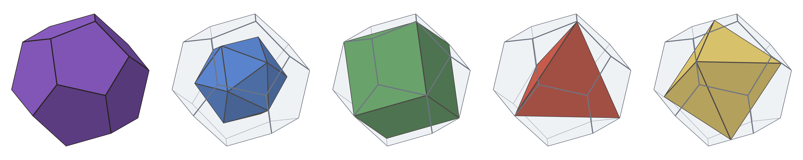
DICTO
DICTO
Cover by DICTO: the five solids at their one-world sizes, each inside a glass dodecahedral cell (Chapter 9)
The Platonic Solids
Book Eight · Wind 風 · The Five Orders of Space
Inside the five, the five filling space, and where the five live: DICTO
DICTO artist and geometer, Osaka, Japan · ORCID 0009-0001-2620-2036 https://dictospheres.com · contact@dictospheres.com
Book · draft of 13 November 2026 · Licence CC BY-SA 4.0 · Part of DICTO: Collected Geometric Works (DICTO DOI: 10.5281/zenodo.23345699)
DICTO: ideas, names, constructions and direction. Computation, verification and drafting with Claude (Anthropic).
DRAFT for DICTO's read, 13 November 2026; not published. Title and subtitle are working titles (the title is DICTO's); the cover (Cover by DICTO) is the skins row of #106, re-rendered at cover size; no DICTO DOI is reserved yet. Built from the plan of 11 November (papers/plan-book-platonic), with the Platonic Lattices plan and the DICTO STUDIES idea folded in.
New text, not yet read by DICTO: the Opening (The Outsider), the chapter openings and bridges, the "From the studies" sections, Chapter 4's table of the five Vacuus, its duality table, Dogstar's fifteen planes and the two disc rankings (§4.5), Chapter 11 (from the draft of 11 November), Chapter 12 (Beyond the Five, from the draft of 11 November), Chapter 13's section "The five on the hidden side" (study 2026-11-11-twin-vacuus), the Epilogue and the Coda. Every other chapter passage is a published paper's section, word for word, except the edits listed in assemble.py (EDITS: running credit lines removed).
Decided by DICTO (13 November): the plan's number 10 is #41 and its number 21 is finding F21; #41, #42 and #47 are told in full in Space-Fillers and Lattice Moves (Chapters 5, 6 and 8), so Chapters 7 and 8 here are short pointers and Chapter 10 points to the Jewel, while #8, #99 and #92 stay here in full.
Open items stated as open in the text: the smallest connector kit (Chapter 8); Conjecture 1 of #45 (Chapter 5); icosahedra with Cleo-Icos and Antonius in all of space (Chapter 6); why the kite echo holds, the exact collapse rate of the twins, and whether the disc law holds beyond level 10 (Chapter 13); whether the open fans of the Dogstar, the rhombic dodecahedron and the rhombic triacontahedron follow one law (Chapter 4); the conjectures of #44 and the open lines of #92 (Chapter 3).
Revised 13 November 2026 for The Five Orders of Space (DICTO's decision of 13 November; plan papers/plan-meta-paradigm, report papers/book-arcs-2026-11-13), new text not yet read by DICTO: the series line; the Definitions used; the Opening's question, its schools sentence and its Elements XIII sentence, with the OG's hidden-side results moved out of the Opening to Chapter 13; the "also told in" lines of Chapters 2, 3, 4 and 6; the duality table and the two disc rankings of Chapter 4; the bridges at the ends of Chapters 4 and 5 and of Chapter 12; Chapter 11 named as the answer; Chapters 12 and 13 swapped, so that Beyond the Five is now Chapter 12 and Towards the Quasicrystal Chapter 13, with every cross-reference changed; the Epilogue moved before the Coda, its hand-off to the Void books, and the Coda's closing paragraph. The shared series page of The Five Orders of Space is at the back, word for word from papers/series-five-orders.
Opening. The Outsider
Plato gave the five regular solids to the elements in the Timaeus; Euclid closed the Elements by building all five and proving that there are no more (XIII.13–18); Pacioli drew them for De divina proportione (1509) with Leonardo's figures; Kepler nested them one inside the other in the Mysterium cosmographicum (1596). Schläfli counted the regular solids in every dimension (1852); George Hart catalogued the stellations of the dodecahedron (1996), the Dogstar among them; Keith Critchlow set the regular and semi-regular solids and their space-fillings out as a design source book, Order in Space (1969). In The Five Orders of Space this is Book Eight, the ring of the Wind, which Musashi gave to the other schools: where he criticised them, this book credits them. It follows DICTO's work on the same five: D the dodecahedron, I the icosahedron, C the cube, T the tetrahedron and O the octahedron, always in that order, the order of his name. It takes them apart, puts them together, fills space with them, and finds where all five live at once. Like Book XIII of the Elements, it builds all five together, in one cell (Chapter 1), and ends its climb with the count that there are no more, in every dimension (Schläfli; Chapter 12): it is the Euclidean close of the work, the last book whose subject can be finished.
Among the five there is an outsider. The cube fills space alone, and the tetrahedron fills it with the octahedron; the dodecahedron and the icosahedron, the two solids of five-fold symmetry, fill it with neither. Two icosahedra on a common edge leave a gap of 360° − 2 × 138.19° = 83.62° round it, and no number of icosahedra closes it (#19); no lattice has a five-fold axis. The icosahedron is the most outside of all: it is the only one of the five that fills no space by itself even in the curved space of four dimensions, where each of the other four builds a regular polytope (Chapter 11). Much of this book is about bringing it home: in a shell of pieces that makes it a dodecahedron (Chapter 6), in the octahedron with six Admiral Caps (Chapters 8 and 9), in every cell of the octet (Chapter 10), and among the corners of the 600-cell (Chapter 11).
So the book has a question. Is there a place where all five are at home together, the outsider included? It climbs towards an answer in three parts: inside the five, where they hold one another; the five filling space, where with help every mix of them fills it; and where the five live: of the four four-dimensional reflection groups, one family alone holds all five among its corners.
A second outsider: the OG
DICTO adds a second outsider, one of his own: the DICTO Ogdoecontahedron, the OG (#31), with 80 faces, 60 kites and 20 regular hexagons, 102 corners and 180 edges of only two lengths. It is neither Platonic nor Archimedean nor Catalan. It is built round the icosahedron's axes and it leads back to the five by an unexpected route.
The OG is a cut solid. Take the Catalan pentakis dodecahedron (a dodecahedron with a low pyramid on every face) with the same twelve five-fold corners as the OG: all 60 kite planes of the OG are exactly its 60 face planes, and the OG is that pentakis dodecahedron with its twenty six-fold corners cut off, exactly as deep as the cuts can go before they touch, at φ²/3 of those corners' distance from the centre (study 2026-11-11-twin-vacuus, exact in ℚ(√5)). The shallower cut is catalogued (McCooey's 6-truncated pentakis dodecahedron, with pentagons instead of kites); the touching cut, the OG, was not found in the sources checked.
What the OG has to do with the five is the book's last discovery, and it is kept for Chapter 13; Figure O.1 gives a first look at it, an Angelus (DICTO's name for the Vacuus of a twin form; Chapters 4 and 13).
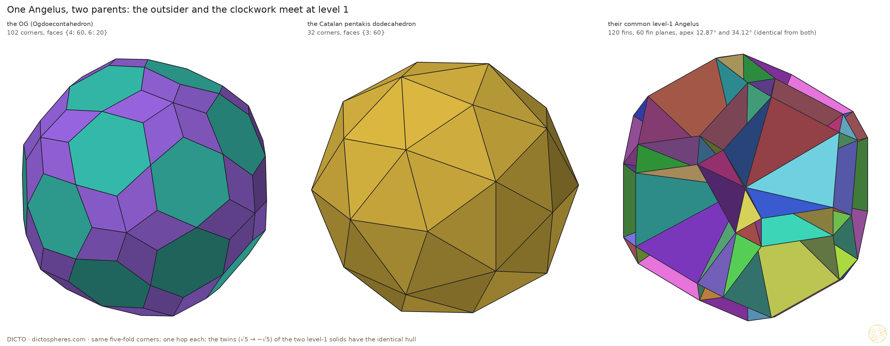
Figure O.1. One Angelus, two parents. Left, the OG (60 kites purple, 20 hexagons teal); middle, the Catalan pentakis dodecahedron scaled to the same twelve five-fold corners (60 triangles); right, their common Angelus after one step on the hidden side (120 fins in 60 planes, apex angles 12.87° and 34.12°). The two twin hulls are equal as exact point sets (study 2026-11-11-twin-vacuus, level1_match.py and scale_norm.py).
What this book shows
Part One. Inside the five. (1) Euclid's cube in the dodecahedron, Pacioli's icosahedron in the octahedron and Kepler's nest close into one periodic cell holding all five, and twelve classical inscriptions give fourteen chains through all five (Chapter 1; #8, #99). (2) Every Platonic solid has exactly two golden cuts, ten in all; on the octahedron they are Icosaxes and Unborn Axes, which fill space together, and no point set over ℚ(√5) holds a Golden Cut Cube (Chapter 2; #88, #90). (3) Of the five face pyramids, a set fills space exactly when it is the cube's alone, the tetrahedron's with the octahedron's, or both; face to face, the pyramids rebuild their solids, and the tetrahedron's and octahedron's tile exactly as the close-packed stackings (Chapter 3; #44, #77, #92). (4) The Vacuus of a solid keeps only the walls between its centre pyramids; its angles are read from the polar solid, and which edges lie on central discs is read from the symmetry: the octahedron has three square discs, the other four none (Chapter 4; #87, #107). (5) Balls on the corners of each solid make five round bodies whose smallest width is exactly 1 (Chapter 5; #45).
Part Two. The five fill space. (6) The dodecahedron is an icosahedron in a shell of 12 pentagonal pyramids, 30 AXE and 20 CLEO, and the shells alternate without end, the Chain of Karma (Chapter 6; #19, #22). (7) Dodecahedra on alternate cubes leave Hart's Dogstar, of volume exactly φ/2, and the two fill space (Chapter 7; #42). (8) Every one of the 31 mixes of the five fills space with a kit of seven connectors (Chapter 8; #47). (9) Each of the five fits in a skin that makes it a dodecahedron, so every mix lives on one cubic grid (Chapter 9; #106). (10) In the octet every cell holds all five, nested, for ever by thirds (Chapter 10; #99, #8, #41).
Part Three. Where the five live. (11) In four dimensions four of the five fill curved space alone, the icosahedron only with the tetrahedron, and of the polytopes of the four four-dimensional reflection groups only the Queens' family, of the 600-cell and the 120-cell, houses all five among its corners: proved, with every resident counted exactly (Chapter 11; #108). (12) Three families of the five go on in every dimension; the golden line of the dodecahedron and the icosahedron stops in the fourth, and with Schläfli's count the classical subject closes (Chapter 12). (13) A ladder of crystals climbs from the octet to five-fold order, a nest on every icosahedral seat; and on the hidden side of the OG the regular icosahedron and dodecahedron appear exactly (Chapter 13; #99).
The Epilogue gathers what has been shown, and the Coda returns to Plato's elements and DICTO's colours. Each chapter opens with what it shows and closes with what is claimed, what is known and used, and what is open. The proofs are those of the papers, quoted word for word in the shaded blocks, each headed with its paper and section ("#99 §1") and keeping that paper's own theorem numbers; every result can be traced to its paper and DICTO DOI. Results that never needed a paper of their own, including results that something cannot be done, come from DICTO's studies and are marked with the study and its status.
Notation
DICTO
dodecahedron, icosahedron, cube, tetrahedron, octahedron; the colours are Plato's elements as DICTO colours them (Coda): aether violet, water blue, earth green, fire red, air yellow
φ
the golden ratio (1 + √5)/2 = 1.618…
ℚ(√5)
the numbers a + b√5 with a, b rational; "exact" means checked in such numbers with remainder zero
face pyramid, centre pyramid
the cone from a solid's centre over one of its faces
octet
the space-filling of regular tetrahedra and octahedra, two of each round every edge
Galois twin
the solid whose corners are obtained by exchanging √5 and −√5 in every coordinate
#N
DICTO's paper number N; the papers drawn on are listed after the Appendix with their DICTO DOIs
Definitions used
The names of this book are entries of The DICTOnary of Atoms (Book One, II; version 1.3), the definitions of the whole work: the five Platonic solids; the EKP cell (A.8); AXE, CLEO and FUJI, the Lotus seed, the Cleo-Icos and Antonius (A.19, A.20); the Chain of Karma (A.22); the OG (A.31) and its family (A.39); the Jewel (A.41); the Sunstar (A.42); the face pyramid (A.44); the Reuleaux Platonic solids (A.45); the Admiral Cap (D16) and every mix (A.47); the Golden Cut, Icosaxes and Unborn Axes; the Dogstar; the Vacuus. Two names are not yet entries and are defined here where they are first used: the Angelus and the Angeli (Chapter 13); the DICTOnary takes them up at its next version.
From #8 The Euclid–Kepler–Pacioli Cell (§§1, 3, 4) and #99 Plato's Five in the Octet (§2).
The five solids were nested long before anyone asked how they fill space. Euclid built the dodecahedron on a cube, a roof over each of its six faces (Elements XIII.17), so the cube sits inside the dodecahedron on eight of its twenty corners. Pacioli found the icosahedron's twelve corners on three golden rectangles at right angles to one another, and set it inside the octahedron with a corner on each edge, cutting it in the golden ratio. Kepler crossed two tetrahedra in a cube, the stella octangula, whose common core is the octahedron, and in the Mysterium cosmographicum (1596) nested all five between the spheres of the planets.
This chapter puts these classical inscriptions together. The roofs of Euclid's construction, folded back through the faces of the cube, land on a regular icosahedron, and repeating the cube makes one periodic cell in which all five solids nest on thirteen points per cell, the Euclid–Kepler–Pacioli (EKP) cell of #8; the neighbours' roofs are Pacioli's rectangles. Then the twelve classical inscriptions between the five, with their exact edge factors, and the chains they give through all five (#99 §2).
What this chapter shows. (1) Reflecting Euclid's twelve roof corners through the cube's faces gives a regular icosahedron of edge 2/φ² in a cube of edge 2; repeated, the cube gives a periodic cell (space group Pm-3) with 13 nodes per cell (#8 §1). (2) The ridges of the six neighbouring cells meet inside every cube as Pacioli's three golden rectangles (#8 §3). (3) One cell holds icosahedron ⊂ octahedron ⊂ stella octangula ⊂ cube ⊂ dodecahedron, exactly nested, with Kepler's great stellated dodecahedron between the icosahedron and the dodecahedron (#8 §4). (4) Twelve classical inscriptions join the five; they give fourteen chains through all five, eighteen with the truncated tetrahedron (#99 §2).
1.1 The EKP cell
The sections below are from #8, The Euclid–Kepler–Pacioli Cell (DICTO DOI: 10.5281/zenodo.23284106), word for word; figures are renumbered through the chapter, and numbers in square brackets refer to the references of #8 (Appendix).
Take the cube with corners (±1, ±1, ±1) and φ = (1+√5)/2. Euclid's roof construction (Elements XIII.17) adds over each face a roof whose ridge has length 2/φ and whose ridge vertices are the twelve points (0, ±1/φ, ±φ) and their cyclic permutations; with the cube's eight corners they are the 20 vertices of a regular dodecahedron of edge 2/φ. Reflecting each ridge vertex back through the cube face it stands on, (0, ±1/φ, ±φ) → (0, ±1/φ, ±(2−φ)) = (0, ±1/φ, ±1/φ²), gives twelve points that are the vertices of a regular icosahedron of edge 2/φ², centred in the cube. The cube is then repeated by translations of 2 along x, y and z (Figure 4 of #8).
The reflection is the fold of the title: on every axis the coordinate is folded back at the cube face, so a roof vertex of one cell is an icosahedron vertex of the neighbouring cell. This is why the lattice has only 13 nodes per cell (one cube corner and the 12 icosahedron vertices) and why every dodecahedron vertex is already a node.
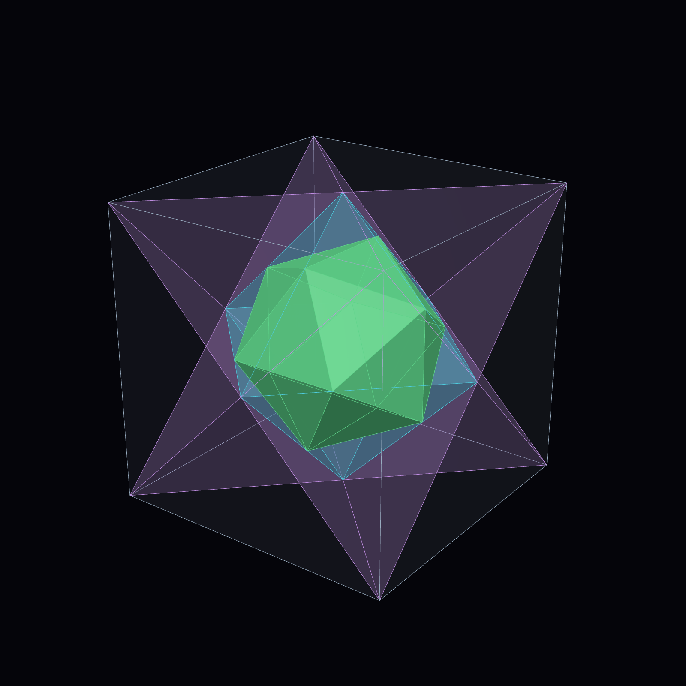
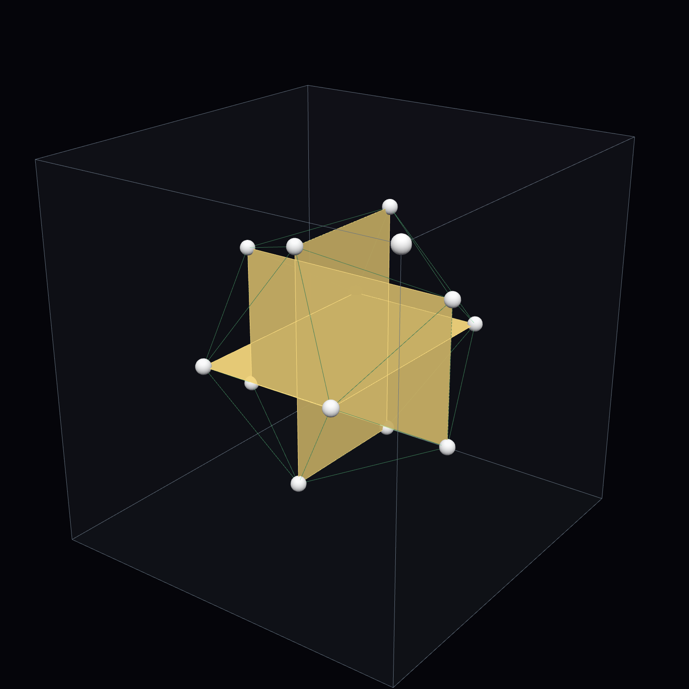
Figure 1.1–1.3. (1) One cell: the cube (grey), Euclid's dodecahedron (gold), Kepler's great stellated dodecahedron (orange) and the icosahedron (green), all on the same 20 + 12 points. (2) Kepler's chain: icosahedron ⊂ octahedron (cyan) ⊂ stella octangula (violet) ⊂ cube. (3) Pacioli's three golden rectangles (2/φ × 2/φ²) whose 12 corners are the icosahedron; each is a pair of ridges from the neighbouring cells.
#8 §3. Pacioli's rectangles are the neighbours' roofs
Each roof ridge pokes into the neighbouring cell. Seen from inside that cell, the ridge is the long side (2/φ) of a golden rectangle whose short side (2/φ²) is an icosahedron edge. The six neighbours' ridges make, inside every cube, the three mutually perpendicular, interlocking golden rectangles of Pacioli's De divina proportione (1509), whose twelve corners are the icosahedron (Figure 1.3). The fold is therefore literally the neighbours' roofs meeting in the middle of the cell. (Our observation, 2026-10-06: "four elements of roofing structure overlap, making golden section rectangles".)
The two regular tetrahedra on alternate cube corners (Kepler's stella octangula) intersect in the octahedron on the six cube-face centres. The twelve icosahedron vertices lie one on each of that octahedron's twelve edges, dividing it in the golden ratio, and eight of the icosahedron's faces lie in the octahedron's eight face planes. Hence one cell contains, exactly nested, icosahedron ⊂ octahedron ⊂ tetrahedra ⊂ cube ⊂ dodecahedron, with the great stellated dodecahedron between the icosahedron and the dodecahedron (Figure 1.1–1.2). Each inclusion is classical; what is new here is that the whole chain is one periodic cell. The tetrahedra and octahedron edges lie along cube face diagonals (√2, 2√2), not along icosahedral axes, so a physical model needs a second family of rods.
1.2 Twelve inscriptions and the chains through all five
The inscriptions join the five in every direction: corners on corners, corners on the golden points of edges, corners on face centres. Their edge factors multiply along a chain, and a chain from the octahedron through all five back to an octahedron of the same orientation is the nest of the octet, which Chapter 10 builds in every cell (Theorem 1 of #99 there). The gap pieces listed below, between consecutive solids of that nest, return in Part Two: the Admiral Caps in Chapters 6 and 8, Euclid's roofs in Chapters 7 and 9.
The sections below are from #99, Plato's Five in the Octet (DICTO DOI: 10.5281/zenodo.24012439), word for word; figures are renumbered through the chapter, and numbers in square brackets refer to the references of #99 (Appendix).
Twelve classical inscriptions join the five solids (corners on corners, on edge points or on face centres), with these edge factors: O ⊃ I √2/φ² (Pacioli); O ⊃ C √2/3 (face centres); O ⊃ T 2/3 (four face centres); I ⊃ D φ/3 (face centres); I ⊃ O φ/√2 (six edge midpoints on the axes); D ⊃ C φ (eight corners); D ⊃ I φ²/√5 (face centres); D ⊃ T φ√2 (four corners); C ⊃ I 1/φ (touching the faces); C ⊃ O 1/√2 (face centres); C ⊃ T √2 (four corners); T ⊃ O 1/2 (edge midpoints). With the truncated tetrahedron U: T ⊃ U 1/3, U ⊃ O 3/2, U ⊃ T 5/3. These give fourteen chains through all five solids, and eighteen through all six with U (data-nest-catalogue*.txt). Both cells of the octet carry a complete chain: T ⊃ O (1/2) continues as O's chain at half size.
gap
pieces
O − I
the six Admiral Caps (DICTO, F21), one round each corner of O
I − D
12 Sheriffs (DICTO's name: the pentagonal cap, a corner of I over each face of D; base edge = D's edge, slant edges exactly √3/φ × base) and 30 Lone-stars (DICTO's name: the thin wedge, an edge of I with the edge of D beneath it, crossing at right angles; its other four edges equal). New shapes.
D − C
Euclid's six roofs
C − T
four copies of O's centre pyramid at 2/3 (Theorem 1d)
1.3 From the studies: crossed nests
The stella octangula is a crossed nest: two tetrahedra, neither inside the other, whose common core is the octahedron. The same holds one level up, exactly in ℚ(√5) (study 2026-11-06-crossed-nest; exact check in study 2026-11-13-platonic-exact-checks): on the dodecahedron's twenty corners the five crossed cubes have the rhombic triacontahedron as their core, and the ten crossed tetrahedra (or either chiral set of five) have the regular icosahedron of edge exactly 1/φ times the dodecahedron's; on the icosahedron's thirty edge midpoints the five crossed octahedra have as core the icosahedron itself scaled by exactly 1/φ, in the same orientation, so crossing and coring repeat as a golden loop, icosahedron, five octahedra, icosahedron, shrinking by 1/φ at each turn. The compounds and their cores are classical (Kepler; Coxeter's compounds); the study records them as a ladder of crossed nests. Its continuation, solids crossing the walls of the octet's cells as Euclid's dodecahedra cross the walls of the EKP cell, is in Chapter 10.
Claimed, known, open. Known and used: Euclid's roofs (XIII.17); Pacioli's rectangles and his icosahedron in the octahedron; Kepler's stella octangula and great stellated dodecahedron; the twelve inscriptions; the compounds of five cubes, five and ten tetrahedra and five octahedra. Claimed in #8, as a candidate and not as priority: the fold (roof corners reflected through the cube faces onto a regular icosahedron, each on a neighbouring cell's icosahedron), the 13-node cell and the network of Chapter 10. From #99: the count of fourteen chains through all five (eighteen with the truncated tetrahedron), from its catalogue data. From the studies: the crossed-nest cores of §1.3, exact (study 2026-11-13-platonic-exact-checks).
Chapter 2. Two Golden Cuts Each
From #88 Every Platonic Solid Has Exactly Two Golden Cuts (§§2, 4, 5, 6) and #90 Golden on the Octahedron, Silver on the Cube (§§3, 10).
Also told in Book Nine, The Golden Ladder, Chapters 4 and 7, in full: the anatomy of the five here is a rung of the ladder there.
Cut every corner of a Platonic solid by the same amount and each face becomes a truncated polygon, its sides alternating between a short and a long length. At one depth the two lengths are equal and the result is Archimedean. There are exactly two other depths at which the two lengths stand in the golden ratio, one with the corner sides long and one with the original sides long, and this is so for every one of the five: ten solids in all, the DICTO-Kepler golden truncations, the Greater and Lesser Golden Cut solids (#88). On the octahedron the pair is DICTO's Icosaxes and Unborn Axes, which fill space together (#48). The cube's pair is the odd one out: its numbers need √2 as well as √5, and no golden structure in any dimension contains it (#90).
What this chapter shows. (1) Exactly two golden cuts for each Platonic solid, x = φ/(k + 2φ) and x = 1/(φk + 2), with k = 1 for the solids of triangles, √2 for the cube and φ for the dodecahedron: ten solids (Theorem 2 of #88). (2) On the octahedron the pair is Icosaxes and Unborn Axes, the pair that fills space (#88 §5, from #48). (3) The golden pairs of the octahedron and the icosahedron are sections of regular four-dimensional solids, the 24-cell and the 120-cell, at the same fractions 1/φ² and 1/φ of the way to a cell (Theorem 3 of #88). (4) The Golden Cut Cubes have the distance field ℚ(√2, √5), so no point set over ℚ(√5), and none of its sections or projections, contains one: not the quasicrystal, not E8, not the regular four-dimensional solids (Main Theorem of #90). (5) In cube × octahedron, asking the cut to equal the shadow of a lattice orbit picks the golden ratio and Icosaxes on the octahedron side and the silver ratio 1 + √2 on the cube side (Theorem 4 of #90).
2.1 Exactly two golden cuts
The sections below are from #88, Every Platonic Solid Has Exactly Two Golden Cuts (DICTO DOI: 10.5281/zenodo.23896439), word for word; figures are renumbered through the chapter, and numbers in square brackets refer to the references of #88 (Appendix).
A truncated polygon is a 2n-gon cut from a regular n-gon by cutting every corner equally; its sides alternate between two lengths. For n = 3 it is a truncated triangle. Its ratio is long side over short side; the regular case has ratio 1. A Platonic solid of edge 1 cut at x (0 < x < ½) is what remains after every corner is cut off by the plane through the points at distance x from that corner along its edges, the same x at every corner. For x < ½ the cuts of different corners do not meet inside the solid, so each corner becomes a regular polygon of side kx, where k = 2 sin(α/2) for the face angle α: k = 1 for solids of triangles, √2 for the cube and φ for the dodecahedron. Each original face becomes a truncated polygon with sides kx (shared with a corner) and 1 − 2x (shared with another original face). The Archimedean truncations are the cuts at which these two sides are equal.
#88 §4. Main theorem: exactly two golden cuts for each Platonic solid
Theorem 2. For each Platonic solid there are exactly two cuts x at which every original face becomes a truncated polygon with ratio φ: x = φ/(k + 2φ), where the sides shared with the corners are the long ones, and x = 1/(φk + 2), where the original sides are the long ones. This gives ten solids, the DICTO-Kepler golden truncations (Table 2). The deeper of the two cuts gives the Greater Golden Cut solid, with the larger corner faces; the lighter gives the Lesser Golden Cut solid. For the octahedron (k = 1) they are DICTO's Icosaxes (x = 1/φ², greater) and Unborn Axes (x = 1/(φ√5), lesser).
Proof. With the same cut x at every corner, the two sides of a truncated face are kx and 1 − 2x. The ratio is φ exactly when kx = φ(1 − 2x) or 1 − 2x = φkx. Each equation is linear in x with one root, and for every k > 0 both roots lie in (0, ½); the first is the larger. For k = 1, φ/(1 + 2φ) = 1/φ² and 1/(φ + 2) = 1/(φ√5), using φ + 2 = φ√5. The identification with Icosaxes and Unborn Axes: in coordinates where the octahedron is |x| + |y| + |z| ≤ 1 and the cut is |x|, |y|, |z| ≤ c, the hexagon sides are √2(2c − 1) and √2(1 − c); c = 1/φ and c = φ²/(φ + 2) give the squared cutting depths 3/φ² and 3φ²/5, the exact depths of Icosaxes and Unborn Axes computed independently from the dataset. All ten ratios were also checked symbolically equal to φ and all ten volumes computed exactly (golden_cuts_exact.py). ∎
Platonic solid (DICTO order)
Greater Golden Cut (corner sides long)
Lesser Golden Cut (original sides long)
Faces
Dodecahedron
Greater Golden Cut Dodecahedron, x = 1/3
Lesser Golden Cut Dodecahedron, x = (7 − √5)/22 ≈ 0.2165
20 triangles, 12 truncated pentagons
Icosahedron
Greater Golden Cut Icosahedron, x = 1/φ²
Lesser Golden Cut Icosahedron, x = 1/(φ√5)
12 pentagons, 20 truncated triangles
Cube
Greater Golden Cut Cube, x ≈ 0.3479
Lesser Golden Cut Cube, x ≈ 0.2332
8 triangles, 6 truncated squares
Tetrahedron
Greater Golden Cut Tetrahedron, x = 1/φ²
Lesser Golden Cut Tetrahedron, x = 1/(φ√5)
4 triangles, 4 truncated triangles
Octahedron
Icosaxes (greater), x = 1/φ²
Unborn Axes (lesser), x = 1/(φ√5)
6 squares, 8 truncated triangles
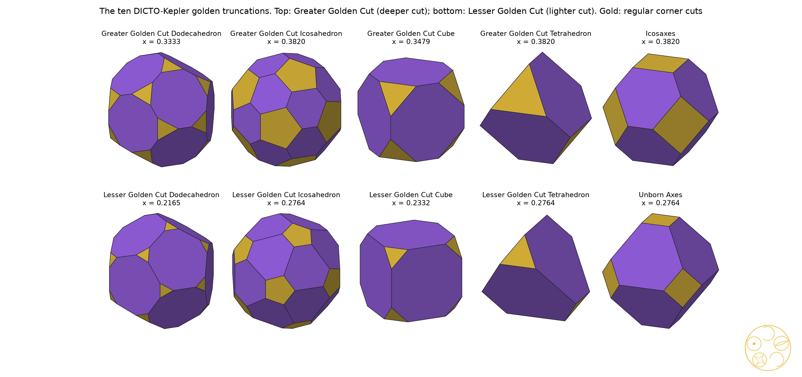
Figure 2.1. The ten DICTO-Kepler golden truncations, in DICTO order. Top: the Greater Golden Cut solids (deeper cut, corner sides long); bottom: the Lesser Golden Cut solids (lighter cut, original sides long). For the octahedron these are DICTO's Icosaxes and Unborn Axes. Regular corner polygons in gold.
#88 §5. Aristotle's question: the golden pair fills space
Aristotle wrote that among solids the pyramid and the cube fill space (#44 [3]). Koca et al. [4] describe the semi-uniform truncated octahedra T(x), the convex hulls of all permutations of (±(1 + x), ±x, 0), and among them the non-regular ones at x = τ and x = 1/τ (τ = φ); the Polytope Wiki [5] lists the semi-uniform truncated octahedron. In #48 [6] DICTO showed that T(x) and T(1/x) together fill space for every x > 0, from Kelvin's cell (x = 1) to the golden pair (x = τ), and that cutting the icosahedra and Unborns at the golden point gives exactly this pair as two convex solids, Icosaxes and Unborn Axes, the only cut at which both are convex; their volumes there are 1 + 2√5/3 and 1 + √5/3. Theorem 2 singles the same pair out from another side: among all truncations of the octahedron they are exactly the two whose faces are golden.
2.2 Where the golden cuts live
The octahedron's golden pair sits in the 24-cell and the icosahedron's in the 120-cell, at the same two fractions of the way from the centre to a cell. The series of sections is Alicia Boole Stott's; what #88 adds is that the golden pairs are among them.
The sections below are from #88, Every Platonic Solid Has Exactly Two Golden Cuts (DICTO DOI: 10.5281/zenodo.23896439), word for word; figures are renumbered through the chapter, and numbers in square brackets refer to the references of #88 (Appendix).
#88 §6. The golden truncations as sections of the regular four-dimensional solids
Theorem 3. Slice the 24-cell, or the 120-cell, by hyperplanes perpendicular to the line from its centre to the centre of one cell, and measure the height t as a fraction of the distance from the centre to that cell's centre. (a) In the 24-cell every section with 0 < t < 1 is a truncated octahedron; it is Archimedean at t = 1/2, Icosaxes at t = 1/φ² and Unborn Axes at t = 1/φ. (b) In the 120-cell the sections at t = 1/φ², 1/2 and 1/φ are the Greater Golden Cut Icosahedron, the Archimedean truncated icosahedron and the Lesser Golden Cut Icosahedron.
Proof. (a) Take the 24-cell with corners at all permutations of (±1, ±1, 0, 0); the point (1, 0, 0, 0) is the centre of an octahedral cell, at distance 1, so the section at height t is the hyperplane x₁ = t. For 0 < t < 1 the only edges that cross it join a corner (1, a) to a corner (0, a + c), where a and c are perpendicular unit vectors along coordinate axes (edge length √2). The crossing point is a + (1 − t)c, and these 24 points are the permutations of (0, ±1, ±(1 − t)). With s = 1 − t each hexagon has sides √2(1 − s), shared with another hexagon, and √2 s, shared with a square; the squares are regular. The ratio is φ exactly when s = 1/φ (t = 1/φ², square-shared sides long: Icosaxes) or s = 1/φ² (t = 1/φ, hexagon-shared sides long: Unborn Axes); s = 1/2 gives equal sides. (b) In the exact atlas of the 120-cell's sections of #65 [7] (exact in Q(√5)), the cell-first sections at heights 9/16 + √5/4, 47/64 + 21√5/64 and 29/32 + 13√5/32 (atlas units), divided by the distance to the cell centre, 47/32 + 21√5/32, are at t = 1/φ², 1/2 and 1/φ. An exact comparison in Q(√5) of all scale-free distances between corners (exact_cmp.py) shows that the outer two are congruent, up to scale, to the icosahedron cut at x = 1/φ² and at x = 1/(φ√5); the middle one has 90 equal edges. ∎
These series of sections are classical: Alicia Boole Stott [8] cut all six regular four-dimensional solids in such series and drew the sections, among them the 120-cell's layers parallel to one cell. What we add is that the golden pairs appear in them, and that they do so at the same fractions 1/φ² and 1/φ in the 24-cell and in the 120-cell. Several of DICTO's solids were already defined as sections in #65 [7]: White Knight is the 120-cell's cell-first section at t = 1/(2φ) (atlas height 29/64 + 13√5/64), and our check confirms it (all 7,140 scale-free distances agree; White Knight is that section enlarged by φ⁴/4); what is new is that its edges are in ratio φ and its 20 hexagons are truncated triangles. Haigha and Hatta, which DICTO noticed resemble the golden truncated icosahedra, are the 120-cell's edge-first sections at atlas heights 3/64 + √5/64 and 7/64 + 3√5/64: Haigha carries the same 12 pentagons and 20 hexagons, but with only a 3-fold axis its faces are tilted off the icosahedral directions.
A search of all six regular four-dimensional solids. We sliced the 5-cell, 8-cell, 16-cell, 24-cell, 600-cell and 120-cell at 2,400 heights in each of their four main directions (vertex-, edge-, face- and cell-first) and compared every convex solid of the dataset with every section, scale-free (slices4d.py, floating point). Besides the solids already defined as sections in #63 and #65, which the search found again, two solids of Table 1 appear: the TI Star core is the 120-cell's cell-first section at t = 3(√5 − 2) (atlas height 33/32 + 15√5/32; exact comparison in Q(√5)), and Icosaxes appears a second time, as the 120-cell's vertex-first section at φ/2 of the way to the corner (atlas height 11/8 + 5√5/8; checked exactly: its 24 corners match Icosaxes corner for corner, every squared distance in the same ratio 3 − √5, in Q(√5); s7_icosaxes_exact.py in the #89 study), a section with octahedral symmetry cut from the icosahedral 120-cell. Golden Clasp, the GTI and Unborn Axes (outside the 24-cell) were not found in these directions.
2.3 Golden on the octahedron, silver on the cube
The cube's golden cuts cannot be found in any of these places. The reason is the square's diagonal: the corner side of a cut square is √2 times the cut, so the Golden Cut Cubes need √2 and √5 together, and every golden structure lives in ℚ(√5) alone.
The sections below are from #90, Golden on the Octahedron, Silver on the Cube: Six Dimensions and the Golden Cut Cubes (DICTO DOI: 10.5281/zenodo.23931136), word for word; figures are renumbered through the chapter, and numbers in square brackets refer to the references of #90 (Appendix).
Main Theorem (field obstruction). (a) The distance field of the Greater and Lesser Golden Cut Dodecahedra, Icosahedra, Tetrahedra and Octahedra is Q(√5). The distance field of the Greater and of the Lesser Golden Cut Cube is Q(√2, √5), of degree 4 over Q.
(b) Let S be a set of points with coordinates in Q(√5) in an orthonormal frame of Rn, any n. No subset of S, of a section of S by a flat defined over Q(√5), or of an orthogonal projection of S onto a subspace defined over Q(√5), is similar to the corner set of a Golden Cut Cube.
(c) In particular no Golden Cut Cube occurs in the icosahedral cut-and-project of Z6 (in any lattice shadow, tile, window or model set), in the projection of E8 to H4 or its sections, or in a section of a regular four-dimensional solid by a hyperplane defined over Q(√5). The same holds with Q(√2) in place of Q(√5), so octagonal structures fail as well.
Proof. (a) For the cut cube with corners at the signed permutations of (1, 1, t), the squared distances include 4, 4t2 and 2(1 − t)2; their ratios give t2 and then t, and every squared distance is a polynomial in t with rational coefficients, so the distance field is Q(t). The octagon's corner side over original side is √2·x/(1 − 2x) = (1 − t)/(√2 t), so the golden condition reads (1 − t)/t = √2φ±1, and Q(t) = Q(√2φ). Now (√2φ)2 = 2φ + 2, so φ ∈ Q(√2φ), and then √2 ∈ Q(√2φ); hence Q(t) = Q(√2, √5), of degree 4. For the other eight cuts the solids have coordinates in Q(√5) and the cut fractions 1/3, (7 − √5)/22, 1/φ2 and 1/(φ√5) lie in Q(√5); all their squared-distance ratios were checked exactly to lie in Q(√5) (s2).
(b) A flat over Q(√5) meets Q(√5)n in points of Q(√5)n (Cramer's rule), and the orthogonal projector B(BTB)−1BT onto the span of a basis B over Q(√5) has entries in Q(√5). So every point of a section or projection has coordinates in Q(√5), and all squared-distance ratios of any subset lie in Q(√5). A similar copy of a Golden Cut Cube has the same distance field Q(√2, √5) by (a), which is not contained in Q(√5).
(c) The shadow of y ∈ Z6 is Σ yiai ∈ Q(√5)3 and the windows and tiles are hulls of such shadows; the icosian coordinates of E8 and the 600-cell lie in Q(√5); the regular four-dimensional solids have coordinates in Q(√5). The case of Q(√2) is the same argument, since √5 ∉ Q(√2). □
The root of the difference is #88's constant cn = 2 cos(π/n): the corner side of a cut n-gon is cnx, and c3 = 1 and c5 = φ lie in Q(√5) while c4 = √2 does not. The square's diagonal is the whole obstruction.
Six dimensions give the pair a common home (#90 §§5–7). The sections of the product of a cube and an octahedron by the symmetric flats y = x/μ sweep from the octahedron through Icosaxes and Unborn Axes, the cuboctahedron and both Golden Cut Cubes to the cube. A section alone selects nothing, since the sweep passes every depth; but asking the section to equal the shadow of an orbit of lattice points does select. On the octahedron side the shortest lattice vectors, the mixed roots of D6, cast Icosaxes point for point exactly at μ = φ, the Fibonacci slope; on the cube side the silver ratio 1 + √2 appears with the Archimedean truncated cube; and no lattice orbit selects either Golden Cut Cube (Theorem 4 of #90). The paper's conclusion:
The sections below are from #90, Golden on the Octahedron, Silver on the Cube: Six Dimensions and the Golden Cut Cubes (DICTO DOI: 10.5281/zenodo.23931136), word for word; figures are renumbered through the chapter, and numbers in square brackets refer to the references of #90 (Appendix).
The golden pairs of the dodecahedron, icosahedron, tetrahedron and octahedron live in Q(√5), the field of every golden structure; the Golden Cut Cubes live in Q(√2, √5) and so lie outside all of them, in any dimension. They are Galois twins of one another, and their lift to Z6 has no golden self-similarity. DICTO's six-dimensional home for the cube and octahedron holds both pairs on one line of sections: there the lattice picks the Fibonacci slope and Icosaxes on the octahedron side and the silver ratio and the truncated cube on the cube side. The same line is the weight walk of the web of bonds (#48, #51–#53, #58): the sections at μ and 3 − μ are the two caesium chloride cells and fill space together (Proposition 6), so the six-dimensional home and the bond papers' sliding weight are one construction. The cube's golden cut sits where √2 and √5 cross, which is why #89 found its home in the rectified tesseract, which passes through every depth, and not in a regular solid.
Cuts at edge 1, from Table 2 of #88; fields from the Main Theorem of #90. "Not studied": no filling of space by these pairs was sought, and none is claimed either way.
Claimed, known, open. Known and used: the truncations of the Platonic solids; the semi-uniform truncated octahedra at x = τ and 1/τ (Koca et al.); the sections of the regular four-dimensional solids (Boole Stott); the icosahedral cut-and-project and E8 (as cited in #90). Claimed in the papers: exactly two golden cuts for each solid and the ten solids (#88, Theorem 2); the golden pairs as sections at 1/φ² and 1/φ (#88, Theorem 3); the field obstruction and the selection by lattice orbits (#90). Open: whether any golden pair other than the octahedron's fills space, alone or with partners; it has not been tested.
Chapter 3. Aristotle's Pyramids
From #44 Aristotle's Pyramid (§§1–3, 5, 6), #77 Face to Face (§§3, 4) and #92 Aristotle's Pyramid in Layers (§§1, 7).
Also told in Book Ten, Alicia in Wonderland: The Red & White Queens, Chapters 2 and 4, as the lead-up to the Queens.
Every Platonic solid falls into congruent pyramids, one over each face, their tips meeting at the centre. "Among solids only two fill space, the pyramid and the cube," wrote Aristotle (On the Heavens III.8). Read as the regular tetrahedron the claim is false, and it took Maurolico and others two thousand years to correct it. Read as a face pyramid it becomes a question with an exact answer, and the answer is the first theorem of this book about the five filling space: the cube's pyramid fills space alone, the tetrahedron's only with the octahedron's, and the dodecahedron's and the icosahedron's never with face pyramids at all (#44). Face to face the pyramids can do nothing but rebuild their own solids (#77), and the face-to-face tilings by the tetrahedron's and octahedron's pyramids are exactly the close-packed stackings of equal spheres, uncountably many, all in layers (#92).
The icosahedron's pyramid is DICTO's Cleo-Icos; it fills space with a partner that is not a face pyramid, Antonius, two Cleo-Icos to one Antonius in the golden rhombohedron (#20). It may be the pyramid Aristotle meant: Bradwardine already saw the icosahedron cut into twenty tetrahedra round its centre.
What this chapter shows. (1) A set of the five face pyramids fills space exactly when it is {C}, {T, O} or {C, T, O}; no tile of any tiling by face pyramids is a D or an I (Main theorem of #44, by a Dehn-type count on dihedral angles). (2) In any tiling by T and O pyramids of equal edge the two come in equal numbers over large regions (Corollary 2 of #44). (3) Face to face, the pyramids round each apex make up their whole solid (Theorem 1 of #77). (4) A search over 5,143,972 clusters of up to six of DICTO's pieces finds no new solid with equilateral faces (Theorem 2 of #77). (5) The face-to-face tilings by T and O are exactly the Barlow stackings (Main theorem of #92).
3.1 Which pyramids fill space
The sections below are from #44, Aristotle's Pyramid (DICTO DOI: 10.5281/zenodo.23529497), word for word; figures are renumbered through the chapter, and numbers in square brackets refer to the references of #44 (Appendix).
Figure 3.1. The five face pyramids (gold), each shown in its solid (glass) with its tip at the solid's centre and the face at the bottom: cube, tetrahedron, octahedron, dodecahedron and icosahedron (the Cleo-Icos). Under each: the dihedral angles along its base edges and its side edges (Table 1).
Face pyramids. For a Platonic solid with centre O, the face pyramid over a face F is the convex hull of F and O (Figure 3.1). Its dihedral angle along a base edge is half the solid's dihedral angle, since the plane through O and the edge bisects it; along a side edge (from O to a corner) it is 360°/q, where q faces meet at that corner. We write C, T, O, D and I for the face pyramids of the cube, tetrahedron, octahedron, dodecahedron and icosahedron; I is DICTO's Cleo-Icos, reached from his CLEO piece [2, 3].
Face pyramid
Base edges
Dihedral along a base edge
Side edges
Dihedral along a side edge
cube
4
45° = π/4
4
120° (3 faces at a corner)
tetrahedron
3
α/2 ≈ 35.26°
3
120°
octahedron
3
(π − α)/2 ≈ 54.74°
3
90° (4 faces)
dodecahedron
5
θD/2 ≈ 58.28°
5
120°
icosahedron (Cleo-Icos)
3
θI/2 ≈ 69.09°
3
72° (5 faces)
Table 1. The five face pyramids. α = arccos(1/3) ≈ 70.53°, θD = arccos(−1/√5) and θI = arccos(−√5/3) are the dihedral angles of the tetrahedron, dodecahedron and icosahedron; the octahedron's is π − α (its cosine is −1/3) and the cube's π/2.
Filling space. A set U of face pyramids fills space if there is a tiling of space whose tiles are congruent copies (mirror images allowed) of pyramids of U, at finitely many fixed sizes, in any numbers and any positions, every kind in U used, with no face-to-face condition.
Cut each Platonic solid from its centre into identical pyramids, one on every face. Aristotle wrote that the pyramid fills space; he may have meant one of these. The theorem gives the complete answer: only the cube's pyramids fill space on their own, and only the tetrahedron's and the octahedron's do it together. The dodecahedron's and the icosahedron's can never be used at all.
Main theorem. A non-empty set U of the five face pyramids fills space if and only if U is {C}, {T, O} or {C, T, O}: the cube's pyramid alone, the tetrahedron's and the octahedron's pyramids together, or both of these. More precisely, in every tiling of space by copies of face pyramids, (a) no tile is a D or an I, and (b) T tiles occur if and only if O tiles occur.
The proof rests on a simple fact: wherever pieces meet along an edge, their angles round that edge must add up to a full turn.
Lemma 1 (angles round an edge). Let space be tiled by convex polyhedra, finitely many meeting any bounded set, and let e be an edge of a tile P. For all but finitely many points x of e, the tiles containing x have x either in the relative interior of an edge on the line of e, or in the relative interior of a face whose plane contains that line; the wedge angles at x (the dihedral angles of the tiles with x on an edge) add up to 2π, or to π when one tile has x inside a face (the edge lies on a face).
Proof. Only finitely many tiles meet a neighbourhood of e. Leave out of e the finitely many points that are corners of these tiles, or where an edge of one of them crosses the line of e. At any other point x of e, no tile has x in its interior (it would overlap P), and a tile with x inside an edge has that edge on the line ℓ of e. If a tile T has x inside a face, near x it is a half-space; P lies in the other closed half-space, and so does the line ℓ through x, so the plane contains ℓ. Near x every tile is therefore a wedge or a half-space bounded by planes through ℓ, and in the plane at right angles to ℓ through x they become sectors that cover a disc with disjoint interiors: their angles add up to 2π. A half-space counts π, and there is at most one, since two would leave no room for P. ∎
Lemma 1 is the edge-counting step behind the classical fact that a polyhedron which tiles space has Dehn invariant zero (Debrunner [9]; Lagarias and Moews [10]); we prove it here directly because the tilings may use several kinds of tiles.
Now let h be a map from angles to the rationals that is additive with rational coefficients and has h(π) = 0. At every such point x the values of h at the dihedral angles there add up to h(2π) = 0 or h(π) = 0. Such maps exist with any values on α, θD and θI, because:
The awkward angles of the tetrahedron, dodecahedron and icosahedron are unrelated to one another, so none of them can make up for another.
Lemma 2. π, α, θD and θI are linearly independent over the rationals.
Proof. cos² α = 1/9, cos² θD = 1/5 and cos² θI = 5/9, so tan α = 2√2, tan θD = −2 and tan θI = −2/√5: all three are pure geodetic angles in the sense of Conway, Radin and Sadun [4], with tangents rational multiples of √2, √1 and √5, three different square classes. None is a rational multiple of π: if θ = (m/n)π then eiθ is a root of unity and 2 cos θ an algebraic integer, but (2 cos θ)² is 4/9, 4/5 and 20/9, not integers. (Theorem 2 of [4] writes each angle as a rational multiple of π plus their basis angles; this shows the basis part is not zero.) Suppose a rational combination q1α + q2θD + q3θI is a rational multiple of π. By the Splitting Theorem of [4, Theorem 3], so is each part whose tangents are rational multiples of one square root: q1α, q2θD and q3θI separately; hence q1 = q2 = q3 = 0. ∎
In this basis the cube pyramid's angles are π/4 and 2π/3, the side edges' 2π/3, π/2 and 2π/5, all rational multiples of π (h = 0); the base edges carry ½α (T), ½π − ½α (O), ½θD (D) and ½θI (I). This is the argument of #20 for the Cleo-Icos alone [3, §5.6–5.7], carried out for all five and made rigorous with [4].
Keep count of one awkward angle at a time. A dodecahedron or icosahedron pyramid leaves an angle nothing can complete; a tetrahedron pyramid's angle can be completed only by an octahedron pyramid's, and the other way round.
Proof of (a) and (b). (a) Choose h(θD) = 1 and h(π) = h(α) = h(θI) = 0. The base edges of a D carry h = ½, and every other dihedral angle of every pyramid carries 0. At a point x of a base edge of a D, chosen as in Lemma 1, the values of h add up to at least ½, not 0: a contradiction. The same with h(θI) = 1 excludes I. (b) Choose h(α) = 1, the rest 0: a T's base edges carry +½, an O's −½, all other angles 0. Without O, a base edge of a T gives a sum of at least ½; without T, a base edge of an O gives at most −½. So a set that fills space contains neither D nor I, and contains T exactly when it contains O: it is {C}, {T, O} or {C, T, O}.
And these three ways really work: six cube pyramids make a cube, and the classical octet of tetrahedra and octahedra, cut from their centres, gives the other two.
The three sets fill space. {C}: six cube pyramids make a cube. {T, O}: Maurolico's octet [1] of regular tetrahedra and octahedra, each cut from its centre into its face pyramids. Two tetrahedra on opposite faces of an octahedron make a rhombohedron of 60°, one cell of the face-centred cubic lattice [1]; with lattice vectors (1, 1, 0), (1, 0, 1), (0, 1, 1) the octahedron is 4/3, each tetrahedron 1/3 and the cell 2, and it cuts into 8 octahedron pyramids and 8 tetrahedron pyramids (Figure 3.2, top). Round each edge of the octet, between 2 tetrahedra and 2 octahedra, the pyramids give 4 × α/2 + 4 × (π − α)/2 = 2π. {C, T, O}: place the octet with its octahedra centred at the integer points of odd coordinate sum (corners at distance 1 along the axes) and its tetrahedra in the unit cubes; then every face pyramid lies in a slab k ≤ z ≤ k + 1, so the plane z = 0 is made of pyramid faces. Keep the octet's pyramids below it and fill the half-space above it with unit cubes cut into cube pyramids. ∎
Verification. pyramid_checks.py checks in exact arithmetic every angle in Table 1 (through cos² and the sign of cos), the facts used in Lemma 2, the test (a)–(b) over all 31 non-empty sets of the five pyramids (only {cube}, {tetrahedron, octahedron} and {cube, tetrahedron, octahedron} pass, and with all five allowed D and I are still excluded), the octet cell and its pyramids, and the slabs on a patch of 112 octahedron and 32 tetrahedron pyramids.
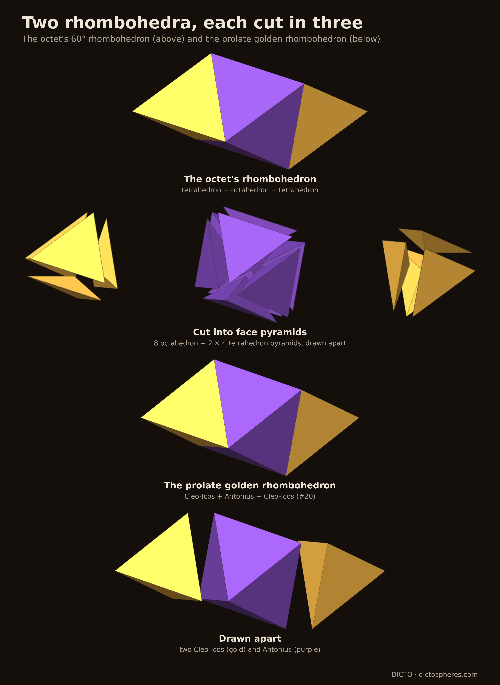
Figure 3.2. Above: one octet cell, the 60° rhombohedron of tetrahedron + octahedron + tetrahedron, whole (gold, purple, gold) and cut into face pyramids: the octahedron into its 8 pyramids (purple) and each tetrahedron into its 4 (gold), drawn slightly apart along their own axes. Below: the prolate golden rhombohedron, Cleo-Icos + Antonius + Cleo-Icos (#20), whole and drawn apart along its long axis. Each panel is scaled to fit.
Alone, only the cube's pyramid works; in pairs, only the tetrahedron's with the octahedron's.
Corollary 1 (alone and in pairs). Alone, only the cube pyramid fills space. In pairs, only the tetrahedron and octahedron pyramids do; every other pair fails, the pairs with the cube pyramid because their second piece cannot be used.
When tetrahedron and octahedron pyramids fill space together, they come in equal numbers over large regions, as long as their edges are equal.
Corollary 2 (equal numbers). In any tiling of space by tetrahedron pyramids of edge a and octahedron pyramids of edge b, the numbers NT(R) and NO(R) of each inside a ball of radius R satisfy |a NT(R) − b NO(R)| ≤ C R² for a constant C; so their numbers are in the ratio b : a in the limit, equal when the edges are equal, as in the octet.
Proof. With h(α) = 1, Lemma 1 gives a sum of 0 at all but finitely many points of each edge. Integrate along all edges inside the ball: Σ over tiles of Σ over their edges of h(angle) × (length inside the ball) = 0. A tetrahedron pyramid wholly inside contributes 3 × a × ½, an octahedron pyramid 3 × b × (−½); the tiles that meet the sphere are at most C′R² in number (bounded size, volume bounded below) and contribute a bounded amount each. ∎
The icosahedron's pyramid, the Cleo-Icos, can fill space only with a different kind of partner: DICTO's Antonius, two Cleo-Icos to one Antonius.
Corollary 3 (the Cleo-Icos needs Antonius). The Cleo-Icos fills space with no set of face pyramids; a partner must be another kind of solid. Antonius is one [3, §5.7]: the three lines from the icosahedron's centre to the corners of a face meet at arccos(1/√5) ≈ 63.43°, the angle of the golden rhombus, so they span a prolate golden rhombohedron, and the planes x + y + z = 1 and 2 (in coordinates along those lines) cut it into a Cleo-Icos at each sharp corner and Antonius in the middle, a trigonal antiprism of exactly 4 times the Cleo-Icos's volume (the rhombohedron is 6 times). Golden rhombohedra tile space by a lattice, so Cleo-Icos and Antonius fill space, two to one (Figure 3.2, below). In the counting map's terms: along Antonius's 6 triangle edges the angle is π − θI/2 ≈ 110.91°, which with the Cleo-Icos's θI/2 makes a flat 180°, and along each of its 6 zigzag side edges 108° (the rhombohedron's 72° edges are the 6 at its sharp tips, which belong to the Cleo-Icos); with h(θI) = 1 and edges weighted by length, a Cleo-Icos carries 3 × ½ and Antonius 6 × (−½), −2 times as much, which the two-to-one ratio balances (the Dehn invariant remark of [3]). The same cut of the 60° rhombohedron gives the octet's tetrahedron + octahedron + tetrahedron [3]: in both, the middle third is the partner. (Checked exactly in pyramid_checks.py.)
3.2 The whole solids, and Aristotle
The face pyramids are the pieces; the table of #44 §5 shows how the whole solids fill space with partners, each with its source. The dodecahedron's partner, the Dogstar, is Chapter 7; the icosahedron's octahedral shell of Admiral Caps returns in Chapters 8 and 9.
The sections below are from #44, Aristotle's Pyramid (DICTO DOI: 10.5281/zenodo.23529497), word for word; figures are renumbered through the chapter, and numbers in square brackets refer to the references of #44 (Appendix).
The whole solids can all fill space as well, each with the right partners; the table gathers how.
How the whole Platonic solids fill space is answered for all five by DICTO's earlier exact work:
Solid
Fills space with
Source
cube
alone
classical
tetrahedron, octahedron
each other, two tetrahedra to one octahedron: the tetrahedral–octahedral honeycomb (Maurolico; Fuller's octet truss)
classical; Maurolico (1529) [1]
dodecahedron
Dogstars: dodecahedra on alternate cubes of a cubic lattice, each a cube with six of Euclid's roofs [5]; the hole in each other cube is the Dogstar; the dodecahedra take (5 + √5)/8 ≈ 90.45% of space
tiling and Dogstar: Hart (1996) [6]; exact: The DICTO Sunstar, #42 [7]
icosahedron
DICTO's icosahedral octet: an icosahedron + 6 edge roofs (Admiral Caps) is the regular octahedron, so icosahedra (edge 1) with their roofs in the octet's octahedra, and icosahedra of edge 1/2 with corner and edge caps in its tetrahedra, fill space; the icosahedra take (175 − 75√5)/12 ≈ 60.79%
exact (released finding F21; not a separate paper) [8]; the icosahedron in the octahedron at the golden section is classical (Pacioli; Fuller's Jitterbug)
Table 2. How each whole Platonic solid fills space with partners. The idea of F21 is DICTO's: "the same principle as the dodecahedron and roofs, but with six" [8].
The pattern is the same for both golden solids. Euclid builds the dodecahedron on a cube with a roof on each face [5]; the roofs are what let dodecahedra sit on a cubic lattice, and what is left is the Dogstar. DICTO moved the roofs to the icosahedron: six edge roofs make it an octahedron, which the octet already places. The main theorem says why such help is needed: a solid's face pyramids carry half its dihedral angle along each base edge, and only for the cube (π/2) is that angle a rational multiple of π; the tetrahedron's and the octahedron's cancel each other (α and π − α), while θD and θI cancel with nothing among the five.
What Aristotle wrote, how it was argued over for two thousand years, and where the face-pyramid reading fits.
"Among surfaces it is agreed that there are three figures which fill the place that contain them—the triangle, the square and the hexagon: among solids only two, the pyramid and the cube" (Aristotle, On the Heavens III.8, 306b, in Guthrie's translation as quoted by Lagarias and Zong [1]). Read as the regular tetrahedron, the claim is wrong: five tetrahedra round an edge leave 7.36° [1]. Lagarias and Zong trace the long correction [1]: Simplicius and Averroës held that twelve regular tetrahedra fill space round a point; others said twenty; Thomas Bradwardine observed that the icosahedron cuts from its centre into twenty congruent tetrahedra but could not decide whether they are regular (they are not: Lagarias and Zong note that their solid angle at the centre is about ten percent larger than a regular tetrahedron's); Paul of Middelburg asserted that no number of regular tetrahedra fills space round a point, arguing from Euclid's Book XIII; and Maurolico (1529) stated that cubes alone, and tetrahedra together with octahedra, fill space. Twenty regular tetrahedra can meet at a point with small gaps [1]: the near miss behind the commentators' twenty.
We do not claim to know what Aristotle meant; Lagarias and Zong take "pyramid" to be the regular tetrahedron [1], the usual reading. It may have been Bradwardine's tetrahedron, the Cleo-Icos. Read as a face pyramid, the answer is exact: Aristotle's two figures come out right only as the cube's own pyramid (trivially, since six make the cube) and as the tetrahedron's pyramid taken together with the octahedron's, Maurolico's correction [1] cut from the centres; the Cleo-Icos needs Antonius.
3.3 Face to face
The sections below are from #77, Face to Face: A New Law of Aristotle's Pyramids (DICTO DOI: 10.5281/zenodo.23779962), word for word; figures are renumbered through the chapter, and numbers in square brackets refer to the references of #77 (Appendix).
#77 §3. Main theorem: face to face, every pyramid stays in its solid
Two different pyramids never share a side face, so round any side edge all the pieces are of one kind, and they close up into their whole solid. What is left is a question about whole solids, and the angles answer it.
Theorem 1. Let space be tiled face to face by copies of the five face pyramids, mirror images allowed. Then (a) the pyramids with a common apex form one whole Platonic solid, so the tiling is a face-to-face tiling by whole Platonic solids, each cut from its centre; (b) that tiling is either the cubic tiling, or a tiling by regular tetrahedra and octahedra in which every edge has two tetrahedra and two octahedra round it; (c) D and I occur in no such tiling, and two different pyramids meet only base to base: T with O in the tilings of (b), I with T or O only in finite clusters (bipyramids, Figure 3.3).
Proof.Faces. The side faces of different pyramids are never congruent: the cosines of their apex angles (Table 1) all differ, and no side face is equilateral. In each side face the apex is the corner between the two equal sides, so a congruence between side faces of one pyramid kind carries apex to apex and base edge to base edge. The square occurs only on C and the pentagon only on D; the equilateral bases of T, O and I match one another.
(a) Side edges. In a face-to-face tiling the tiles round an edge follow one another, each sharing a whole face with the next. Round a side edge of a pyramid P, the next tile shares a side face of P, so it is a pyramid of the same kind with the same apex, and the edge is again a side edge of it; going round, every tile at the edge is of P's kind with the same apex. The side-edge dihedral angles 120°, 120°, 90°, 120° and 72° divide 360° into 3, 3, 4, 3 and 5 parts: exactly the number of faces round a corner of the solid. So the pyramids at one apex, joined across their side faces, close up round every side edge, and together they are the whole solid. The tiling by pyramids is a tiling by whole solids, meeting face to face, since their faces are the pyramids' bases.
(b) Edges of the whole solids. A cube's square meets only another cube, so a tiling with a cube has only cubes (space is connected, and the tile next to a cube across any face is a cube); a face-to-face tiling by cubes is the cubic tiling. Likewise a dodecahedron meets only dodecahedra, and round an edge of a tiling by dodecahedra n θD = 2π, which is impossible because θD is not a rational multiple of π (#44, Lemma 2). In a tiling by tetrahedra, octahedra and icosahedra, the angles round an edge give nT α + nO (π − α) + nI θI = 2π. Since π, α and θI are linearly independent over the rationals (#44, Lemma 2, from the Splitting Theorem of Conway, Radin and Sadun), nI = 0, nT = nO, and then nO π = 2π: two tetrahedra and two octahedra round every edge.
(c) follows from (a), (b) and the face facts: the only face two different pyramids share is an equilateral base, so different pyramids meet base to base; in a tiling only T and O occur, and I meets T or O only in clusters that are not part of any tiling. ∎
Figure 3.3. The three ways two different face pyramids meet face to face, all base to base: the tetrahedron's pyramid on the octahedron's (the octet's shared face), and the Cleo-Icos on either of them (finite clusters only).
The octet truss, Maurolico's tiling of tetrahedra and octahedra (Lagarias and Zong 2012), has two of each round every edge, so it and its tetrahedra and octahedra cut from their centres realise (b); so do the stackings of its layers, which keep the same edge condition. Theorem 1 does not depend on which other tetrahedron–octahedron tilings exist, and we do not classify them here.
Corollary 1. The Cleo-Icos lies in no face-to-face tiling by face pyramids. A network on the Cleo-Icos needs a partner that is not a face pyramid: Antonius, with which two Cleo-Icos fill the prolate golden rhombohedron (#20), or the connectors of #47, with which all five Platonic solids fill space together.
Comparison with the angle count alone. Before using the faces, the angles round an edge already leave 26 edge stars (combinations of side-edge and base-edge dihedral angles making 2π), 20 of them mixing pyramid kinds; for example two cube pyramids on their bases with one tetrahedron and one octahedron pyramid on theirs and two octahedron pyramids on their sides. The face facts above remove all 20 at once except the octet's: four tetrahedron and four octahedron pyramids, on their bases, round one edge. The list is in the study data (q1-pyramids.json).
If the pyramids will not make new networks, perhaps DICTO's own pieces, glued together, make new solids with only triangles on the outside.
Chapter 3 of Alicia in Wonderland glued seventeen pieces with at least one equilateral face, whole face to whole congruent face, in every way: all of them to four pieces, DICTO's pieces alone to five. It found 772 solids with equilateral faces, every one a regular solid cut up again or a face-gluing of regular tetrahedra, octahedra and icosahedra; none was new. Here the second search is carried to six pieces.
Pieces. 21 entries: the three face pyramids with an equilateral base (T, O and the Cleo-Icos); Antonius; the Admiral Cap; the six Mosseri–Sadoc tiles t1–t6, among them the Hound Tooth (t2), the Tricap (t3), CLEO (t4) and AXE (t6), each also at its second scale (factor φ or 1/φ) so that tiles meet on their (1, 1, φ) and (1, φ, φ) faces; and the Weirdstone and the Tadpole with their mirror images. The regular solids themselves and the half octahedron are left out.
Method. A piece is glued whole face to whole congruent face, mirror images allowed; clusters whose interiors meet are dropped (intersection volume, manifold3d); the same cluster reached twice is kept once (a labelled distance signature). A cluster is a result when its surface, merged into planar faces, is a closed surface of equilateral triangles of one size enclosing the pieces' total volume. The search is complete to two pieces; from the third piece on, each new piece covers a face of the cluster that is not equilateral, since such a face must be covered before the cluster can be a deltahedron, and a cluster with only equilateral faces left is tested but not grown. It ran in 4,165 seconds with 12 processes.
Pieces
2
3
4
5
6
Different clusters
191
1,834
25,683
363,319
5,143,972
Solids with equilateral faces (new at that size)
0
0
1
0
2
Table 2. The six-piece search. The counts to five pieces repeat those of Chapter 3 exactly; the six-piece level is new.
Theorem 2 (search). Within the search of Table 2, DICTO's pieces make exactly two solids with equilateral faces: the regular tetrahedron, from four tetrahedron pyramids, and the pentagonal bipyramid J13, from four t1 and two Hound Tooth (t2), found at both scales of the tiles (edge 1 and edge 1/φ). The J13 is two pentagonal pyramids t1 + t2 + t1 put base to base.
Checks. The J13 found has 7 corners, 15 edges and 10 faces; its five equator corners lie in one plane (error 0) at distance 1/(2 sin 36°) from the axis, its apexes at height √((5 − √5)/10) above and below, every edge has length 1 to 2 × 10−16, and its volume is 0.603006, which is (5 + √5)/12, the volume of J13 with edge 1. Each of the six pieces lies on one side of the equator plane: one t1, the t2 and the other t1 above, their mirror images below. The Mosseri–Sadoc tiles have exact corners in ℚ(√5), so the identification is exact; the search itself, its overlap test and the sorting into distinct clusters are in floating point and are a screening.
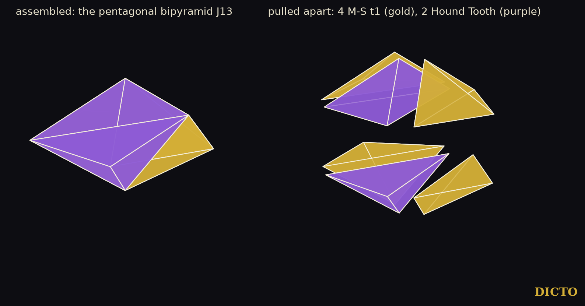
Figure 3.4. The pentagonal bipyramid J13 from six of DICTO's pieces: four Mosseri–Sadoc tiles t1 (gold) and two Hound Tooth t2 (purple). Left, assembled; right, pulled apart into its two pentagonal pyramids t1 + t2 + t1.
Koca, Koc, Koca and Al-Siyabi (2020, p. 6) build the pentagonal pyramid as t1 + t2 + t1, as the projection of a 5-simplex, and use it to build the icosahedron from the tiles. Two of their pyramids on a common pentagon make the J13, so the six-piece result is a direct consequence of their dissection. No solid of the search uses Antonius, the Admiral Cap, the Tricap, CLEO, AXE, t5, the Weirdstone, the Tadpole, the octahedron's pyramid or the Cleo-Icos.
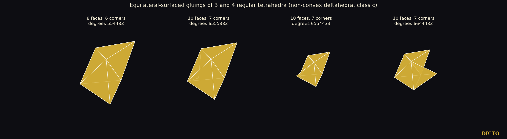
Figure 3.5. From Chapter 3, for comparison: the smallest solids of the first search that are not regular, face-gluings of three and of four regular tetrahedra. Gluing regular solids makes infinitely many such deltahedra, all known in kind.
3.4 In layers
The sections below are from #92, Aristotle's Pyramid in Layers (DICTO DOI: 10.5281/zenodo.23931608), word for word; figures are renumbered through the chapter, and numbers in square brackets refer to the references of #92 (Appendix).
The two pyramids. With base edge 1, the T pyramid has lateral edges √6/4 ≈ 0.612 and the O pyramid √2/2 ≈ 0.707. Their faces are of three shapes, no two congruent: the equilateral base (1, 1, 1), the T lateral face (1, 0.612, 0.612) and the O lateral face (1, 0.707, 0.707), which has a right angle at the apex. With α = arccos(1/3) ≈ 70.53° the tetrahedron's dihedral angle and π − α the octahedron's, the dihedral angles are (#44, Table 1):
Pyramid
Base edges (length 1)
Lateral edges
Volume
T (tetrahedron's)
3, dihedral α/2 ≈ 35.26°
3 of length √6/4, dihedral 120°
√2/48
O (octahedron's)
3, dihedral (π − α)/2 ≈ 54.74°
3 of length √2/2, dihedral 90°
√2/24
Tilings. A tiling by T and O is a covering of space by congruent copies of T and O (mirror images allowed; both pyramids are mirror-symmetric, so this changes nothing) with disjoint interiors, finitely many meeting any bounded set. It is face to face if any two tiles meet in a common face of both (a whole facet, a whole edge, a common corner) or not at all [20]. A Barlow stacking is a sequence (sk), k ∈ ℤ, of letters A, B, C with sk+1 ≠ sk: the planes z = k√6/3 carry triangular lattices of edge 1 in the three positions A, B, C over one another, as in close-packed spheres of diameter 1 [1, 16]. A layer k is straight (c) if sk−1 ≠ sk+1 and twisted (h) if sk−1 = sk+1: the c/h words (Jagodzinski's notation [18]; Verma and Krishna [19]) of #40, which builds the octet layers on every such word, and of #57 [8, 9]. The octet is ABCABC…, every layer straight (fcc); ABAB… has every layer twisted (hcp).
If pieces meet whole face to whole face, the two pyramids can only rebuild the octet's solids, and the solids can only lie in layers; the one freedom left is how each layer sits on the next.
Starting point (#77, Theorem 1). In every face-to-face tiling by T and O pyramids of base edge 1, every T pyramid lies with three others in a regular tetrahedron of edge 1 whose centre is their common apex, and every O pyramid with seven others in a regular octahedron; these solids form a face-to-face tiling by regular tetrahedra and octahedra, with two of each round every edge [10]. Conversely, every face-to-face tiling by these solids, cut from the centres, is a face-to-face tiling by T and O (§2; §2 and Lemma 3 give a self-contained proof of #77's Theorem for T and O).
Main theorem. (a) The face-to-face tilings by regular tetrahedra and octahedra of edge 1 are exactly the following: for a Barlow stacking (sk), between the planes z = k√6/3 and z = (k+1)√6/3 lies the octet layer joining the two triangular lattices: a tetrahedron on each triangle of one plane that has a point of the other plane over its centre, and an octahedron between every remaining pair of opposite triangles.
(b) Hence the face-to-face tilings by T and O correspond one to one with the Barlow stackings, and up to congruence with the sequences of straight and twisted layers up to shift and reversal. There are uncountably many, countably many of them periodic. The octet is the only one that is layered in more than one direction (in four); every other has exactly one layer direction. In each, every corner has 8 tetrahedra and 6 octahedra round it, and the numbers of T and O pyramids are equal: 8 of each per corner.
(c) Without the face-to-face rule, every tiling of space by cubes of edge 1/√2, each cut into 4 T and 4 O pyramids in either of its two ways, and every gluing of two half-space tilings by T and O along a plane of faces, is a tiling by T and O, so no finite list of parameters describes these tilings (Proposition 8, Corollary 9); in every tiling the wedges round all but finitely many points of each edge are one of the six combinations of Table 2 that occur, every lateral edge of a T pyramid is shared, end to end, by exactly three T pyramids, and every T pyramid lies in a whole regular tetrahedron (Propositions 6 and 7, Theorem 12, Corollary 13).
Figure 3.6. Three layers of the tiling, drawn apart upwards. Left: ABCA, every layer straight; this is the octet, in which tetrahedra and octahedra alternate across every face. Right: ABAB, every layer twisted; across each layer plane a tetrahedron meets a tetrahedron and an octahedron meets an octahedron, mirror images in that plane. Any sequence of the two choices is a tiling (Main theorem (a)).
With the face-to-face rule the answer is complete; without it, we prove the local rules and show the family is too large for a list, but some local questions remain.
Settled. Face to face, the tilings by T and O are classified (Main theorem): this answers the question left open in #77 (which tetrahedron–octahedron tilings exist beyond the octet and its stackings) and, for face-to-face tilings, in #44, §4. For all tilings: every T lateral edge is shared end to end by exactly three T pyramids (Proposition 7); the T pyramids always fall into whole regular tetrahedra (Theorem 12; open point 1 of Version 2); exactly six edge configurations occur (Corollary 13; open point 2 of Version 2); and no finite list of parameters describes the family (Corollary 9). The cuboctahedron's pyramids: Theorem 10 and Proposition 11.
Conjectured. Conjecture 14: every O pyramid lies in a whole octahedron or is a corner of a cube (evidence in §6).
Open, not conjectured. (1) A structure theorem for the tilings that are not face to face, for example whether each is made of face-to-face pieces of the stacking kind and the cube kind joined along planes of faces. (4) Tilings by T and O of different sizes, which #44 allows: an octet layer plane of edge 2 is a union of triangles of edge 1, so octets of the two sizes can be glued along it; we have not studied these. (3) Whether the cuboctahedron's centres of Proposition 11 exist on every Barlow stacking, beyond the periodic ones tested.
Claimed, known, open. Known and used: Aristotle's statement and its history (Lagarias and Zong 2012); Maurolico's octet; the Splitting Theorem of Conway, Radin and Sadun; Dehn's invariant; the Barlow stackings; Koca, Koc, Koca and Al-Siyabi's pentagonal pyramid t1 + t2 + t1. Claimed in the papers: the Main theorem and Corollaries of #44; Theorems 1 and 2 of #77; the Main theorem of #92 and its results on tilings that are not face to face. Open: Conjecture 14 of #92 (every O pyramid lies in a whole octahedron or is a corner of a cube); a structure theorem for the tilings that are not face to face; tilings by T and O pyramids of different sizes (#92 §7).
Chapter 4. The Vacuus
From #87 DICTO Vacuus Solids (§§2, 3, 8; Figure 1 and Plates 1–5) and #107 The Vacuus of the Queens (§§1, 2); the table of §4.3 and Dogstar's discs from study 2026-11-11-orbit-polytopes.
Also told in Book Seven, The Permutohedron Paradigm, Chapter 7: the Mirror Law of #107 has its home there; this chapter applies it to the five.
Build a cube from six square pyramids with their tips at the centre, then take away the six squares. What is left is a star of twelve thin triangles, one on every edge, meeting at the centre: the walls between the pyramids. DICTO named the solids that keep only these walls the DICTO Vacuus Solids, after the vacuus bodies Leonardo drew for Pacioli, which are edge frames without a centre. Each wall is the fin of its edge, the triangle from the centre to the edge; a strut runs from the centre to each corner. He built the octahedron's Vacuus first, from four slotted pieces of cardboard: three squares through one centre.
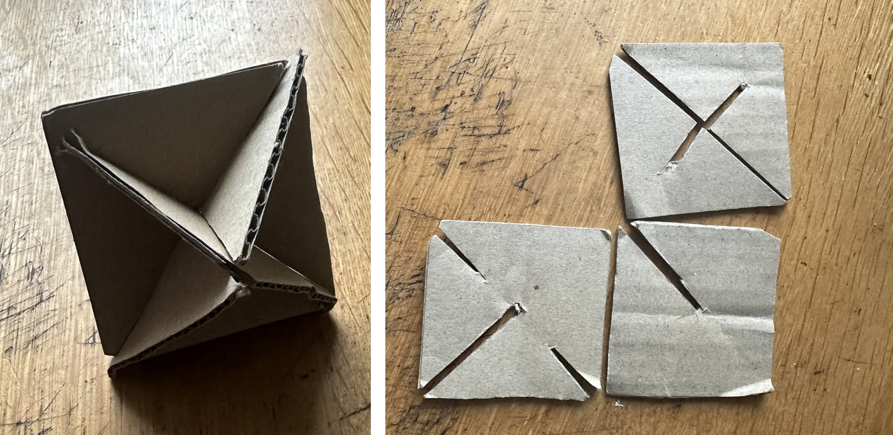
Figure 4.1. DICTO's cardboard octahedron Vacuus, built before #87 (photos: DICTO). Left, assembled: three squares through one centre, the whole Vacuus of the octahedron. Right, its four pieces laid out as three squares: one square with one slot, one with three slots, and the third square cut in two along a diagonal, each half with one slot (#87, Figure 1).
Two questions are asked of each Vacuus. What are its angles? The polar law answers: the apex angle of a fin is π minus the dihedral angle of the polar solid at the dual edge, so the five Vacuus are fixed by the five dihedral angles, in dual pairs (#87). And which fins lie flat together on one plane through the centre, closing into a central disc? The Mirror Law answers for every solid built from a reflection group: the edges lie on mirrors exactly when the group's unringed nodes hold a root orthogonal to them (#107). For the five, every edge lies on a mirror, but only the octahedron gathers more than two edges on one: its three squares. On the hidden side of DICTO's own solids the same question finds discs again (the Angeli of Chapter 13).
What this chapter shows. (1) The polar law: for a convex solid P and its polar P* about the same centre, the fin of an edge of P* has apex angle π minus the dihedral angle of P at the dual edge; the wedges are π minus the face angles; the fins of an edge and of its dual edge lie in perpendicular planes (Theorem of #87). (2) Turned out over their faces, the centre pyramids double the volume, and each edge's dihedral angle doubles (Proposition 2 of #87). (3) The Mirror Law (Theorem 1 of #107). (4) The five Vacuus side by side: the octahedron has three central discs of four fins, the other four none (§4.3). (5) Hart's Dogstar, the dodecahedron's partner in space (Chapter 7), has 114 of its 138 edges, 19/23, on the fifteen mirror planes of the icosahedral group, yet no central disc in the sense of #87: on each plane its fins form two open fans (§4.4, exact). (6) DICTO's solids ranked under both disc rules: under #87 only 5 of 34 have a central disc (§4.5, a float census).
4.1 Fins, struts and the polar law
The sections below are from #87, DICTO Vacuus Solids (DICTO DOI: 10.5281/zenodo.23896016), word for word; figures are renumbered through the chapter, and numbers in square brackets refer to the references of #87 (Appendix).
Let P be a solid bounded by a closed polyhedral surface, and O a point. Throughout, O is the corner centroid, the mean of the corners. The centre pyramid of a face f is the pyramid with base f and apex O.
Proposition 1 (when the Vacuus exists). If O lies strictly on the inner side of every face plane of P, the centre pyramids fill P without overlap. If O lies on or beyond some face plane, they do not.
Proof. A ray from O crosses a face from inside to outside exactly when O lies on the inner side of the face's plane. The surface winds once round O, so for a ray in general position the outward crossings outnumber the inward ones by one. If O is inside every face plane, every crossing is outward, so every ray meets the surface exactly once: P is star-shaped from O and each point of P lies in exactly one centre pyramid (apart from their common boundaries). If O lies beyond a face plane, rays through that face cross it inward, so each also crosses the surface at least twice outward and lies in at least two pyramids; if O lies in a face plane, that pyramid is flat. ∎
When Proposition 1 holds, two neighbouring centre pyramids, those of the faces at an edge AB, meet in the triangle O–A–B. We call it the fin of the edge, its angle at O the fin's apex angle, and the segment from O to a corner a strut. Two fins that share a strut and belong to the same pyramid make a dihedral angle along it, the wedge. The wedges round one strut add up to 2π, and those of one pyramid add up to (n − 2)π plus the pyramid's solid angle at O, for a face with n sides.
Definition (DICTO Vacuus). The DICTO Vacuus of P is the union of its fins, one per edge. It is built in two forms: SHEETS, the fins as thin plates; and STRUTS, one rod from O to every corner, with the solid's edges (the fins' outer sides) as an option. The DICTO Vacuus Solids are the solids taken in these forms.
Two fins that share a strut and lie in one plane join into one flat sheet. A flat sheet that closes all the way round O is a central disc, a flat central polygon of the solid. The Vacuus is the part inside P of the cones from O over the edges, that is, of the two-dimensional cones of the solid's face fan (Section 7).
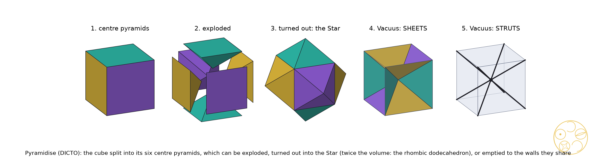
Figure 4.2. Pyramidise (DICTO) on the cube: (1) its six centre pyramids; (2) exploded; (3) turned out, the Star, here the rhombic dodecahedron of twice the volume (Section 8); (4) the Vacuus as SHEETS, one fin per edge; (5) the Vacuus as STRUTS, one rod from the centre to every corner.
The polar law below pairs each solid with its dual: the cube (Figure 3 of #87) and the octahedron (Figure 5 of #87) show it at a glance, the cube's dihedral angle of 90° returning as the octahedron's fin apex of 90°.
Let P be convex with O in its interior, and let P* = {y : x · y ≤ 1 for all x in P} be its polar about O. A face f of P with outward unit normal nf and distance hf from O has the pole f* = nf/hf, a corner of P*. An edge e of P between the faces f and g corresponds to the edge e* = f*g* of P*, and a corner v of P to the face v* of P*, whose corners are the poles of the faces of P at v [2]. We take the Vacuus of P* about the same point O; it is in general not the corner centroid of P*, though for the classical pairs it is.
Theorem (polar law). Let δ(e) be the dihedral angle of P at the edge e, and φf(v) the face angle of the face f at the corner v. Then:
(a) Fins. The apex angle of the fin of e* in the Vacuus of P* is π − δ(e).
(b) Wedges. In the pyramid of P* over v*, the wedge along the strut O–f* is π − φf(v).
(c) Crossing fins. The fin of e and the fin of e* lie in perpendicular planes, which meet in the line through O and the foot of the perpendicular from O to the line of e.
Since P** = P, the same holds with P and P* exchanged: the apex angles of P's fins are π minus the dihedral angles of P*, and P's wedges are π minus the face angles of P*.
Proof. The cone from O over the face v* of P* is spanned by the poles f* of the faces f at v, so by their normals nf: it is the normal cone Nv of P at v. This is the classical statement that the face fan of P* is the normal fan of P [2]. In particular the fin of e* spans the angle between nf and ng, and the pyramid of P* over v* is Nv cut off by the plane of v*.
Cut both Nv and the tangent cone Tv of P at v (the cone of directions from v into P) with the unit sphere about their apex. Tv gives a convex spherical polygon whose sides are the face angles φf(v) and whose angles are the dihedral angles δ(e) of the edges at v. Nv is the polar cone of Tv (the vectors making an angle of at least π/2 with every direction of Tv), so it gives the polar spherical polygon, whose vertices are the nf. By the classical theorem on polar spherical polygons [3], the sides of the polar polygon are π minus the angles of the original, and its angles are π minus the original's sides. A side of the polar polygon is the angle between nf and ng, the apex angle of the fin of e*: this is (a). The angle of the polar polygon at nf is the dihedral angle between the planes O f* g* and O f* h* along O f*, where g and h are the faces next to f at v: it is the wedge of (b), and it equals π − φf(v).
(c) The normals nf and ng are both perpendicular to e, so the plane of the fin of e* is the plane through O perpendicular to e. The fin of e contains the line of e, and a plane containing a line perpendicular to another plane is perpendicular to it. The two planes meet in the line of the fin of e that is perpendicular to e, which runs from O to the foot of the perpendicular from O to e. ∎
Part (c) uses no convexity, and (a) holds whenever the poles are defined (O strictly inside every face plane), for the triangle O f* g*, with |π − δ(e)| at a reflex edge, since that is the angle between the two normals; (b) needs the corner to be convex, since the tangent cone must be.
Check. Over the 92 convex solids of the census (Section 4), with P* computed about O, the largest deviations were 4.4 × 10−16 rad for (a), 3.5 × 10−10 rad for (b) and 2.0 × 10−10 for the cosine of the angle in (c). For the seven non-convex solids whose Vacuus is defined, (a) and (c) hold to 4.4 × 10−16, and (b) fails, as it must at non-convex corners.
Examples. The cube's dihedral angle of 90° is the octahedron's fin apex of 90°, and the octahedron's wedges of 90° are π minus the cube's face angles of 90°; the cube's own wedges, 120°, are π minus the octahedron's face angles of 60°. The dodecahedron's dihedral angle of 116.57° gives the icosahedron's fin apex of 63.43° (arctan 2). The rhombic triacontahedron's dihedral angle of 144° gives the icosidodecahedron's fin apex of 36°, the fin of Lion's central decagons (Section 5). A solid and its polar share no fin shapes in general; what they share is these supplementary angles and the crossed fins of (c). In the origami of Section 6 the wedges are the fold angles of the nets, so (b) also says how the nets of a solid and of its polar fold.
4.2 The five, plate by plate
The plates of #87 for the five, in D·I·C·T·O order. Each shows the Vacuus twice inside a ghost of the solid: left, SHEETS, the fins; right, STRUTS, rods from the centre to every corner with the edges in grey. The polar law can be read across them: the dodecahedron's fins (41.81°) are π minus the icosahedron's dihedral angle (138.19°), and the icosahedron's (63.43°) π minus the dodecahedron's (116.57°); the cube's fins (70.53°) are π minus the octahedron's dihedral angle (109.47°), and the octahedron's (90°) π minus the cube's; the tetrahedron, its own polar, has fins of 109.47°, π minus its own dihedral angle of 70.53°.
The pairing behind these numbers is the classical duality of the five, faces for corners: Kepler called the two pairs marriages (Harmonices Mundi, 1619). It is the duality the polar law reads.
solid
faces
edges
corners
its dual
fin apex = π − dihedral angle of the dual
D dodecahedron
12
30
20
I icosahedron
41.81° = 180° − 138.19°
I icosahedron
20
30
12
D dodecahedron
63.43° = 180° − 116.57°
C cube
6
12
8
O octahedron
70.53° = 180° − 109.47°
T tetrahedron
4
6
4
T itself
109.47° = 180° − 70.53°
O octahedron
8
12
6
C cube
90° = 180° − 90°
Classical: the dual exchanges faces and corners and keeps the number of edges. The tetrahedron is its own dual, the one fixed point of the exchange among the five.
Figure 4.3. Dodecahedron: 30 fins, 20 struts. Left, SHEETS: 30 × apex 41.81°. Right, STRUTS: 20 struts of one length; grey: the 30 edges of the solid in one length (#87, Plate 1).
Figure 4.7. Octahedron: 12 fins, 6 struts. SHEETS: 12 × apex 90.00° (= π/2), a right angle at the centre. Central discs: 3 flat discs of 4 fins (#87, Plate 5).
4.3 Discs: which fins lie flat together
A disc is a plane through the centre carrying at least three edges, so that their fins lie flat together; a complete disc closes all the way round the centre. The census of study 2026-11-11-orbit-polytopes (vacuus_census.json, controls matching #87) gives for the five:
The planes in the fourth column are the mirror planes of each solid's symmetry: the fifteen of the icosahedral group for the dodecahedron and the icosahedron, the six diagonal planes of the cube, the six of the tetrahedron, and for the octahedron the three coordinate planes. So every edge of every Platonic solid lies on a mirror, as the Mirror Law says for every regular polytope (Corollary 2 of #107 in four dimensions; the same argument in three), and the law reads off how many: the octahedron's mirrors through its corners each carry a whole square of four edges, while the other four solids have one or two edges on each mirror and no disc. Among the solids round the five, the cuboctahedron (four hexagonal discs of six edges) and the icosidodecahedron (six decagonal discs of ten) have complete discs too, but these are not mirrors of their groups: a Vacuus need not be made of mirrors (study 2026-11-11-orbit-polytopes, observation 1).
The sections below are from #107, The Vacuus of the Queens (DICTO DOI: 10.5281/zenodo.24126800), word for word; figures are renumbered through the chapter, and numbers in square brackets refer to the references of #107 (Appendix).
A finite reflection group in n dimensions is generated by reflections in n mirrors whose unit normals α1, …, αn are its simple roots; the mirrors of the group are the hyperplanes orthogonal to its roots, and every root is a combination of simple roots whose coefficients are all ≥ 0 or all ≤ 0 (Humphreys 1990, §1.3). Its Coxeter diagram joins nodes i, j whose mirrors meet at angle π/m, m ≥ 3, by a bond labelled m. The groups here have diagrams that are chains: B3 4–3 (the cube), H3 5–3 (the icosahedron), A4 3–3–3 (the 5-cell), B4 4–3–3 (the tesseract), F4 3–4–3 (the 24-cell) and H4 5–3–3 (the Queens).
Wythoff's construction places a seed point x with labels λi = αi · x ≥ 0 and takes the hull of its images. The nodes with λi > 0 are the ringed nodes. Its faces are the images of the faces FJ = hull(WJx), where WJ is generated by the reflections of a node set J whose every connected piece contains a ringed node (Coxeter 1973; Champagne, Kjiri, Patera and Sharp 1995). The orbit study of 11 November read these seeds back from the corners of DICTO's solids: the Queens' path is the seed sliding along the H4 chain, from the 120-cell (1, 0, 0, 0) through the truncated 120-cell (1, 1, 0, 0), the bitruncated 600-cell (0, 1, 1, 0) and the truncated 600-cell (0, 0, 1, 1) to the 600-cell (0, 0, 0, 1); the golden loop of DICTONIC is the B3 seed (0, x, 1).
Theorem 1 (the Mirror Law). Let P be the Wythoff polytope of a seed x, and J a node set of size n − 2 giving faces of P (so they have dimension n − 2: edges in three dimensions, 2-faces in four). The faces of type J lie on mirrors of the group if and only if the roots of the unringed nodes include one orthogonal to αj for every j in J.
Proof. The face FJ lies in the affine space x + span(αJ), so the hyperplane through the centre that contains it is span(x, αJ), and its other faces of type J are images of FJ, which carry mirrors to mirrors. That hyperplane is a mirror exactly when its normal is a root, that is, when some root r is orthogonal to x and to every αj, j ∈ J. Write r = Σ cl αl, all cl of one sign. Then r · x = Σ cl (αl · x) after expressing x in the basis dual to the simple roots, which is Σ λl cl; with λl > 0 on the ringed nodes and every cl of one sign, this vanishes exactly when cl = 0 on every ringed node, so that r is a root of the unringed nodes. ∎
The law was checked against direct measurement, the normal of span(x, αJ) compared with every root, for every seed of zeros and ones and every face type in A3, B3, H3, A4, B4, F4 and H4: 228 cases, no disagreement (mirror_law.py).
Corollary 2 (the Queens). Every face of a regular polytope lies on a mirror. The 1200 triangles of the 600-cell and the 720 pentagons of the 120-cell lie on the same 60 central slices, the 60 mirrors of H4: 20 triangles on each, and 12 pentagons on each.
Proof. A regular polytope has one ringed node at an end of the chain, node 1 say, and one face type J = {1, 2} (in four dimensions); node 4 is unringed and α4 is orthogonal to α1 and α2. So every face lies on a mirror. Every mirror carries the same number of faces because the group moves any mirror to any other (its roots form one orbit), so 1200 / 60 = 20 and 720 / 60 = 12; that no other slice carries a face, and that both Queens use all 60 mirrors, was checked by computing the central hyperplane of every face (mirror_check.py). ∎
Corollary 3 (the middles). For a four-node chain 1–2–3–4 and the seed (0, 1, 1, 0), the faces of the two end bonds lie on mirrors and the faces of the middle bond (2m-gons, m its label) lie on none. In B4 and H4 these are exactly the faces between cells of different kinds.
Proof. The face types are {1, 2}, {2, 3} and {3, 4}; the unringed nodes 1 and 4 are not joined, so their only roots are ±α1 and ±α4. α4 is orthogonal to α1 and α2, and α1 to α3 and α4, so the end faces lie on mirrors (Theorem 1); neither is orthogonal to both α2 and α3, since node 1 is joined to 2 and node 4 to 3, so the middle faces lie on none. A middle face lies between a cell of type {1, 2, 3} and one of type {2, 3, 4}; they are congruent when the chain reads the same from both ends (A4 3–3–3, F4 3–4–3) and differ otherwise. ∎
Figure 4.8. One mirror of H4 cutting each Queen and their middle; each slice is drawn as a 3D solid in grey glass, its back half seen through. Left, the 600-cell (the slice has 42 corners and 80 triangles): the mirror carries 20 of the White Queen's triangles (blue). Right, the 120-cell (80 corners): 12 of the Red Queen's pentagons (red). Middle, the bitruncated 600-cell (240 corners): the same mirror carries 20 triangles and 12 pentagons, the faces between its truncated tetrahedra and between its truncated icosahedra; none of its hexagons, where the two kinds meet.
4.4 Dogstar's fifteen planes
The Dogstar of Chapter 7, the space between dodecahedra on alternate cubes, is not convex, but every one of its face cones from the centre has positive volume, so its Vacuus is well defined (#87). Exactly in ℚ(√5) (studies 2026-11-11-orbit-polytopes and 2026-11-13-platonic-exact-checks): it has 56 corners, 84 faces and 138 edges, and volume exactly φ/2; its 138 edges lie on 27 planes through the centre, twelve carrying 8 edges each, three carrying 6 each and twelve carrying 2 each; none of its 84 faces lies on a plane through the centre. The fifteen planes with 6 or 8 edges are the fifteen mirror planes of the icosahedral group of the six neighbouring dodecahedra, the three coordinate planes (6 edges each) and twelve golden ones (8 each); only the three coordinate planes are mirrors of the Dogstar's own pyritohedral group. They carry 114 of the 138 edges, 19/23.
Whether these are discs depends on the definition. Under the census rule of 11 November, a central plane carrying three or more edges, they are fifteen discs. Under the definition of #87, a disc is a flat sheet of fins closing all the way round the centre, apex angles adding to 2π, and under that definition the Dogstar has none: on each golden plane its eight fins form two opposite open fans of four, each opening 138.19° (arccos(−√5/3)), and on each coordinate plane its six fins form two opposite fans of three, each opening 116.57° (arccos(−1/√5)); in the gaps the plane passes through faces, not along edges. So the Dogstar's Vacuus is concentrated on the fifteen icosahedral mirror planes, as thirty open fans, two to a plane. The two definitions give two different rankings of DICTO's solids, set side by side in §4.5.
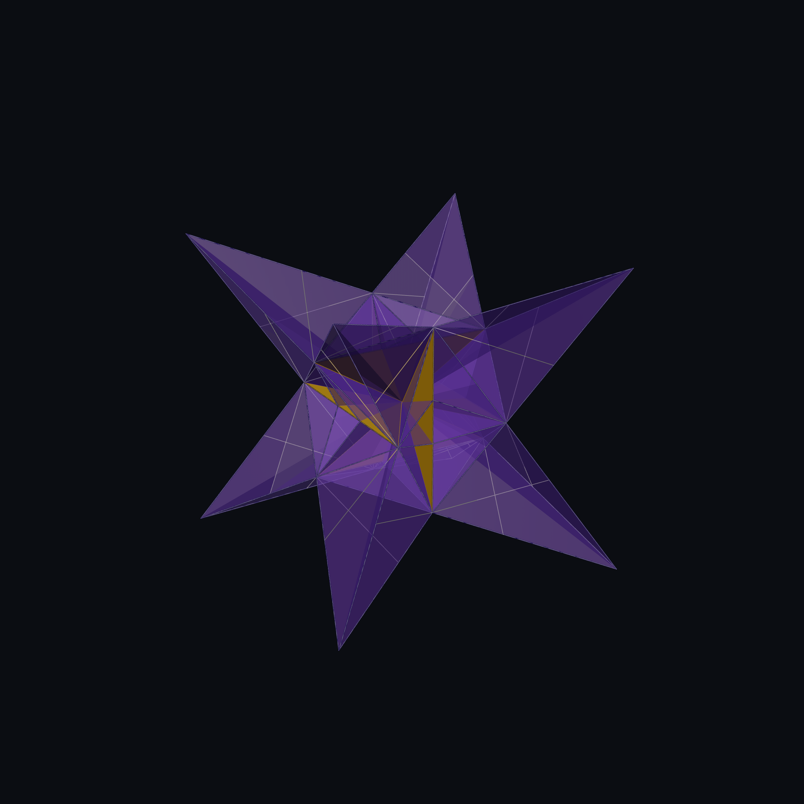
Figure 4.9. Dogstar's Vacuus: the fins on its fifteen central planes, the three coordinate planes gold and the twelve golden planes violet, inside a cut-away glass shell of the Dogstar (study 2026-11-11-orbit-polytopes, dogstar_vacuus.html).
4.5 Two rankings
The two definitions of §4.4 can be stated in a line each. Under the census rule of 11 November, a disc is any plane through the centre that carries at least three edges of the solid: their fins lie flat together on that plane, whether or not they close up. Under the rule of #87, a disc is a flat sheet of fins that closes all the way round the centre, its apex angles adding to 2π, as the octahedron's squares do. A closed sheet lies on a plane that the census rule counts too, so a solid's share under #87 is never larger than its census share (checked for every solid). Ranked by the share of their edges that lie on discs, DICTO's solids come out very differently under the two rules (study 2026-11-13-platonic-disc-ranking; the 34 solids whose id or name contains DICTO, the DICTO Jewel family, the Dogstar, the Sunstar clusters and the dodecahedron seamed for Dogstars):
census rule of 11 November (three edges on a plane)
the other 29 solids, the Dogstar and both Sunstar clusters among them: no disc, 0 %
7
DICTO Hexa
41
75.5 %
8
DICTO Hexa rhombohedral cluster
232
72.5 %
9
Lotus Jewel Axes
15
71.4 %
10
DICTO Jewel tetrahedral cluster
28
70.0 %
11
DICTO Jewel
9
50.0 %
12
DICTO Jewel octahedral cluster
28
48.2 %
13
Admiral Cap
1
33.3 %
14
DICTO skewed rhombic dodecahedron
2
33.3 %
15
Icosaxes
3
33.3 %
16
Unborn Axes
3
33.3 %
17
DICTO Hexa diamond cluster
155
31.2 %
18
DICTO skewed elongated dodecahedron (16)
2
28.6 %
19
DICTO Dodeca-13
15
27.3 %
20
DICTO Truncated-Icosahedral Hecatodihedron
12
26.7 %
21
DICTO Dodeca-13 Unit
5
20.0 %
22
Dodecaxes
3
14.3 %
23
DICTO Hexa trimmed Jewel
3
13.5 %
11 others: no disc, 0 %
Under the rule of #87 only 5 of the 34 have a central disc at all: Delilah, every edge on its three squares, then the Hexa-Key, the Jewel's tetrahedral cluster, the Hexa and the Hexa's rhombohedral cluster. The leaders of the census ranking, the Sunstar clusters and the Dogstar, have none: on their planes the fins form open fans, as on the Dogstar in §4.4. The same holds outside DICTO's solids: the rhombic dodecahedron and the rhombic triacontahedron have every edge on a central plane under the census rule and no disc under #87, again open fans. Over the whole registry of 389 solids, 8 have every edge on a #87 disc (21 under the census rule), among them the octahedron, the cuboctahedron and the icosidodecahedron, and 361 have no #87 disc (281 under the census rule).
This is a float census: the registry stores corners to about 10−8, and the #87 decisions are the same at the tolerances 10−5, 10−6 and 10−7; each sheet is decided twice, by the sum of its apex angles and by a closed cycle of corners round the centre, and the two tests agree on every sheet of every solid. The census rule reproduces the census of 11 November for all 389 solids, and the #87 disc sizes agree with #87's own census on the 40 solids the two share. Only the controls and the Dogstar are exact (study 2026-11-13-platonic-exact-checks).
4.6 Turned out: the Star
The pyramids that the Vacuus separates can also be turned out, each over its own face. For the five the result is a solid of twice the volume whose old edges have doubled dihedral angles: the cube closes into the rhombic dodecahedron, the tetrahedron keeps convex edges, and the dodecahedron, icosahedron and octahedron fold inward.
The sections below are from #87, DICTO Vacuus Solids (DICTO DOI: 10.5281/zenodo.23896016), word for word; figures are renumbered through the chapter, and numbers in square brackets refer to the references of #87 (Appendix).
The operation.Pyramidise is one operation on any solid whose centre O lies strictly inside every face plane (Proposition 1). It splits the solid into its centre pyramids, one over each face with apex O. The pyramids can then be exploded outward along their face normals, so that each one stands apart, and each can be turned out over its own base so that its apex points away from the centre, which gives the Star. Before anything moves, neighbouring pyramids share walls: the wall shared across each edge is that edge's fin, and the walls together are the Vacuus. Pyramids, exploded pyramids, Star and Vacuus are four views of one splitting; the Star and the Vacuus are mirror images of each other (Proposition 2).
The Star step. The Star is the step that turns each centre pyramid out over its own face. The turned-out pyramid over a face F has its apex at OF, the mirror image of O in the plane of F, and its walls are the mirror images in that plane of the fins on the edges of F.
Proposition 2 (the Star law). Let P satisfy Proposition 1 and let Star(P) be P together with its turned-out centre pyramids. (a) The volume of Star(P) is exactly twice that of P. (b) At an edge of P with dihedral angle δ, the dihedral angle of Star(P) is 2δ. (c) The surface of Star(P) is the Vacuus of P reflected, fin by fin, in the face planes.
Proof. (a) The centre pyramids tile P, and reflection preserves volume, so the turned-out pyramids add a second copy of V(P). (c) Reflection in the plane of F carries the centre pyramid over F to the turned-out one and each fin on an edge of F to the wall over that edge. (b) The fin at an edge e splits δ into the two angles it makes with the faces F and G; reflection carries each angle to the far side of its face, so the material angle at e becomes the two reflected angles plus δ, that is 2δ. ∎
The edge e therefore lies flat in Star(P) exactly when δ = 90°, and becomes a reflex (inward) edge when δ > 90°. For the cube, every δ is 90°: the six turned-out pyramids close into the rhombic dodecahedron, of twice the cube's volume. Of the other Platonic solids, in DICTO order, the dodecahedron (233.13°) and icosahedron (276.38°) fold inward at every old edge, the tetrahedron keeps convex edges (2δ = 141.06°), and the octahedron (218.94°) folds inward. Part (b) was checked numerically on the tetrahedron (agreement to 10−13).
Figure 4.10. Stars (Proposition 2): every centre pyramid turned out over its own face, with its apex at the mirror image of O. Top row, the Platonic solids in DICTO order (D·I·C·T·O): the dodecahedron and icosahedron fold inward at every old edge; the cube's Star closes into the rhombic dodecahedron (2δ = 180°); the tetrahedron's keeps convex edges; the octahedron's folds inward. Bottom row, DICTO solids of Figures 6–10 of #87. Spikes coloured by face class. For all ten, the computed volume of the Star is twice that of the solid (largest deviation 7 × 10−16). The same rule (t = 2) is the centre rule of the Star Cores catalogue [13].
Aristotle. In On the Heavens Aristotle wrote that among solids only the pyramid and the cube fill space. Read as a face pyramid, it gives Aristotle's Pyramid Theorem, proved in paper #44 [1]: of the five face pyramids of the Platonic solids, only the cube's alone and the tetrahedron's with the octahedron's fill space; the icosahedron's, the Cleo-Icos, needs a partner that is not a face pyramid. There the centre pyramids are studied as pieces that fill space. Here the same pieces are studied for the walls between them; the two papers are companions.
DICTO's route. The line of work began with a build. DICTO made a cube from his PET-bottle system B1NR and saw that it is six pyramids meeting at the centre (Section 1). From there he turned to the face pyramids as space-fillers in #44 [1], and to the Star, in which the pyramids are turned out. The Vacuus takes the last step: it keeps only the walls the pyramids share, built as SHEETS or STRUTS (Section 2) and folded in paper (Section 6).
Claimed, known, open. Known and used: the face fan of the polar solid is the normal fan of the solid, and polar spherical polygons have supplementary angles and sides (as cited in #87); Wythoff's construction and the root systems of the reflection groups (as cited in #107). Claimed in the papers: the polar law and the Star law (#87); the Mirror Law and its corollaries (#107; "the proof is short and may be known"). From the studies: the disc counts of §4.3 from the census data, with the identification of the planes with mirrors read from the counts and the symmetry; Dogstar's fifteen planes and open fans, exact (study 2026-11-13-platonic-exact-checks). Float census (study 2026-11-13-platonic-disc-ranking, stable over three tolerances): the two rankings of §4.5. Open: whether the open fans of the Dogstar, the rhombic dodecahedron and the rhombic triacontahedron follow one law; the Angeli, the Vacuus forms of the hidden side, are taken up in Chapter 13.
The Vacuus read each solid's angles from its dual. The round bodies of Chapter 5 find the same pairing in a width: dual pairs, dodecahedron and icosahedron, cube and octahedron, are equally wide across their face axes.
Put a ball on every corner of a Platonic solid, each just large enough to reach the farthest corner, and keep only what all the balls share. On the tetrahedron this is Reuleaux's tetrahedron, the famous body that is almost, but not quite, of constant width. On the other four it gives four round bodies that did not appear in the sources checked, and each looks like the solid's partner: balls on the cube's corners make a body that looks like an octahedron, on the dodecahedron's one that looks like an icosahedron. DICTO named them by their look: the Reuleaux octahedron, cube, icosahedron and dodecahedron.
What this chapter shows. (1) The smallest width of each body is exactly 1 at solid diameter 1 (Main theorem (i) of #45). (2) For the cube, octahedron, dodecahedron and icosahedron the width along a face axis is exactly 2√(3/4 + r²) − 2r, so dual pairs have the same face-axis width: (√30 − √3)/3 ≈ 1.248392 for the cube and octahedron, (√(50 + 2√5) − √(5 + 2√5))/√15 ≈ 1.110989 for the dodecahedron and icosahedron (Main theorem (ii), Corollary 1). (3) The four new bodies are not Reuleaux polyhedra in the strict sense (Corollary 3). (4) Open: these face axes give the largest width (Conjecture 1, with numerical evidence).
The sections below are from #45, The Reuleaux Platonic Solids (DICTO DOI: 10.5281/zenodo.23529499), word for word; figures are renumbered through the chapter, and numbers in square brackets refer to the references of #45 (Appendix).
Figure 5.1. The five bodies at solid edge 1, each with its faces coloured with the fewest colours that keep neighbours apart (gold, purple, lilac, bronze). Under each: the number of balls and their radius, which is the solid's diameter. Meshes from reuleaux_platonic.py.
For a Platonic solid S with corner set X and diameter D (its widest span), DICTO's body is B = ∩v∈X B(v, D), the common part of the closed balls of radius D centred on the corners; in the language of [1, 2] it is a ball polyhedron. For the tetrahedron D is the edge and B is the Reuleaux tetrahedron [2, 3]. For the cube, octahedron, dodecahedron and icosahedron D is twice the circumradius R: the widest spans join opposite corners. All lengths are at D = 1. The width of B in a direction u is the distance between the two planes at right angles to u that touch B.
Picture a ball on every corner of a Platonic solid, each ball just large enough to reach the farthest corner. The space all the balls share is a rounded body. On the tetrahedron this is the famous Reuleaux tetrahedron; built on all five Platonic solids the same body makes one family, and the other four did not appear in the sources we checked. The theorem says how thick that body is: never thinner than the solid itself is wide, and, measured straight through the middle of a face, exactly a number we can write down.
Main theorem. Let S be a Platonic solid of diameter 1 and B its body. (i) Every width of B is at least 1, and the width along the line through any two corners at distance 1 is exactly 1. (ii) If S is a cube, octahedron, dodecahedron or icosahedron, with circumradius ½ and inradius r, then along the axis through its centre and a face centre the width of B is exactly 2√(3/4 + r²) − 2r.
Why it is never thinner: a rounded body of the same thickness in every direction fits inside it, and nothing can be thinner than a body it holds.
(i) By Pál's theorem, as cited in [2], the corner set X (of diameter 1) lies in a body K of constant width 1. K has diameter 1 and contains X, so every point of K is within 1 of every corner: K ⊂ B, and every width of B is at least 1. Now let v, w be corners with |v − w| = 1 and u = v − w. B lies in the ball of radius 1 about w, so u·x ≤ u·w + 1 = u·v on B, and v lies in B (no two corners are more than 1 apart); so the largest value of u·x on B is u·v, and in the same way the smallest is u·w. The width is u·v − u·w = 1.
Why the face-axis thickness is exactly that number: by symmetry the outermost point lies on the axis itself, and it can reach only as far as the farthest corner's ball allows.
(ii) Let u be the unit vector to the face centre and hv = u·v the height of a corner v. The rotations of S about the axis (3-, 4- or 5-fold) map B to itself and fix u, so they map the set of points of B where u·x is largest to itself; that set is convex, and its centroid lies on the axis. So the largest value of u·x on B is reached at a point zu of the axis. Since |v|² = ¼, |zu − v|² = ¼ + z² − 2z hv, and for z > 0 this is largest where hv is smallest. The plane of the opposite face touches S, so every corner has hv ≥ −r, with equality exactly at the corners of that face. Hence zu lies in B exactly when ¼ + z² + 2zr ≤ 1, that is z ≤ √(3/4 + r²) − r. S and B are centrally symmetric, so the width is twice this. ∎
Verification. reuleaux_checks.py checks in exact arithmetic in ℚ(√5) that the diameter of each of the four is 2R, that every corner has height at least −r along a face axis with equality exactly at the opposite face, the values of (r/R)², and the closed forms below; numerically, the face-axis widths equal the largest widths found by widths.py, and the smallest width found is 1 for all five.
A solid and its partner, the cube with the octahedron, the dodecahedron with the icosahedron, give bodies exactly as thick as each other through their faces.
Corollary 1 (dual pairs). The width in (ii) depends only on r = ½ × (r/R), and dual solids have the same r/R; the exact checks find (r/R)² = 1/3 for the cube and the octahedron and (5 + 2√5)/15 for the dodecahedron and the icosahedron. So the bodies on a dual pair have exactly the same face-axis width:
cube, octahedron: r² = 1/12, 2√(3/4 + r²) = √30/3 and 2r = √3/3, so w = (√30 − √3)/3 ≈ 1.248392;
The tetrahedron gives the famous Reuleaux tetrahedron, and it follows its own rule.
Corollary 2 (the tetrahedron, the classical case). Part (ii) does not apply to the tetrahedron: its diameter is its edge, not twice its circumradius, and it is not centrally symmetric (opposite a face lies a corner, not a face), so the width along a face axis is not twice the height reached on one side. On the tetrahedron B is the classical Reuleaux tetrahedron [2, 3]. Along the axis through the midpoints of two opposite edges the argument of (ii) does work (a quarter turn followed by a reflection maps the tetrahedron to itself and reverses the axis): the opposite edges are 1/√2 apart and every corner is ½ from the axis, so the width there is 2√(3/4) − 1/√2 = √3 − √2/2 ≈ 1.024944 (checked exactly).
Despite their names, the four new bodies are not Reuleaux polyhedra in the strict mathematical sense.
Corollary 3 (not Reuleaux polyhedra). Hynd [3] and Montejano and Roldán-Pensado [2] call B(X) a Reuleaux polyhedron when X has the largest possible number of diametric pairs, 2m − 2 for m points (the Vázsonyi bound, proved by Grünbaum, Heppes and Straszewicz [3]), or, as Montejano and Roldán-Pensado define it following Sallee [2] (Sallee's paper [4] itself was not read), when the vertices of B are exactly the points of X. The tetrahedron has 6 = 2 × 4 − 2. The other four do not qualify (exact checks): their diametric pairs are only the opposite corners, 4, 3, 10 and 6, against 14, 10, 38 and 22; and each corner lies on the sphere of exactly one other ball (the opposite corner's), so it is not a vertex of B, where at least three spheres meet [2]. They are ball polyhedra, not Reuleaux polyhedra, and the smoothing of edge pairs that turns a Reuleaux polyhedron into a body of constant width [2, 3] does not apply to them as it stands.
We believe the face axis is also the thickest direction of all. The computer agrees to twelve digits, but it is not yet proved.
Conjecture 1 (the largest width). For the cube, octahedron, dodecahedron and icosahedron the largest width of B is the face-axis width of the main theorem; for the tetrahedron it is √3 − √2/2, along the edge-midpoint axis. For the tetrahedron √3 − √2/2 is the value commonly quoted as the Reuleaux tetrahedron's largest width (not in the library sources checked), so the conjecture is new only for the other four bodies.
Evidence (numerical). widths.py computes the width without a mesh, from the exact candidate points of the support function (ball caps, the circles where two spheres meet, the points where three meet), over 3000 random directions with local refinement from the six best. The largest widths found are 1.248391589161 for the balls on the cube and on the octahedron, 1.110988655456 for the balls on the dodecahedron and on the icosahedron, and 1.024944026382 for the tetrahedron: the values of the main theorem and of Corollary 2 to 12 digits. If Conjecture 1 holds, the width ranges of each dual pair, and so their spreads (largest/smallest), are equal, since the smallest width is 1 by (i).
Each body looks like the partner of the solid it came from, which is why DICTO named them by their look.
DICTO named the bodies by their look: balls on the cube's corners make the Reuleaux octahedron, on the octahedron's the Reuleaux cube, on the dodecahedron's the Reuleaux icosahedron and on the icosahedron's the Reuleaux dodecahedron. The names describe the look only: the bodies are not Reuleaux polyhedra (Corollary 3). The look is explained by the faces. The surface of B is made of one spherical face from each ball (as for Reuleaux polyhedra [3]), lying across the body from its centre. The checks sample, for every pair of balls, the circle where their spheres meet, and find (numerically) that two faces meet along an arc exactly when their centres are joined by an edge of S. So the faces of B correspond to the corners of S and meet as those corners are joined, which is how the faces of the dual solid meet: the balls on the cube's 8 corners give 8 faces meeting like the octahedron's, and so on.
Colouring the faces so that no two neighbours share a colour is therefore colouring the corners of S along its edges. The fewest colours, found by exhaustive search, are 4 for the Reuleaux tetrahedron (any two of its 4 faces meet), 2 for the Reuleaux octahedron (the cube's corners split into two sets with no edge inside either), 3 for the Reuleaux cube, 3 for the Reuleaux icosahedron and 4 for the Reuleaux dodecahedron, as in Figure 5.1: the numbers DICTO read from the look, 4, 2, 3, 3, 4. The volumes (numerical, Table A1) include the tetrahedron check: Harbourne's formula 8π/3 + √2/4 − (27/4) arccos(1/3), as quoted by Hynd [3], and our quadrature 0.4221577 agree to 1.1 × 10−8.
Claimed, known, open. Known and used: the Reuleaux tetrahedron and its widths; Pál's theorem; ball polyhedra and the definitions of Reuleaux polyhedra by Sallee, Montejano and Roldán-Pensado, and Hynd. Claimed in #45: the Main theorem for the four other bodies, the equal face-axis widths of dual pairs, and the face colourings. Open: Conjecture 1 of #45, that the face axes give the largest width (numerical evidence from 3000 directions with local refinement).
Nested, cut, hollowed and rounded, the five have so far been studied one at a time. Part Two puts them into space together, starting with the one that resists most, the icosahedron.
Part Two. The five fill space
Chapter 6. The Chain of Karma
From #19 AXE, CLEO and FUJI (§§2, 3) and #22 The Chain of Karma (§§1–3); the Admiral Caps from #44, #47 and #106; study 2026-11-10-icosahedra-fill.
Also told in Book Four, The Golden Cycle, Chapter 1, the home of the Chain of Karma; it is retold here in full because this is where the icosahedron first comes home.
Part Two begins with the outsider of the Opening, the icosahedron, and with the way DICTO first brought it home: not by tiling space with it, which cannot be done, but by wrapping it. Twelve icosahedra placed round a small one, on its five-fold axes, leave gaps that three small pieces close: AXE, CLEO and FUJI. The result is exactly a larger icosahedron, the Lotus seed. Read in two steps, it is two shells: a dodecahedron is an icosahedron in a shell of 12 pentagonal pyramids, 30 AXE and 20 CLEO, and a larger icosahedron is that dodecahedron in a shell of 12 J11, 30 AXE and 20 FUJI. The shells alternate without end, growing by φ³ each turn: the Chain of Karma (#22). Each shell has one piece for every corner, edge and face of the dual pair, 12, 30 and 20.
The second way home is the octahedron. Pacioli's icosahedron sits in the octahedron with a corner on each edge; what is left is six congruent pieces, DICTO's Admiral Caps, one round each corner of the octahedron (§6.3). The octet places octahedra, so the octet places icosahedra.
What this chapter shows. (1) AXE and CLEO are two of the Mosseri–Sadoc tiles scaled by 1/φ; FUJI, a hexagonal pyramid on a truncated triangle, is new and is not a union of Mosseri–Sadoc tiles at its own scale or larger (#19). (2) D(1) = I(1/φ) + 12 J2 + 30 AXE + 20 CLEO and I(φ²) = D(1) + 12 J11 + 30 AXE + 20 FUJI, exactly; together they give the Lotus seed of 113 pieces, and replacing each icosahedron by its own Lotus seed gives the Chain of Karma, built and checked to 20,497 pieces (#22 §§1–2). (3) Every dihedral angle of the kit is, modulo 180°, an integer combination of two angles, and at a single size the gap pieces cannot be rebuilt from the kit (Dehn invariant, #22 §3). (4) The icosahedron with six Admiral Caps is the regular octahedron, and with the octet this fills space (F21; #44 Table 2, #47). (5) From the studies: icosahedra with only Cleo-Icos and Antonius need them in the ratio 1 : 10 in every filling, and wrapped icosahedra on the regular places of the octet cannot be surrounded face to face by these pieces at any spacing tried (§6.4).
6.1 Three pieces and the Lotus seed
The sections below are from #19, AXE, CLEO and FUJI (DICTO DOI: 10.5281/zenodo.23351291), word for word; figures are renumbered through the chapter, and numbers in square brackets refer to the references of #19 (Appendix).
Figure 6.1. (a) AXE, (b) CLEO and (c) FUJI, at one scale.
Figure 6.1, at the head of the paper, shows the three pieces at one scale, the one at which they fill the Lotus seed.
The names are ours. AXE is shaped like an axe head, with its sharp edge as the blade. CLEO is named after Cleopatra's Needle, the obelisk in London. FUJI has the shape of Mount Fuji, and its colour is that of the fuji flower, Japanese wisteria.
Piece
Shape
Edges
Volume
Credit
AXE
tetrahedron
five of length 1, one of 1/φ
1/12
Mosseri–Sadoc t6 at scale 1/τ
CLEO
triangular pyramid
base equilateral 1/φ, side edges 1
(√5 − 1)/24
Mosseri–Sadoc t4 at scale 1/τ
FUJI
hexagonal pyramid
base edges 1 and 1/φ alternating, all six side edges 1
(1 + 3√5)/24
new
AXE is two equilateral triangles hinged at 41.81° (cos = √5/3). Two icosahedra sharing an edge leave 360° − 2 × 138.19° = 83.62° around it, as two gaps of 41.81°, one on each side. An AXE closes each one.
CLEO is a slender pyramid whose four faces meet at 63.43° along its long edges. Placed on a face of an icosahedron of edge 1/φ, twenty CLEOs make the spikes of Kepler's great stellated dodecahedron (Section 4).
FUJI has a hexagonal base with all angles 120° and sides 1 and 1/φ alternating. The base is cyclic: all six corners lie on a circle of radius √(2/3), which puts the apex at height 1/√3 with every side edge 1. FUJI sits in the corner where three icosahedra meet, with its apex at a corner of the dodecahedron inside the cluster.
Figure 6.2. The pieces at edge 1, every edge labelled: AXE, CLEO, FUJI, the pentagonal cap J2 and J11 [Chain of Karma].
Two angles. All the dihedral angles of the three pieces are made of two angles, α = arccos(√5/3) = 41.81° and δ = 37.38° (FUJI's base angle on its short edges):
Angle
As α, δ
Where
41.81°
α
AXE's hinge; FUJI's base on its long edges
37.38°
δ
FUJI's base on its short edges
63.43°
π − α − 2δ
AXE's short edge; CLEO's side edges
79.19°
α + δ
AXE's other four edges; CLEO's base
116.57°
α + 2δ
the dodecahedron's dihedral angle
142.62°
π − δ
FUJI's side edges
These relations hold to 120 digits (integer-relation search, Icosa-13 study §9). The same two angles reappear in Section 6, where they make the Dehn invariants exact.
Twelve icosahedra placed on the five-fold axes of a small central icosahedron, parallel to it and slid inward until they meet, share 30 whole edges. Their inner rings are the 12 faces of a dodecahedron of edge 1. R. W. Gray described this arrangement in 2002 and noted that the 12 icosahedra outline a larger one [Gray 2002]; we call the cage DESHI. Gray did not fill the gaps; the Lotus seed does.
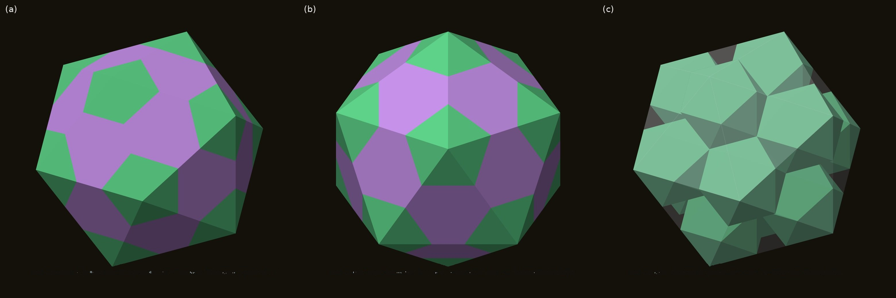
Figure 6.3. The Lotus seed: (a) the filled cluster; (b) down a five-fold axis; (c) its hull, a regular icosahedron of edge φ², over the cage of 12 icosahedra.
The filling. Thirty AXE close the outer grooves, thirty more close the inner ones, 20 FUJI fill the outer corners, and 20 CLEO fill the inner corners around a small icosahedron of edge 1/φ:
The result is exactly a regular icosahedron of edge φ². Its 20 large faces are each three icosahedron faces and one FUJI base.
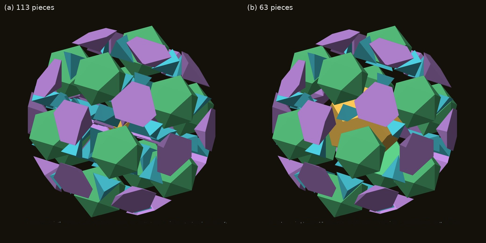
Figure 6.4. The Lotus seed pulled apart: (a) the 113-piece build; (b) our 63-piece build. Green: icosahedra and J11; cyan: AXE; purple: FUJI and CLEO; gold: the centre (a) and the dodecahedron (b).
The 63-piece build. We first made this solid in the Polyhedraverse app on 5 October 2026, while working on a dodecahedron problem, by putting a J11 on every pentagon of a dodecahedron. Each J11, together with the cap hidden inside the dodecahedron, is one of the 12 outer icosahedra, so:
The small centre, the inner AXE and the CLEOs merge into the single dodecahedron. Two standard solids and two gap pieces make it the easiest way to build the Lotus seed by hand (Section 7). The same move, a J11 on every unit pentagon, applied to an icosidodecahedron instead of a dodecahedron gives our UNITY [Icosa-13 study].
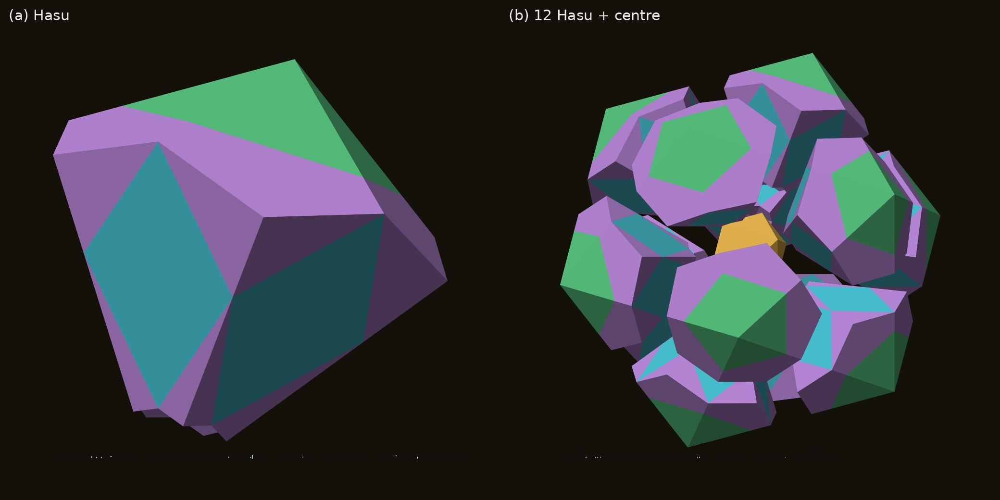
Figure 6.5. (a) Hasu, the finned unit: an icosahedron with its share of the gap pieces (21 parts, 45 faces). (b) Twelve Hasu and the centre rebuild the Lotus seed, and each lifts straight out along its axis.
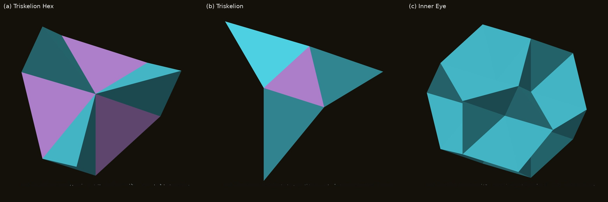
Figure 6.6. The pieces around each dodecahedron corner and the core. (a) Triskelion Hex = FUJI + 3 AXE. (b) Triskelion = CLEO + 3 AXE. (c) Inner Eye = I(1/φ) + 30 AXE + 20 CLEO, the dodecahedron with its 12 caps removed (volume 5φ/2).
The Triskelion has exactly the volume of the pentagonal cap J2, (5 + √5)/24.
6.2 Two shells, without end
The sections below are from #22, The Chain of Karma (DICTO DOI: 10.5281/zenodo.23310541), word for word; figures are renumbered through the chapter, and numbers in square brackets refer to the references of #22 (Appendix).
Throughout, φ = (1 + √5)/2, edges are given relative to the dodecahedron D(1) of edge 1, and I(a), D(a) denote the regular
icosahedron and dodecahedron of edge a. Two exact decompositions carry the whole construction:
In the first, the 12 pentagonal pyramids J2 (all edges 1) stand on the dodecahedron's faces with their points inward, and each
point lands exactly on a corner of I(1/φ): the dodecahedron's inradius 1.113516 minus the pyramid's height 0.525731 is 0.587785,
the circumradius of I(1/φ). In the second, each of the 12 outer icosahedra I(1) is cut by a face plane of D(1) into a J2 cap
(inside D) and a J11 (outside). Volumes: 0.515028 + 12 × 0.301503 + 30 × 0.083333 + 20 × 0.051503 = 7.663119 = D(1), and
7.663119 + 12 × 1.880192 + 30 × 0.083333 + 20 × 0.321175 = 39.148928 = I(φ²) = φ⁶ I(1). Together they give the Lotus seed
(DICTO Icosa-13, 113 pieces): I(φ²) = 12 I(1) + I(1/φ) + 60 AXE + 20 FUJI + 20 CLEO, whose 13 icosahedra are arranged as in
Gray (2002). Each shell has one piece for every vertex, edge and face of the dual pair: 12, 30 and 20.
Since the outer form of the Lotus seed is exactly I(φ²), it is a golden dissection rule for the icosahedron. Replacing every icosahedron by a Lotus
seed of its own size and turn, and keeping AXE, FUJI and CLEO whole, fills I(φ⁴), I(φ⁶), … exactly, upward without end, and in the
same way downward. After n steps there are 13ⁿ icosahedra and 100(13ⁿ − 1)/12 gap pieces, AXE, FUJI and CLEO in the ratio 3 : 1 : 1.
Steps 1 to 3 were built and checked: 113, 1,569 and 20,497 pieces, volume equal to φ⁶ⁿ times I(1) to within 3 × 10⁻⁹. The
icosahedra's share of the volume falls by (12 + φ⁻³)/φ⁶ = 0.6823 each step (68.19%, 46.50%, 31.71%). Keeping only the icosahedra
gives a fractal of similarity dimension D with 12 φ⁻²ᴰ + φ⁻³ᴰ = 1, D ≈ 2.6063, slightly above the Sierpinski icosahedron's
log 12 / log φ² ≈ 2.5819 (12 corner copies only).
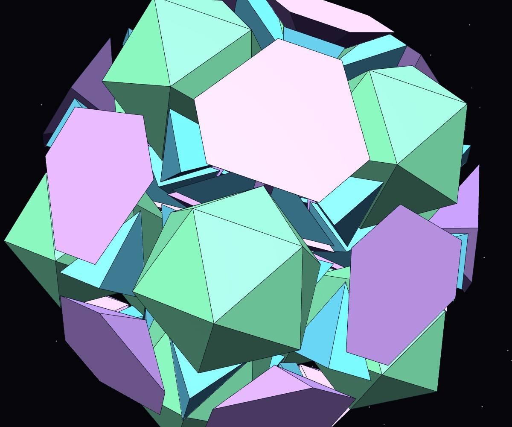
Figure 6.7. The Lotus seed pulled apart.Figure 6.8. The Lotus seed closed: its surface carries the fullerene (C60) pattern, with the 20 truncated triangles (sides 1 and 1/φ alternating, all angles 120°) in green.
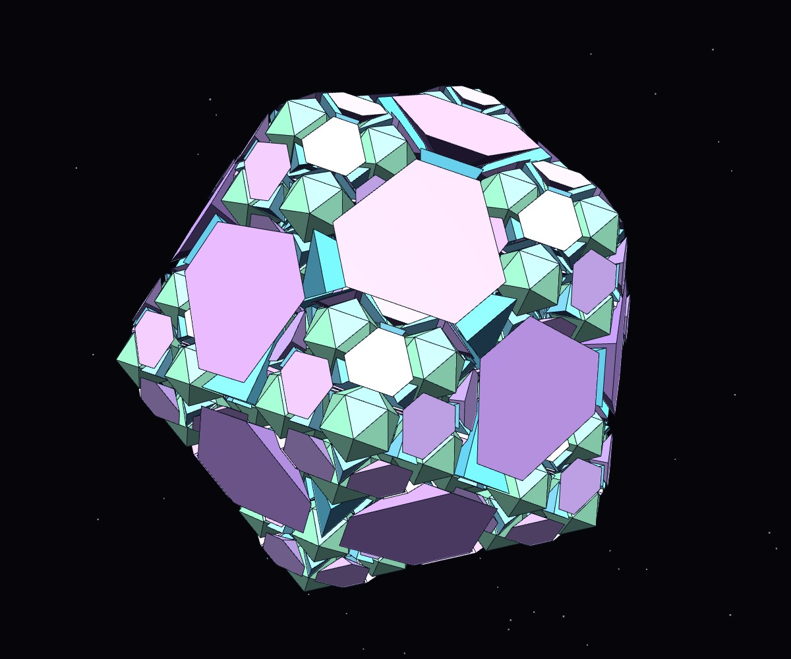
Figure 6.9. The Chain of Karma, two levels, pulled apart level by level: the pieces of the previous size lace together inside the next, showing the scale step φ².
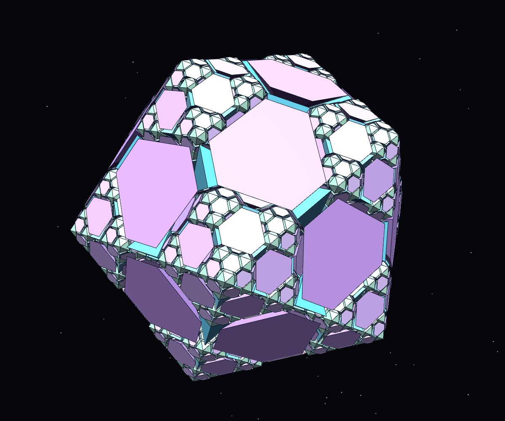
Figure 6.10. Three levels: each size laced into the next, the Chain continuing without end.
Every dihedral angle of the kit is, modulo 180°, an integer combination of α = arccos(√5/3) = 41.810° and
δ = arctan(3 − √5) = 37.377°. This makes the Dehn invariant computable exactly (coordinates in Q(√5), integer relations by PSLQ).
At a single size the gap pieces cannot be rebuilt from the kit: φ²·AXE, φ²·FUJI and φ²·CLEO pass the volume test (for example
φ²·AXE has the volume of 9 AXE + 2 FUJI + 2 CLEO) but no whole-number combination of the edge-1 kit matches their Dehn invariants;
the same program recovers the Lotus seed's own counts for φ²·I as a check. So the Chain of Karma is a hierarchy with gap pieces in
every size step of φ², not a single-size tiling. With mixed sizes the screen rules nothing out; it is a necessary condition only.
AXE and CLEO are, up to the factor 1/φ, the Mosseri–Sadoc tetrahedra t6 and t4 (Mosseri and Sadoc 1982; Kramer 1982, whose seven
tiles add T2 = t2 ∪ t4). The six tetrahedra admit no stone inflation (Papadopolos and Ogievetsky 1999).
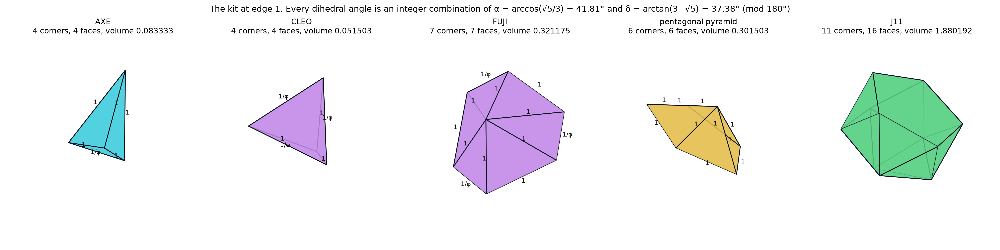
Figure 6.11. The kit at edge 1, every edge labelled: AXE, CLEO, FUJI, the pentagonal pyramid and J11, with their volumes. 60 AXE + 20 FUJI + 20 CLEO + 12 icosahedra of edge 1 + 1 of edge 1/φ fill the icosahedron of edge φ² exactly.
6.3 The Admiral Caps
Pacioli's icosahedron in the regular octahedron has its twelve corners on the octahedron's twelve edges, each dividing its edge in the golden ratio, and eight of its faces in the octahedron's eight face planes (#8 §4; #99 Theorem 1). The rest of the octahedron is six congruent pieces, one round each corner: DICTO's Admiral Caps (released as finding F21 in the Kaleidohedra apps). Each is the octahedron's corner with the four icosahedron corners on its four edges, bounded by four triangles in the octahedron's faces and, as a folded base, two faces of the icosahedron; it is not convex, two mirror-image tetrahedra glued along a triangle (study 2026-11-10-icosahedra-fill, exact). At icosahedron edge 1 the octahedron has edge φ²/√2 and each Admiral Cap has volume exactly φ/12, so the six caps of one icosahedron have volume φ/2, the volume of one Dogstar (#106 Table 2; #47).
So icosahedra fill space with partners. In the octet of edge φ²/√2 every octahedron is an icosahedron with its six Admiral Caps, and each icosahedron may take either of its two golden positions, independently, since octahedra of the octet meet only at corners (study 2026-11-10-icosahedra-fill). This is the icosahedron's world in #47 and #106 (Chapters 8 and 9). The Admiral Cap network itself, its three pieces and why none of them fills space alone, is told in full in Space-Fillers and Lattice Moves, Chapter 9.
6.4 From the studies: what icosahedra cannot do
The Cleo-Icos, the icosahedron's face pyramid, fills space with Antonius, two Cleo-Icos to one Antonius in the prolate golden rhombohedron (#20; Chapter 3). A filling of space by whole icosahedra with Cleo-Icos and Antonius, the old question "can the icosahedron fill space?", was taken up in study 2026-11-10-icosahedra-fill. Its results, each with its status:
Dehn balance (proof in the study). The icosahedron is twenty Cleo-Icos round its centre, and the prolate golden rhombohedron, which fills space, is Cleo-Icos + Antonius + Cleo-Icos. Since Dehn invariants add, D(icosahedron) + 10 D(Antonius) = 0: in any filling by these pieces, icosahedra and Antonius occur in the ratio 1 : 10, apart from whole rhombohedra. Necessary, not sufficient.
Not with the oblate rhombohedron (exact volumes). The oblate golden rhombohedron has 6/φ Cleo-Icos volumes, not a whole number, so it cannot be cut into Cleo-Icos, Antonius and icosahedra: the classical three-dimensional Penrose tilings, which use both rhombohedra, do not split into these pieces as they stand.
Not with the dodecahedron's pyramid (proof in the study). No filling of space, at any sizes and in any arrangement, uses the dodecahedron's face pyramids together with only Cleo-Icos and Antonius: θD, θI and π are independent over the rationals, and the θD part of the summed Dehn invariant has only positive terms.
Locally, yes (exact witness). A star of twenty prolate rhombohedra round one point holds a whole icosahedron; a search surrounds it with prolate rhombohedra alone to radius 3.4 (340 tiles, checked exactly in ℚ(√5): no overlaps, no face used by more than two tiles). So a whole icosahedron sits inside a filling of a ball of radius about 2.5 by Cleo-Icos and Antonius. Whether the shells close in all of space is open.
Not on the octets' regular places (exhaustive searches, face to face). With such stars placed on the points of the octet, the spacings 3.89 and 4.46 fail at once, and 4.81, 5.38 and 6.30 are impossible at both search windows tried; on the gyrated octet 4.46 is impossible and 7.22 impossible at the first window (the wider window needs a search on one repeating cell, not yet run).
The picture from these searches is that in this family icosahedra appear only irregularly, which points to the quasicrystal of Chapter 13 rather than to a crystal.
Claimed, known, open. Known and used: the Mosseri–Sadoc tiles; Gray's arrangement of thirteen icosahedra (2002); the Dehn invariant and its additivity (Debrunner; Lagarias and Moews); Pacioli's icosahedron in the octahedron. Claimed in the papers: FUJI and its independence (#19); the two exact shells and the Chain of Karma (#22). From the studies: the five results of §6.4 with the status given there. Open: icosahedra with Cleo-Icos and Antonius in all of space; the gyrated octet at spacing 7.22 at the wider window.
Chapter 7. The Dogstar
Pointer to #42 The DICTO Sunstar (DICTO DOI: 10.5281/zenodo.23497702), told in full in Space-Fillers and Lattice Moves, Chapter 6.
Euclid's dodecahedron is a cube with a roof on each face. Put such dodecahedra on alternate cubes of a cubic lattice and the roofs of six neighbours reach into each cube between: what is left there is a star, the Dogstar, and dodecahedra and Dogstars together fill space. The dodecahedra take (5 + √5)/8 ≈ 90.45 % of space, which is their densest lattice packing (Betke and Henk 2000; Torquato and Jiao 2009). The Dogstar and the tiling are George Hart's (1996: the eighth stellation of the dodecahedron in his enumeration); DICTO met it independently in the void of the dodecahedron packing. #42 proves them exactly in ℚ(√5): the Dogstar is the cube minus the six roofs that reach into it, of volume exactly φ/2 at dodecahedron edge 1, and as a stellation it is the dodecahedron 1/φ³ the size of the lattice's with all 12 pyramids, 24 of the 30 wedges and 8 of the 20 spikes.
Figure 7.1. The Dogstar; the Sunstar (gold dodecahedron, purple Dogstars); a 2 × 2 × 2 block of the Sunstar Lattice (#42, Figure 1).
For the five, the Dogstar matters three times over. It is the dodecahedron's partner in space, the answer to "how does the dodecahedron fill space?" in the table of Chapter 3; it is one of the seven connectors with which every mix of the five fills space (Chapter 8), and in the one world of Chapter 9 the cells between the dodecahedral cells are Dogstar-type remainders. Its volume equals that of the six Admiral Caps of one icosahedron (φ/2; Chapter 6), and its Vacuus gathers 114 of its 138 edges on the fifteen icosahedral mirror planes, as open fans rather than discs (Chapter 4). The Star Chain Reaction of #42, a whole Sunstar fitting exactly inside the great stellated dodecahedron of the Dogstar's core, smaller by φ³ at each step, and the Sunstar clusters are in Space-Fillers and Lattice Moves, Chapter 6.
Chapter 8. Every Mix Fills Space
Pointer to #47 Every Mix of the Platonic Solids Fills Space (DICTO DOI: 10.5281/zenodo.23551326), told in full in Space-Fillers and Lattice Moves, Chapter 8.
Only the cube fills space alone, and of the pairs only the tetrahedron with the octahedron (Conway and Torquato 2006; Conway, Jiao and Torquato 2011). With help, all of them do. The main theorem of #47: for every non-empty set M of the five Platonic solids, all of edge 1, there is a tiling of space whose tiles are copies of the solids in M, each used, together with pieces from one kit of seven connectors: the half octahedron P, the tetrahedron's face pyramid Q (Chapter 3), the same pyramid Q′ at size φ²/√2, the Admiral Caps A (Chapter 6), the Dogstar S (Chapter 7), and a cube of edge φ with one of Euclid's roofs taken away (X) or added (Y). The proof stacks flat slabs, one for each solid's world: dodecahedra and Dogstars on Euclid's cubes; cubes; the octet; icosahedra in Pacioli's position inside octahedra, completed by the Admiral Caps. All 31 mixes are covered.
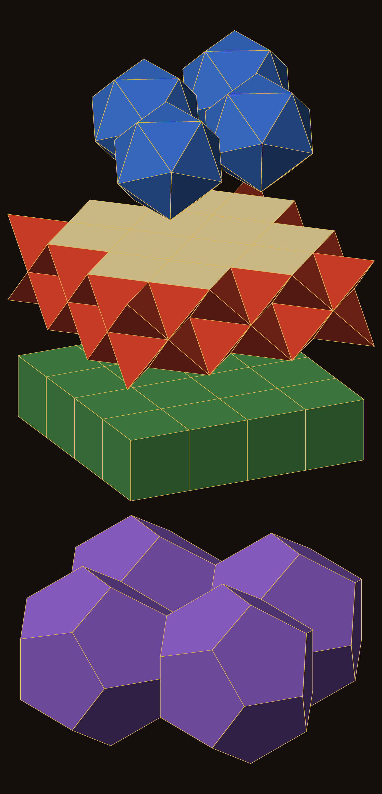
Figure 8.1. The mix of all five solids: the slabs stacked from bottom to top, drawn apart (#47, Figure 1).
For the five this settles the oldest question about them in the widest sense: any choice of them, one, several or all, fills space at one edge length, with pieces that are mostly halves, quarters and roofs of the solids themselves. The cube alone, the tetrahedron with the octahedron, and cubes, tetrahedra and octahedra together need no connector; every mix with the dodecahedron or the icosahedron needs one, and all five together use six of the seven. The smallest kit is left open in #47. Chapter 9 removes the layers: with each solid at its own size, all the mixes live on one cubic grid.
Chapter 9. One World
From #106 One World for the Platonic Solids (§§1–3).
Chapter 8 built every mix of the five from four separate layers, all solids at one edge. Let each solid have its own size and something simpler appears. Every one of the five fits inside a skin of congruent pieces that turns it into a dodecahedron of edge 1, and Euclid's cube with six roofs is a dodecahedron too, so every mix lives on one cubic grid, the grid of Euclid's cubes, with no layers and no seams. Almost every piece of that world is a cube and a roof: a dodecahedron is a cube with six roofs, a Dogstar a cube without six, X a cube without one, Y a cube with one. Euclid's single construction (XIII.17) carries the whole world.
What this chapter shows. (1) At free scale (dodecahedron edge 1, cube, tetrahedron and octahedron edge φ, icosahedron edge √2/φ) the 31 mixes fill space in two worlds, the cubic grid and one octet, meeting in one flat seam, with a kit of six connectors (Theorem 1 of #106). (2) Each of the five, and the cuboctahedron, fits inside a skin of congruent pieces that makes it exactly a dodecahedron of edge 1, with every volume exact; so all 127 mixes of these and the rhombic dodecahedron fill space in one world (Theorem 2). (3) The flat Karma layer: across one plane an icosahedron face, a CLEO and a dodecahedron corner meet exactly, joining the dodecahedron's world to the icosahedron's (Theorem 3).
The sections below are from #106, One World for the Platonic Solids (DICTO DOI: 10.5281/zenodo.24126400), word for word; figures are renumbered through the chapter, and numbers in square brackets refer to the references of #106 (Appendix).
Theorem 1. With the dodecahedron of edge 1, the cube, tetrahedron and octahedron of edge φ and the icosahedron of edge √2/φ, each of the 31 mixes of the five Platonic solids fills space in two worlds: the cubic grid of edge φ (dodecahedra, Dogstars, cubes) and one octet of edge φ (tetrahedra, octahedra, and icosahedra in Pacioli's position with six Admiral Caps each). The two meet in one flat seam, face to face, and the connectors form a kit of six.
Turning the octet by 45° makes its square layers coincide with the cube faces of the grid. #47's fourth connector Q′ disappears, and with cubes in the mix the edging next to every Dogstar becomes a whole cube (cubes as cubes). Checked for all 31 mixes by random points: every point lies in exactly one piece.
Theorem 2. Each of the five Platonic solids, and the cuboctahedron, fits inside a skin of congruent pieces that makes it exactly a dodecahedron of edge 1 (Table 1); the rhombic dodecahedron is a cube of edge φ with six square pyramids. Hence every mix of these seven solids (127 mixes) fills space in one world: the alternating cubes of the cubic grid of edge φ hold dodecahedral cells and rhombic dodecahedra, the cells between are Dogstar-type remainders, and the edging is X, XR and whole cubes. No seam remains.
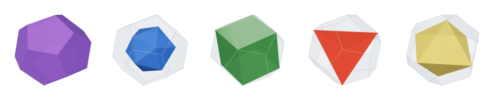
Figure 9.1. The five solids in their skins (one-world sizes): the dodecahedron is its own cell; the icosahedron, cube, tetrahedron and octahedron sit inside glass dodecahedral cells of edge 1.
Table 1. The skins (the dodecahedral cell has volume (15 + 7√5)/4 ≈ 7.663; all values exact).
The cube of edge φ is Euclid's cube inside the dodecahedron (Elements XIII.17), and the cube, its tetrahedron and the dodecahedron share one circumsphere (radius φ√3/2 ≈ 1.401). The sphere-unit octahedron has its corners at the midpoints of the dodecahedron's six roof ridges; Pacioli's icosahedron of edge 1 sits inside it, its corners on the octahedron's edges at the golden section and on the faces of Euclid's cube.
Table 2. The kit. Beside the solids, the whole one world is built from these pieces (exact volumes).
Piece
Exact volume
≈
Used
Roof (Euclid's)
(7 + 3√5)/24
0.5712
skins of the cube, tetrahedron, cuboctahedron
Cap (one shape)
(27 + 13√5)/96
0.5841
8 round the sphere-unit octahedron, and round the icosahedron's octahedron
Admiral Cap
(1 + √5)/24 = φ/12
0.1348
6 round the icosahedron in its octahedron (→ #21, #47)
edging only in mixes without cubes (with cubes, whole cubes stand there)
Almost everything is a cube and a roof: a dodecahedron is a cube with six roofs, a Dogstar a cube without six, X a cube without one, Y a cube with one. Euclid's single construction carries the whole world.
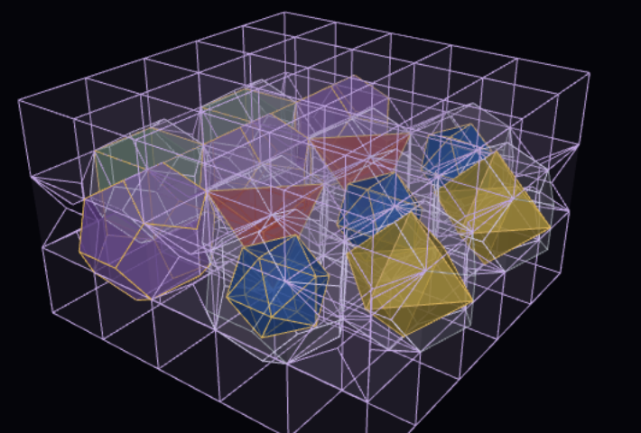
Figure 9.2. A block of the one world with all five solids (View in app: Every Mix of the Platonic Solids, One world).
Two exact bridges. Karma cells: by the Chain of Karma (→ #22), a dodecahedron of edge 1 is an icosahedron of edge 1/φ in a shell of 12 pentagonal pyramids, 30 AXE and 20 CLEO; such cells stand on the same grid as plain dodecahedra, so the two solids share one world.
Theorem 3 (the flat Karma layer). The plane perpendicular to a three-fold axis at level φ/(2√3) above a layer of cell centres cuts every Dogstar it crosses so that the part below is exactly a CLEO, its apex a dodecahedron corner. The octet of edge φ/√2 above the plane, with Pacioli's icosahedra (edge 1/φ, the mirror form) in its octahedra, puts an icosahedron face exactly on every CLEO base.
Figure 9.3. Icosahedron face → CLEO → dodecahedron corner across a flat plane (checked for all 60 CLEOs in a window: every one meets an icosahedron face exactly). The level φ/(2√3) is also the inradius of the Karma icosahedron.
Claimed, known, open. Known and used: Euclid's cube in the dodecahedron (XIII.17); Pacioli's icosahedron; Hart's Dogstar; the tilings by pairs of regular solids (Conway, Jiao and Torquato). Claimed in #106: Theorems 1–3, with all volumes exact and every filling checked by random points through the whole block. The rhombic dodecahedron and the cuboctahedron belong to #106 rather than to this book; they ride along in Theorem 2.
Chapter 10. Plato's Five in the Octet
From #99 Plato's Five in the Octet (§§1, 3) and #8 The Euclid–Kepler–Pacioli Cell (§§2, 5); pointer to #41 The DICTO Jewel; study 2026-11-06-crossed-nest.
The five solids fill space together only with connecting pieces (Chapters 8 and 9); a lattice can hold all five at once with none. Chapter 1 found one: the EKP cell, a simple cubic lattice whose cells nest dodecahedron, cube, stella octangula, octahedron and icosahedron, with dodecahedra that cross the cell walls. The octet, the honeycomb of tetrahedra and octahedra, holds them more simply: inside every octahedron sits Pacioli's icosahedron, inside that the dual dodecahedron, then Euclid's cube, then Kepler's tetrahedron, and every tetrahedron of the octet holds the same nest at half the size. The nest's cube is exactly the octahedron's dual cube, and the nest goes on for ever, a third smaller at each turn (#99).
What this chapter shows. (1) In the octet of edge 1 every octahedron holds O ⊃ I ⊃ D ⊃ C ⊃ T with edges √2/φ², √2/(3φ), √2/3 and 2/3, the cube being the octahedron's dual cube, and every tetrahedron holds the same nest at half size: all five in every cell of a structure periodic in three directions (Theorem 1 of #99). (2) The nest repeats inward and outward by exactly 1/3 per turn, the golden factors cancelling; the shorter loop cube ⊃ icosahedron ⊃ dodecahedron ⊃ cube repeats by φ/3 (Theorem 2 of #99). (3) Supercells from the 120-cell, the 600-cell and the middle slice; the Dodeca-13 fits inside its own central dodecahedron at exactly 1/3 (Proposition of #99). (4) In the EKP cell, dodecahedra on alternate cells are the densest lattice packing, and Kepler stars with icosahedra share only corners, the EKP network (#8 §5).
10.1 Five in every cell
The sections below are from #99, Plato's Five in the Octet (DICTO DOI: 10.5281/zenodo.24012439), word for word; figures are renumbered through the chapter, and numbers in square brackets refer to the references of #99 (Appendix).
Theorem 1 (Five in the octet). Let the octet have edge 1. (a) Every octahedron O holds regular solids O ⊃ I ⊃ D ⊃ C ⊃ T: I with its 12 corners at the golden points of O's 12 edges (Pacioli), edge √2/φ²; D on the 20 face centres of I, edge √2/(3φ); C on 8 corners of D, edge √2/3; T on 4 alternate corners of C, edge 2/3. (b) C is O's dual cube: its corners are the 8 face centres of O. (c) Every tetrahedron of the octet holds the octahedron of its edge midpoints (edge 1/2), and with it the nest of (a) at half size; between them sits the truncated tetrahedron with corners at the thirds of the edges (edge 1/3). (d) C − T is four copies of O's centre pyramid scaled by 2/3. Hence every cell of the octet holds all five Platonic solids, and the whole is periodic in three directions.
Proof. Place O with corners (±1/√2, 0, 0) and cyclic. The points (0, ±a, ±b) and cyclic with b = φa, a + b = 1/√2 lie on O's edges in the golden ratio and are the corners of a regular icosahedron of edge 2a = √2/φ² (Pacioli). Each face of O contains three of these points, so eight faces of I lie in O's face planes: I and O share their inscribed sphere and their eight face centres on the three-fold axes. The 20 face centres of I are the corners of the dual dodecahedron D; eight of them are those shared face centres, (±t, ±t, ±t) with t = 1/(3√2), which are the corners of a cube (Euclid XIII.17: a cube on eight corners of a dodecahedron) and are O's face centres, proving (b); its edge is 2t = √2/3, and the alternate corners give T with edge 2t√2 = 2/3. For (c), the midpoints of a regular tetrahedron's edges form an octahedron of half the edge, and cutting the corners at one third gives the Archimedean truncated tetrahedron, which contains the midpoints. For (d), a corner of C outside T and its three neighbours in T form a trirectangular tetrahedron with legs √2/3, and O's centre pyramid is trirectangular with legs 1/√2. The octet is periodic (fcc), so the nests are too. Every step was checked in exact arithmetic in Q(√2, √5) (proof/exact_nest.py; all factors and sizes of §§2–3 in proof/exact_audit.py). ∎
Figure 10.1. The nest in one octahedron, seen down a three-fold axis: the octahedron in sepia line, the icosahedron, dodecahedron and cube as tinted glass, the tetrahedron solid. Rings: the golden points of the octahedron's edges, where the icosahedron's corners sit (Pacioli); crosses: the octahedron's face centres, which are the cube's corners (Theorem 1b).
Theorem 2 (For ever). (a) The chain O ⊃ I ⊃ D ⊃ C ⊃ T ⊃ O′, with O′ the midpoint octahedron of T, has edge factors √2/φ², φ/3, φ, √2 and 1/2, whose product is exactly 1/3; O′ has O's orientation. So the nest repeats inward, and by reversal outward, a third at each turn. (b) The loop C ⊃ I ⊃ D ⊃ C′ (I touching all six faces of C, edge 1/φ; D on I's face centres; C′ on eight corners of D) has factors 1/φ, φ/3, φ, product φ/3, and C′ has C's orientation: a golden nest for ever.
Proof. Multiply the factors of Theorem 1 and of the inscriptions in §2; the golden numbers cancel in (a). The orientations follow from the corners: O′ has its corners on O's axes, C′ has corners (±t, ±t, ±t) like C. Exact check proof/exact_loops.py. ∎
Route of the 4D structures: the 120-cell's first shell, 1 + 12 dodecahedra, is DICTO's Dodeca-13 (13 dodecahedra, 30 wedges, 20 needles); each dodecahedron holds the chain D ⊃ I ⊃ O ⊃ C ⊃ T (edges 1, φ²/√5, φ³/√10, φ³/(3√5), √2 φ³/(3√5)), and with each outer nest the mirror image of the central one in their common face, all 13 nests are regular and nested; six outer octahedra are parallel to the central one, six turned by 26.57° (numerical). The 600-cell's twenty tetrahedra round one corner, built with regular tetrahedra, are pairwise disjoint and leave 14.1% of their hull open (numerical) (the three-dimensional trace of the four-dimensional curvature); each holds T ⊃ U ⊃ O ⊃ I ⊃ D ⊃ C. The middle slice, the icosidodecahedron, with twelve J11 on its pentagons is DICTO's UNITY; each J11 with its pentagonal cap is a regular icosahedron holding a nest, the caps are disjoint (total volume (5 + √5)/2), and their tips form a regular icosahedron of edge exactly 2/√5 at UNITY's heart, clear of every cap.
Proposition. The Dodeca-13 fits inside its own central dodecahedron at exactly 1/3 of its size, touching all twelve faces at once.
Proof. Let r be the central dodecahedron's face distance and nk its face normals. The outer dodecahedron mirrored in face k has centre 2r nk and its far face in the plane p · nk = 3r, so the cluster reaches 3r along nk; any other outer dodecahedron j reaches at most 2r (nj · nk) + R ≤ 2r/√5 + R = 2.397 < 3r = 3.341 (edge 1; R the circumradius), and the wedges and needles lie in the hull of the thirteen. So the cluster's extent in every face direction is exactly 3r, and the largest copy inside the slab |p · nk| ≤ r is at scale 1/3. ∎
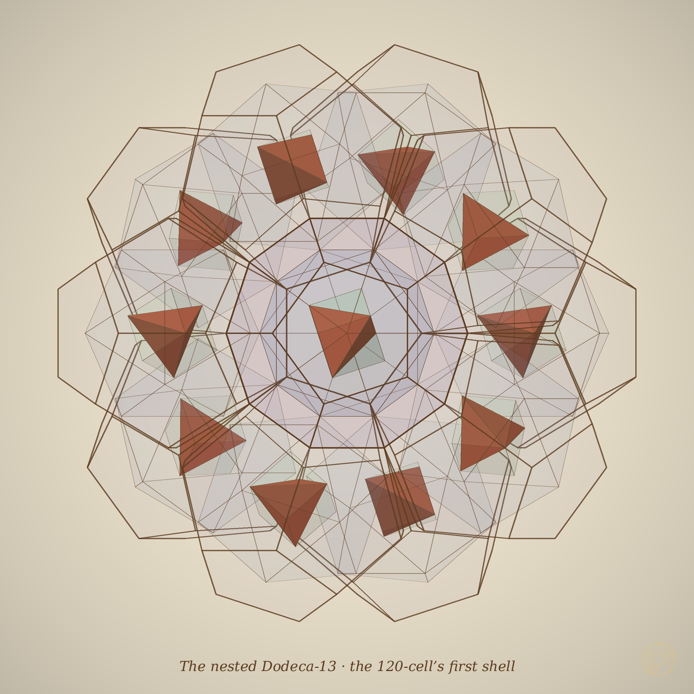
Figure 10.2. Left: the nested Dodeca-13 (the 120-cell's 1 + 12) down a five-fold axis, turns aligned by mirroring; the tetrahedra (solid) show each cell's nest. Right: UNITY (the 600-cell's middle slice) with a nest in each of its twelve icosahedra and the heart icosahedron (gold) formed by the caps' tips.
10.2 The EKP cell as a lattice
The EKP cell of Chapter 1 is a lattice in its own right; its measured properties and the arrangements that can be taken from its thirteen points without overlap are those of #8.
The sections below are from #8, The Euclid–Kepler–Pacioli Cell (DICTO DOI: 10.5281/zenodo.23284106), word for word; figures are renumbered through the chapter, and numbers in square brackets refer to the references of #8 (Appendix).
cube 2, dodecahedron 2/φ, icosahedron 2/φ² (ratio φ² : φ : 1); every edge along one of the icosahedron's 15 two-fold axes
Nodes per cell
13: one cube corner + 12 icosahedron vertices
Space group
Pm-3 (No. 200), symmorphic; 1b (cube corner) and 12j (0, y, z), y = 1/(2φ) ≈ 0.3090, z = 1/(2φ²) ≈ 0.1910
Aligned axes
each cell's solids carry the icosahedron's 31 rotation axes (6 five-fold, 10 three-fold, 15 two-fold), parallel in every cell; 7 of them are axes of the crystal (3 two-fold, 4 three-fold). m-3 is exactly the set of cube symmetries that are also icosahedron symmetries.
Spikes
over each of the 20 icosahedron faces, exactly one node at distance 2/φ from its three corners; spike faces are golden triangles (apex 36°); the 20 tips are the dodecahedron's vertices
Great stellated dodecahedron
the icosahedron with its 20 spikes: 60 triangles in 12 planes forming 12 regular pentagrams, volume ≈ 2.918; its convex hull is the dodecahedron
Coverage by dodecahedra
not a tiling: space is covered once (19.1%) or twice (80.9%), mean (5+√5)/4 ≈ 1.809 = (10+2√5)/8
Neighbours
face neighbours' dodecahedra overlap by exactly two roofs; edge neighbours touch only; corner neighbours share one vertex
Colourings
x+y+z parity → Fm-3 (No. 202); x+y → Cmmm (No. 65); z → Pmmm (No. 47); eight octants → Pmmm on a doubled cell
#8 §5. Extractions without overlap; the EKP network
The overlap belongs to the solids chosen, not to the points. From the same 13-node set:
(a) Dodecahedra on the even cells only (an FCC lattice) touch their twelve nearest neighbours and never overlap; the density is exactly (5+√5)/8 ≈ 0.9045. This is the known optimal lattice packing of the regular dodecahedron (Betke & Henk 2000; Torquato & Jiao 2009), recovered here inside the structure. Status: known.
(b) Great stellated dodecahedra on the even cells (touching tip to tip at shared cube corners) together with icosahedra on the odd cells share only corners: each star's twelve roof tips are vertices of the six neighbouring icosahedra, and an exact separating-axis test over 294 piece pairs finds no overlap (Figure 10.5). We call this corner-sharing arrangement of Kepler stars and icosahedra the Euclid–Kepler–Pacioli network. Status: not found in a literature search; candidate.
Dodecahedra on the even cells with icosahedra on the odd cells do overlap; it is the stars that make (b) corner-sharing.
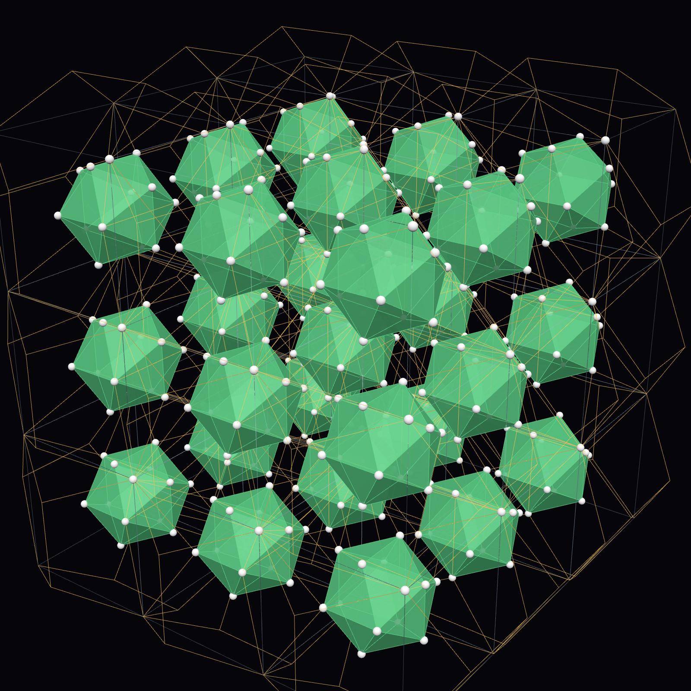
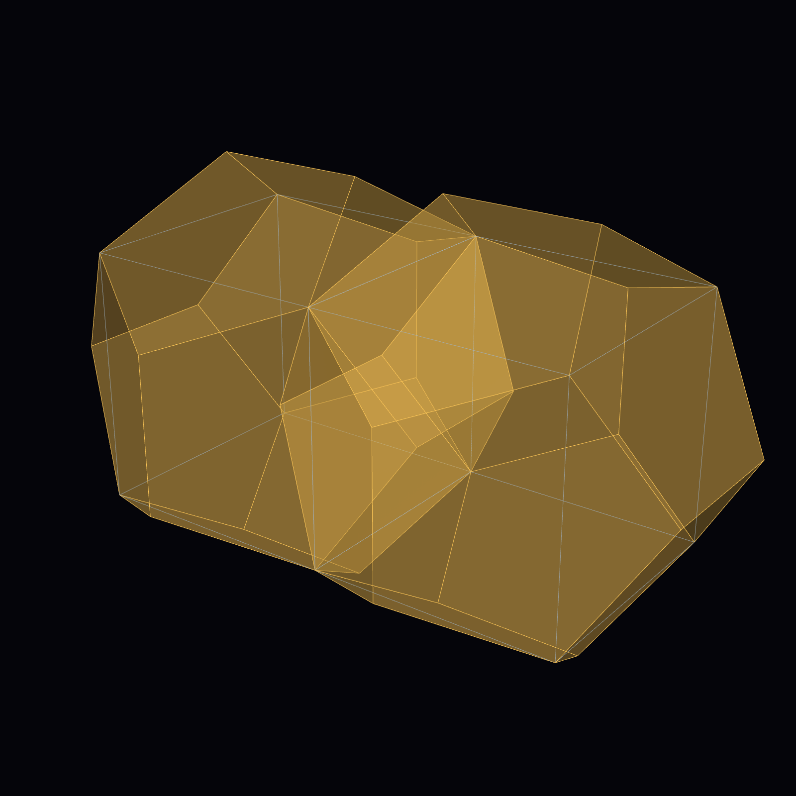
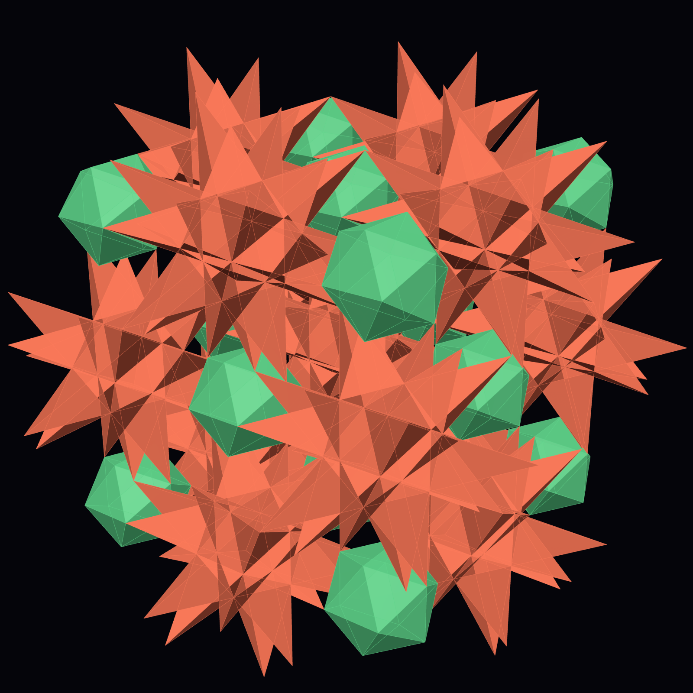
Figure 10.3–10.5. (4) A 3 × 3 × 3 block of cells: icosahedra, dodecahedron edges (gold), cube edges and the 13 nodes per cell (white). (5) Two face neighbours: their dodecahedra overlap by exactly two roofs. (6) The EKP network: great stellated dodecahedra on even cells, icosahedra on odd cells, meeting at corners only.
The same cell carries the DICTO Jewel: Euclid's dodecahedron on a cube carved by the stella octangulas of its six neighbouring cubes, with twelve thick Penrose rhombi as windows and volume exactly 3/16 when a block of 2 × 2 × 2 cells has edge 1; Jewels and stella octangulas fill space in the rock-salt pattern, 3 : 1 by volume (#41). It is told in full in Space-Fillers and Lattice Moves, Chapter 5, and #8, #99 and #92 appear there among the plates of its Atlas.
10.3 From the studies: crossing the walls
What made the EKP cell work, DICTO noted, was the overlap of cells: Euclid's dodecahedra cross the cube faces, so the roofs continue through the lattice and meet as Pacioli's rectangles. Study 2026-11-06-crossed-nest asked the same of the octet; study 2026-11-13-platonic-exact-checks made every threshold below exact in ℚ(√5) and proved each to be the first event of its kind. Grow every Pacioli icosahedron of the octet of edge 1 about its own centre by a factor s. At s = 1 its eight faces lie in the octet's layer planes and its three golden rectangles lie in the cube planes through the octahedral sites, so the rectangles of all those cells share one plane, as in the EKP cell. Neighbouring icosahedra first touch at s = √5/2; the centres of the tetrahedral holes are reached at s = 3/2; and at s = φ the grown icosahedra cover all of space, the octet's own corners being the only points covered last; at that same s = φ, by coincidence, each icosahedron meets its neighbours across the next shell, at (2, 0, 0), exactly at the octet corner between them. Coplanar faces of neighbouring icosahedra meet, as EKP's roofs do, only deeper in the overlap, and never edge to edge: the eight layer-plane faces at s = 1 + √5/2, where a corner of one face touches the neighbour's edge at its golden point, 1/φ² of the edge from the nearer end; the twelve golden faces at s = φ², corner to corner. Grown dodecahedra touch at s = 3/2, and their coplanar faces meet at s = 3, corner to corner.
Claimed, known, open. Known and used: Pacioli's icosahedron in the octahedron; Euclid XIII.17; the classical inscriptions; the octet; the densest lattice packing of the dodecahedron (Betke and Henk; Torquato and Jiao). Claimed in the papers: Theorems 1 and 2, the gap pieces Sheriff and Lone-star and the Proposition on the Dodeca-13 (#99); the EKP cell and network as candidates, not as priority (#8). From the studies, exact (study 2026-11-13-platonic-exact-checks): the six thresholds of §10.3, √5/2, 3/2, φ, 1 + √5/2, φ² and 3, each the first event of its kind, and the kinds of contact. Open: nests joined across cells; whether the golden point where the layer faces meet is a corner of the roof sheet that forms beyond s = 1 + √5/2.
Part Three. Where the five live
Chapter 11. The Residents
New chapter (draft of 11 November 2026), from #108 The Atlas of the Chains (§5, Observation 5); checks in studies 2026-11-11-platonic-ch11 (snub24.py) and 2026-11-13-platonic-residents-exact (residents.py: 199 exact checks, FINAL ok).
In three dimensions only the cube fills space alone, and of the pairs only the tetrahedron with the octahedron (Part Two). One dimension up the room curves: the cells of a four-dimensional polytope fill the three-dimensional sphere that bounds it, and there the five behave differently. Four of them fill curved space alone; the icosahedron, the outsider of the Opening, does not, and needs the tetrahedron. And of the four four-dimensional reflection groups, only one family houses all five among its corners: the family of the Queens, DICTO's names for the 600-cell (the White Queen) and the 120-cell (the Red Queen) (#63, #65).
This chapter answers the question of the Opening.
What this chapter shows. (1) Four of the five fill the three-sphere alone, as the cells of the six regular 4-polytopes; the icosahedron never (Schläfli; Coxeter). (2) Removing the 24 corners of an inscribed 24-cell from the 600-cell leaves the snub 24-cell, whose cells are 24 regular icosahedra and 120 regular tetrahedra (Gosset 1900; Conway and Guy 1965; checked). (3) The 600-cell's corners hold 120 dodecahedra, 240 icosahedra, 600 cubes, 3000 tetrahedra and 900 octahedra, and the 120-cell's 1560, 2400, 7200, 34 200 and 8100, every resident found and none missed, exactly over ℚ(√5) (study 2026-11-13-platonic-residents-exact). (4) Of the polytopes of the four four-dimensional reflection groups, only the Queens' family (H4) houses the dodecahedron and the icosahedron, and every one of its fifteen polytopes houses all five (proved: the other three groups have coordinates in ℚ(√2), which holds no regular pentagon). (5) Each of the 600-cell's 120 dodecahedra has all five of its Euclid cubes on the 600-cell's corners, and these are its 600 cubes.
11.1 Four of the five fill curved space alone
solid
fills the three-sphere alone as
cells
D dodecahedron
the 120-cell (the Red Queen)
120
I icosahedron
never
–
C cube
the tesseract
8
T tetrahedron
the 5-cell, the 16-cell, the 600-cell (the White Queen)
5, 16, 600
O octahedron
the 24-cell
24
These are the six regular 4-polytopes (Schläfli; Coxeter 1973). No regular 4-polytope has icosahedral cells: the icosahedron's dihedral angle, 138.19°, is too wide, since three of them round an edge already exceed 360°, so they cannot close up even in curved space.
11.2 The icosahedron needs the tetrahedron
Proposition 11.1 (Gosset 1900; Conway and Guy 1965). Remove from the 600-cell's 120 corners the 24 corners of an inscribed 24-cell. The other 96 corners span the snub 24-cell, whose cells are 24 regular icosahedra and 120 regular tetrahedra.
Checked by building the 600-cell's corners, removing those of its 24-cell, and taking the hull of the rest: 24 icosahedra and 120 tetrahedra, every one regular; the full 600-cell gives its 600 tetrahedra (snub24.py, FINAL ok). So the icosahedra are carved out of the White Queen: each sits round one removed corner, where twenty of the 600-cell's tetrahedra met. The same twenty tetrahedra round a corner, built in flat space, are pairwise disjoint and leave 14.1 % of their hull open (#99 §3, Chapter 10): the three-dimensional trace of the curvature that closes them in four dimensions.
11.3 All five together
A resident of a polytope is a regular D, I, C, T or O, of any size and in any position, whose corners are all corners of the polytope; it need not be a cell. Study 2026-11-13-platonic-residents-exact counts them all, as distinct corner sets, in exact integer arithmetic over ℚ(√5) with no floating point. Every resident through one corner is found from four of its corners (a solid is fixed by any four corners not in a plane, and every quadruple at the right distances is tried), the totals follow from the symmetry, and a second search from every corner, using no symmetry, gives the same sets:
D
I
C
T
O
600-cell (White Queen)
120
240
600
3000
900
120-cell (Red Queen)
1560 (120 of them its cells)
2400
7200
34 200
8100
The 600-cell's residents, by orbit of its symmetry group (edge 1, circumradius φ):
solid
total
orbits
D dodecahedron
120
one orbit, edge 1
I icosahedron
240
120 corner figures (edge 1) + 120 of edge φ
C cube
600
one orbit, edge φ: the 8 cells of each of the 75 inscribed tesseracts
T tetrahedron
3000
every regular tetrahedron on the corners: the 600 cells (edge 1) + 600 of edge φ + 1200 of edge φ√2 (the two tetrahedra in each of the 600 cubes) + 600 of edge φ²
O octahedron
900
600 of edge φ (the cells of the 25 inscribed 24-cells) + 300 central, edge φ√2 (4 in each of the 75 inscribed 16-cells)
Through each corner of the 600-cell pass 20 of its dodecahedra, 24 icosahedra, 40 cubes, 100 tetrahedra and 45 octahedra; through each corner of the 120-cell 52, 48, 96, 228 and 81. The 120-cell's residents fall into orbits too: its 1560 dodecahedra are its 120 cells and 1440 more of three larger sizes, and its 600 corner figures are among its 34 200 tetrahedra (orbit data in the study). The Atlas of #108 extends the count to every polytope of the reflection groups with seeds of zeros and ones:
The sections below are from #108, The Atlas of the Chains (DICTO DOI: 10.5281/zenodo.24126802), word for word; figures are renumbered through the chapter, and numbers in square brackets refer to the references of #108 (Appendix).
Observation 4 (the second Vacuus). A central slice that is not a mirror of the group yet carries three or more faces occurs in only these: the cuboctahedron (4 hexagons) and the icosidodecahedron (6 decagons), the quasi-regular great polygons; and, in four dimensions, only the runcinated 5-cell and the 4D permutohedron, whose five such slices are the five DICTO 1:2 Truncated Octahedra at the heart of #105. The B4 polytopes that showed such slices are the 24-cell, the rectified 24-cell and the truncated 24-cell in disguise, whose slices are F4 mirrors: the scan detects hidden symmetry. The F4 and H4 families have none: the Queens' Vacuus is exactly their 60 mirrors.
Observation 5 (the residents). Counting every exact Platonic solid whose corners are corners of the polytope (as a cell, as the vertex figure, or hidden among the corners, of any size): the A4 family houses only tetrahedra and octahedra; the B4 and F4 families only cubes, tetrahedra and octahedra; every one of the 15 H4 polytopes houses all five. The 600-cell hides 120 dodecahedra, 240 icosahedra (two sizes), 600 cubes, 2400 tetrahedra besides its 600 cells, and 900 octahedra; the bitruncated 600-cell, whose cells are truncated tetrahedra and truncated icosahedra, houses 7200 dodecahedra, 14 400 icosahedra, 36 000 cubes, 180 000 tetrahedra and 56 400 octahedra; the 4D permutohedron hides 60 regular tetrahedra.
Proposition 11.2 (the law of residents, for the four four-dimensional reflection groups; proof in study 2026-11-13-platonic-residents-exact). No uniform polytope of A4, B4 or F4 (D4 included) has a dodecahedron or an icosahedron among its corners; every one of the fifteen uniform polytopes of H4 has all five Platonic solids among its corners.
Proof of the first part. The corners of the A4, B4 and F4 polytopes have every coordinate in ℚ(√2), so every squared distance between them lies in ℚ(√2). Both golden solids contain a regular pentagon, whose squared diagonal over squared side is φ² = (3 + √5)/2, which is not in ℚ(√2): from √5 = a + b√2 with a, b rational, 2ab = 0, so √5 or √(5/2) would be rational. The second part is the exact count, polytope by polytope. ∎
The scope is exactly that: the uniform polytopes of the four groups. The seven uniform H3 prisms, the snub 24-cell (no dodecahedron) and the grand antiprism (no icosahedron) were checked too, and none houses all five; the duoprisms were not checked. The Queens' middle, the bitruncated 600-cell, houses every Platonic solid though none of them is its cell.
One World in the 600-cell. Every one of the 600-cell's 120 dodecahedra has all five of its Euclid cubes (edge φ, Elements XIII.17) and all ten of their tetrahedra (edge φ√2) on the 600-cell's corners. This is forced, since their corners are corners of the dodecahedron; and the 600 cubes of the table are exactly these Euclid cubes, each in one dodecahedron, as are the 1200 tetrahedra of edge φ√2. So One World's nesting of Chapter 9, dodecahedron (edge 1) ⊃ cube (edge φ) ⊃ tetrahedron (edge φ√2), lies among the 600-cell's corners at One World's own sizes. The rest of One World does not: the 600-cell has no octahedron of edge φ/√2 or φ²/√2 and no icosahedron of edge 1/φ, and no icosahedron or octahedron of any size has the same centre as one of its dodecahedra.
Claimed, known, open. Known and used: the six regular 4-polytopes (Schläfli; Coxeter); the snub 24-cell (Gosset; Conway and Guy). Claimed, from study 2026-11-13-platonic-residents-exact (exact over ℚ(√5), complete): the counts and orbits of §11.3 for the Queens; Proposition 11.2 for the four four-dimensional reflection groups, which turns Observation 5 of #108 into a theorem in that scope; all five Euclid cubes of every dodecahedron of the 600-cell. Corrected here: the draft of 11 November said two of the five Euclid cubes, from a floating-point search; it is five. Open: the duoprisms, which were not checked.
Chapter 12. Beyond the Five
New chapter (draft of 11 November 2026): the five on the classical map of every dimension. Everything stated is classical and credited; DICTO's papers are linked by number.
Every Platonic solid belongs to a family that continues into higher dimensions, but the families do not go equally far: three of them go on for ever, and the two golden ones, the dodecahedron and the icosahedron, stop in the fourth dimension. Chapter 11 found that, of the four four-dimensional reflection groups, only the Queens' family houses all five; this chapter shows that it is also the last golden family.
12.1 How many regular solids there are
Theorem (Schläfli, 1852). The convex regular polytopes are: in the plane, the regular polygons, one for every number of sides; in three dimensions, the five Platonic solids; in four dimensions, six; in every dimension from five on, exactly three.
Euclid ended the Elements at the middle row of this table: Book XIII builds the five in one sphere (XIII.13–17) and closes with the remark that no other regular solid exists (after XIII.18); Schläfli's count is the same "no more" in every dimension, and with it the classical subject of this book is closed.
The fourth dimension also has one regular polytope that belongs to no family: the 24-cell, the only one of its kind in any dimension (symmetry group F4). Its cells are octahedra, and its 24 corners are the 24 nearest neighbours in the densest lattice packing of four-dimensional balls.
12.3 Why the golden line ends
The symmetry groups of regular polytopes are reflection groups, and every finite reflection group is known (Coxeter, 1935). The regular polytopes have indivisible (irreducible) groups, and among those only three kinds carry the golden ratio: in the plane, the groups of the polygons whose number of sides is a multiple of five (the pentagon's first); the icosahedron's group H3; and the 600-cell's group H4. There is no H5: no irreducible reflection group in five or more dimensions has five-fold symmetry (groups that are products of smaller ones can, but they are the symmetries of no regular polytope). So the pentagon, the icosahedron and the 600-cell are the whole golden line of regular polytopes: 2, 3, 4, and then it stops. The icosahedron is the outsider of the five because it cannot fill space; in the fourth dimension its descendant, the 600-cell, still cannot tile flat space, and after that it has no descendant at all.
12.4 The families that go on
Simplex, cross-polytope and hypercube continue for ever, and so does a family that is not regular but runs through all of DICTO's stacking work: the permutohedra, the solids whose corners are all the orders of a list of numbers (the hexagon, the truncated octahedron, the four-dimensional permutohedron of #105). They fill space in every dimension, as the Voronoi cells of the lattice An*, and are the subject of DICTO's book The Permutohedron Paradigm.
12.5 Where the golden ratio goes after that
The golden ratio does not vanish; it moves from regular solids to lattices and their shadows.
Six dimensions. Cut the six-dimensional cubic lattice by a three-dimensional slice at the golden angle and project: the result is the icosahedral quasicrystal, five-fold order in three dimensions that never repeats (Kramer and Neri 1984; Duneau and Katz 1985; Elser 1985). #90 (Chapter 2) places four of the five golden pairs of the regular solids there and proves that the cube's pair cannot be.
Eight dimensions. The 240 shortest vectors of the lattice E8 project to two copies of the 600-cell's 120 corners, the second copy larger by the golden ratio (Elser and Sloane 1987). The White Queen lives on inside the densest packing of eight-dimensional balls.
The way back down.#62Shadows of the Fourth Dimension, #89All Five Golden Pairs Are Slices of Four-Dimensional Solids and #91Four-Dimensional Solids Whose Every Cell Is a Golden Cut read the five back out of the fourth dimension as shadows and slices; the Queens (#63, #65, #76, #107) are the 600-cell and 120-cell themselves; Chapter 11 counts the five living together on their corners.
The golden line stops in four dimensions, but the golden numbers do not: they move to lattices and their shadows. The last chapter follows them back down into three dimensions, to the hidden side of the outsider.
Claimed, known, open. Known and used: Schläfli's classification; Coxeter's classification of finite reflection groups; the quasicrystal and E8 projections, all as cited. Claimed here: nothing new; the chapter places the five, and DICTO's papers on them, on the classical map.
Chapter 13. Towards the Quasicrystal
From #99 Plato's Five in the Octet (§§4, 7); the new section "The five on the hidden side" from study 2026-11-11-twin-vacuus, with study 2026-11-09-og-margin (§28).
The icosahedron cannot sit in a crystal with its five-fold axes intact, but crystals can come as close as one likes. The icosahedral quasicrystal is the shadow of the six-dimensional cubic lattice; replace the golden ratio in the hidden directions by the Fibonacci ratios 1, 1/2, 2/3, 3/5, … and the shadow becomes periodic, a ladder of cubic crystals, each a golden ratio larger than the last, climbing from cubic order to five-fold order (Elser and Henley 1985). On every rung the five sit nested on the icosahedral seats, as they sit in every cell of the octet (#99). The ladder is shared with DICTO's book The Golden Ladder (DICTO DOI: 10.5281/zenodo.23966554), whose top rung, E8, casts exactly this quasicrystal into three dimensions.
The chapter then turns to the other side of the golden numbers. Every number a + b√5 has a twin, a − b√5, and every solid built in ℚ(√5) has a twin solid, its hidden side, which in the six-dimensional picture is the perpendicular space of the quasicrystal. On the hidden side of DICTO's OG, the outsider of the Opening, the regular icosahedron and dodecahedron appear exactly.
What this chapter shows. (1) On the cubic approximants from 1/1 to 13/8 every cell is tiled by golden rhombohedra with points = tiles per cell, by an exact count (16, 136, 576, 1220, 10 336, 43 784); the icosahedral seats are exactly the triacontahedral vertices, at least √3 φ² apart, and each carries a nest of the five (Theorem 3 of #99). (2) The twins of the OG's family pass exactly through the regular icosahedron (step 2) and the regular dodecahedron (steps 3 and 7) (§13.2, exact). (3) The Vacuus of the twin OG, its Angelus, has six complete decagonal discs of ten fins of exactly 36° (the disc law, exact at the OG; observed at steps 0 and 4 only, among steps 0 to 10). (4) Pentakis dodecahedra are clockworks of the step, period four, exact; the OG is the Catalan pentakis dodecahedron cut until the cuts touch, and the two share one hidden form (exact). (5) In the four-dimensional sweep between two steps, some fins are hidden: born and ending inside the sweep, seen by neither end (computed).
13.1 A golden ladder of crystals
The sections below are from #99, Plato's Five in the Octet (DICTO DOI: 10.5281/zenodo.24012439), word for word; figures are renumbered through the chapter, and numbers in square brackets refer to the references of #99 (Appendix).
The icosahedral quasilattice is the shadow of the six-dimensional cubic lattice cut by a window, the rhombic triacontahedron, in the hidden directions (Kramer and Neri 1984); its tiles are the two golden rhombohedra. Replacing the golden number by the Fibonacci ratios 1, 1/2, 2/3, 3/5, … in the hidden directions only (Elser and Henley 1985) makes the shadow periodic: the cubic approximants, each a rung of a ladder whose cell side grows by φ.
rung
cell
golden rhombohedra per cell (prolate + oblate) = points
seats per cell
ten-fold score
1/1
body-centred cubic, side 2φ²
10 + 6 = 16
0
0.9158
2/1
cubic, side 2φ³
84 + 52 = 136
1
0.9736
3/2
cubic, side 2φ⁴
356 + 220 = 576
6
0.9937
5/3
body-centred cubic, side 2φ⁵
754 + 466 = 1220
16
0.9969
8/5
cubic, side 2φ⁶
6388 + 3948 = 10 336
0.9974
13/8
side 2φ⁷
27 060 + 16 724 = 43 784
0.9976
quasilattice
not periodic
ratio φ
share τ⁻⁹
0.9977
Theorem 3. On every rung: (a) points per cell = tiles per cell = Σ |det(gl, gm, gn)| / det Λ⊥, summed over the 20 triples of hidden directions; (b) a point whose twelve neighbours form a perfect icosahedral star with nothing else within distance 2 (Q4 = 0, Q6 = 0.6633) is exactly a vertex surrounded by 20 prolate rhombohedra, a rhombic triacontahedron; (c) two such seats are never closer than √3 φ² = 4.5346, the prolate rhombohedron's long diagonal, and that distance occurs from 3/2 on.
Proof (outline). (a) Λ⊥ is a lattice, the points per cell are the lattice points in the window, a tile of type ijk exists exactly when its corner's hidden image lies in the complementary parallelepiped, and the window is dissected into translates of the same twenty parallelepipeds (Shephard 1974), each holding its index of points. (b) A rhombohedron meeting the point at an obtuse corner would put a further point at distance 2; so all surrounding tiles are prolate with the point at their acute corner, twenty of them. (c) Two seats differ by a lattice vector whose hidden image lies in twice the seat window; a finite enumeration on every rung finds none shorter than √3 φ². The seat counts 1, 6, 16 are generic values (expected 1.38, 6.8, 15.8), and the seat share tends to τ⁻⁹ = 0.01316, the known frequency of the triacontahedral vertex (Henley 1986; Baake and Grimm 2012); on 5/3 it is already 0.0131. ∎
The tile counts in the table are exact (integer arithmetic from Theorem 3a, script exact_counts.py); the seat counts are those of our window shift, and the ten-fold scores are numerical. Each seat carries a nest: its twelve neighbours form a regular icosahedron of edge 2 holding D, C, T and O, and the twenty prolate rhombohedra round it are DICTO's golden skin; neighbouring nests never meet. On the first rung's gaps the golden skin also wins as a filling: grown in φ-steps along the icosahedra's five-fold axes it fills 82% of the gap round icosahedra on a body-centred lattice, against 54% for Platonic gravel (voxel estimates, grid 48³).
Figure 13.1. The climb seen in diffraction, square-on to a five-fold axis: rungs 2/1, 3/2, 8/5 and the quasilattice. Rows and columns give way to ten-fold rings; ten-fold score (the pattern's correlation with itself turned by 36°) 0.974, 0.994, 0.997, 0.998.
The body-centred and simple cubic alternation of the rungs as a theorem; nests joined across seats; a comparison of the seats with the cluster centres of real 1/1 and 2/1 approximant crystals; whether this ladder closes DICTO's book The Golden Ladder, whose top rung, E8, casts exactly this quasilattice into three dimensions (Elser and Sloane 1987).
13.2 The five on the hidden side
“These shapes are the angels that visited the prophets, and the answer is in the name: angles.” DICTO, a reflection from a perhaps imagined, perceived ancient past
“Non Angli, sed angeli” (“Not Angles, but angels”). Gregory the Great in Rome, of the English boys in the slave market (Bede, Ecclesiastical History of the English People, Book II, chapter 1)
On the words: angel is from Greek angelos, “messenger”, and angle from Latin angulus, “corner”; historically they are not one word, and the pun is Gregory's. The Angles' home, Angeln, probably takes its name from its hooked shape, from the root ank-, “to bend”.
The OG's family and its twins. Start from the OG and take one step: the hull of the points of its face planes nearest the centre. Repeat. This is the OG's downward family of #39, D0 = OG, D1, D2, …, built exactly in ℚ(√5) (the five-fold-octet tools; #43 reads the same family turned out). Exchange √5 for −√5 in every coordinate of every corner and each Dk gets a twin. The exchange commutes with the formula for the nearest point of a plane, so the twins follow the same step, with the faces chosen by the real solid (study 2026-11-09-og-margin, §28). In twin space those faces are no longer faces of a convex solid: the twins collapse towards the centre, the largest twin radius falling 0.628, 0.544, 0.471, 0.218, 0.078, … for k = 0, 1, 2, 3, 4, about a factor 0.35 per step but irregularly, while the real solids settle near radius 1.2; and every face that is not convex on the twin side is a star, the pentagons of steps 1, 3 and 5 becoming pentagrams, the classical Galois exchange of the icosahedral solids with the Kepler–Poinsot stars.
The twin hulls. Take the convex hull of each twin. Study 2026-11-11-twin-vacuus (twin_regular.py, twin_ratios_exact.py; exact in ℚ(√5)) finds:
Step 0. The twin hull of the OG is a convex icosahedral solid with all 102 twin points as corners, 200 triangles and 300 edges: 90 corners at radius exactly 1/φ, the twins of the OG's 90 corners at radius φ, and 12 at radius² (585 − 198√5)/361, the twins of its 12 five-fold corners. Its edges come in four lengths.
Steps 2, 3 and 7. The twin hull of D2 is a regular icosahedron, and the twin hulls of D3 and D7 are regular dodecahedra: all faces regular, one edge length, corners on one sphere, exactly.
The others. Steps 1 and 5: the rhombicosidodecahedron's pattern, with regular triangles and pentagons and the thirty squares stretched to golden rectangles, sides φ² : 1; step 6: the same pattern with rectangles (17√5 − 19)/6 : 1; step 8: the truncated icosahedron's pattern with regular pentagons and hexagons that are truncated triangles; step 10: the truncated icosidodecahedron's pattern; steps 4 and 9: not equiangular.
So the hidden side of the outsider passes, exactly, through two of the five. The twin hull of one symmetry orbit is an orbit solid of the icosahedral group, which is why classical face counts appear; that the orbit lands exactly on the regular solids at steps 2, 3 and 7 is the finding.
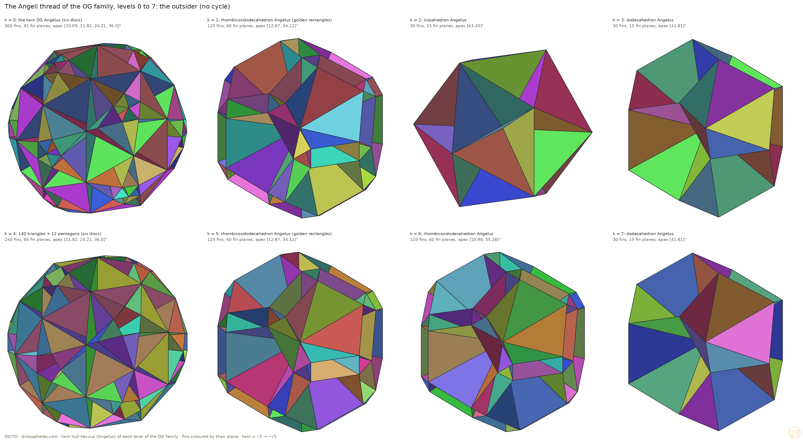
Figure 13.2. The Angeli thread of the OG's family, steps 0 to 7, fins coloured by their plane through the centre. Top: step 0, the twin OG Angelus (300 fins, 81 planes, six discs); step 1, rhombicosidodecahedron pattern (120 fins, 12.87° and 34.12°); step 2, the icosahedron Angelus (30 fins, 63.43°); step 3, the dodecahedron Angelus (30 fins, 41.81°). Bottom: step 4 (240 fins, 66 planes, six discs); step 5, the kind of step 1 again; step 6, rhombicosidodecahedron pattern with new angles 10.98° and 35.28°; step 7, the dodecahedron Angelus. No cycle: the thread visits the Platonic Angeli irregularly (study 2026-11-11-twin-vacuus, render_thread_og.py).
The Angeli. DICTO named the Vacuus forms of the hidden side the Angeli, Angelus for one (Latin angelus, plural angeli): the Vacuus of a Galois twin, as Chapter 4 built it for the five. The name keeps both of the epigraph's words: these forms are made of angles at the centre, fin by fin, and they carry news of the hidden side; it is used for the twin forms only, the Angeli as a family and an Angelus for one, while the Vacuus solids of Chapter 4 keep their own name. The Angelus of step 2 is the Vacuus of the regular icosahedron, 30 congruent fins of 63.43° (cos² = 1/5), and the Angelus of steps 3 and 7 the Vacuus of the regular dodecahedron, 30 fins of 41.81° (cos² = 5/9): the plates of Chapter 4, met again on the far side of a solid that is neither. The twin OG Angelus at step 0 has 300 fins, with apex angles exact in ℚ(√5): cos² = 17/18 + √5/90 (10.09°, 60 fins), 547/648 + 11√5/216 (11.82°, 60), 7/12 + √5/9 (24.21°, 120), and 3/8 + √5/8 = cos² 36° (60 fins, exactly 36°).
The disc law (exact at step 0). The sixty fins of exactly 36° of the twin OG Angelus lie in six planes through the centre, ten in each, and close into six complete decagonal discs, one at right angles to each five-fold axis of the twin's symmetry (the Galois conjugate of the icosahedral group). Over steps 0 to 10 such discs occur at step 0 and at step 4 only (step 4: 90 corners, 140 triangles and 12 pentagons, again six discs of ten 36° fins); these are the two steps whose twin hull uses two symmetry orbits of corners.
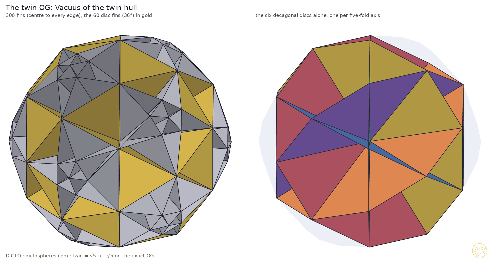
Figure 13.3. The twin OG Angelus. Left: its 300 fins, the 60 disc fins of exactly 36° in gold. Right: the six decagonal discs alone, one at right angles to each five-fold axis, inside a ghost of the twin hull (study 2026-11-11-twin-vacuus, render_twin_discs.py).
One more coincidence is exact. The OG's own faces, carried to the twin points, stay flat (no longer bounding a convex solid), and their Vacuus has the OG's combinatorics, 180 fins; its larger fin angle equals the tip angle of the OG's kite, cos² = 43/72 − √5/8 for both: the kite's tip angle returns as the angle at the centre between the twins of a kite–kite edge. Why it does is open.
The clockwork. The Catalan pentakis dodecahedron, and the dodecahedron with a pyramid of any of five heights on each face (1/20, 1/10, 1/5, 3/10 and 1/φ³ of the face distance), behave quite differently under the same step (pentakis_family.py, pentakis_cycle.py; exact). After four steps each is exactly itself again, Dk+4 = c · Dk as exact point sets in the same orientation, with c in ℚ(√5) depending on the start: c = 3549/9701 + (7712/48505)√5 ≈ 0.7214 for the Catalan solid. Each start is therefore a gnomon of the step, and c is a root of a quadratic over the integers whose other root is the twin's scale per turn: 48 505 c² − 35 490 c + 361 = 0 for the Catalan solid, roots 0.7214 (visible) and 0.0103 (hidden). The twin hulls run a cycle of four through the five: regular dodecahedron, rhombicosidodecahedron pattern, regular icosahedron, rhombicosidodecahedron pattern, and back, scaled; the Angeli thread runs dodecahedron Angelus, rhombicosidodecahedron Angelus, icosahedron Angelus, rhombicosidodecahedron Angelus. The OG, by contrast, has no gnomon polynomial: no step or run of steps of its family is a gnomon (og-margin §3).
Where the outsider meets the clockwork. Scale the Catalan pentakis dodecahedron so that its twelve five-fold corners are those of the OG (by (9 + 3√5)/2). Then all 60 kite planes of the OG are exactly its 60 face planes, and the OG is that solid with its twenty six-fold corners cut off by the twenty hexagon planes, at φ²/3 of their distance from the centre (cut_family.py, exact). A shallower cut leaves pentagons (McCooey's 6-truncated pentakis dodecahedron) and a deeper one overruns; at φ²/3 exactly the cuts touch, each pentagon becomes a kite and the edges fall to two lengths. No depth of cut keeps the four-step clockwork: the OG is its most economical break. And after one step, the two parents have identical twin hulls, equal as exact point sets, so one and the same Angelus (Figure O.1 of the Opening); the OG's step 5 gives that Angelus again, scaled. Traced step by step (cross_trace.py, exact), the OG's twin hulls match the clockwork's at steps 1 and 2 identically and at steps 3, 5 and 7 up to exact scales: the shared Angelus, the Platonic Angeli at steps 2, 3 and 7 and the kite echo all go back to one fact, OG = pentakis dodecahedron cut by twenty hexagon planes.
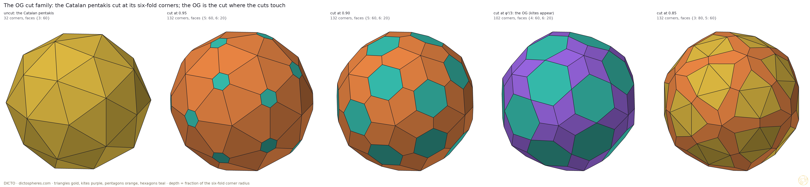
Figure 13.4. The cut family. The Catalan pentakis dodecahedron (left), cut at its six-fold corners at 0.95 and 0.90 of their distance (small and larger hexagons, sixty pentagons), at φ²/3, where the cuts touch and the pentagons become kites (the OG, purple kites and teal hexagons), and at 0.85, where the cuts overrun (study 2026-11-11-twin-vacuus, render_cut_family.py).
Hidden fins and hidden worlds. One step can be watched in four dimensions. Over the candidate points Xj of a step (the poles of the faces of Dk), the inequalities Xj · y − λ ≤ |Xj|² define one convex body in four dimensions whose slices at the heights λ are three-dimensional solids: at the top all cells are present, at the bottom (λ = 0) the next solid. On the twin side the same is done with the twins of the Xj. The 2-faces of this body between two cells are walls, each with a fin from the centre. A wall that is an edge of neither end slice is hidden: its fin is born at one exchange of neighbours and ends at another, both inside the sweep, so neither three-dimensional world ever shows it. DICTO's words for it: "never born and never dying suits angels". On the twin sweeps no fin runs from top to bottom at all; the top and bottom slices share no edge at any step (middle_world.py; computed).
At the first two steps all hidden walls are present together in one slice, 60 of 60 at step 0 and 180 of 180 at step 1: one hidden world between the two visible ones. From step 2 on they are not; the hidden fins live in several bands, crowding towards the bottom world. At steps 7 and 9 whole hidden worlds appear, slices in which every fin is hidden (420 of 420 and 660 of 660 at step 7; 630 of 630 and 930 of 930 at step 9), while at step 5 the hidden fins are still woven among visible ones. One wholly hidden world of step 7 (height 0.0857) has 32 corners, 60 triangles and 90 edges, the combinatorics of the pentakis dodecahedron, with all its triangles tangent to one sphere (to machine precision); it is not the Catalan one (three edge lengths, not two).
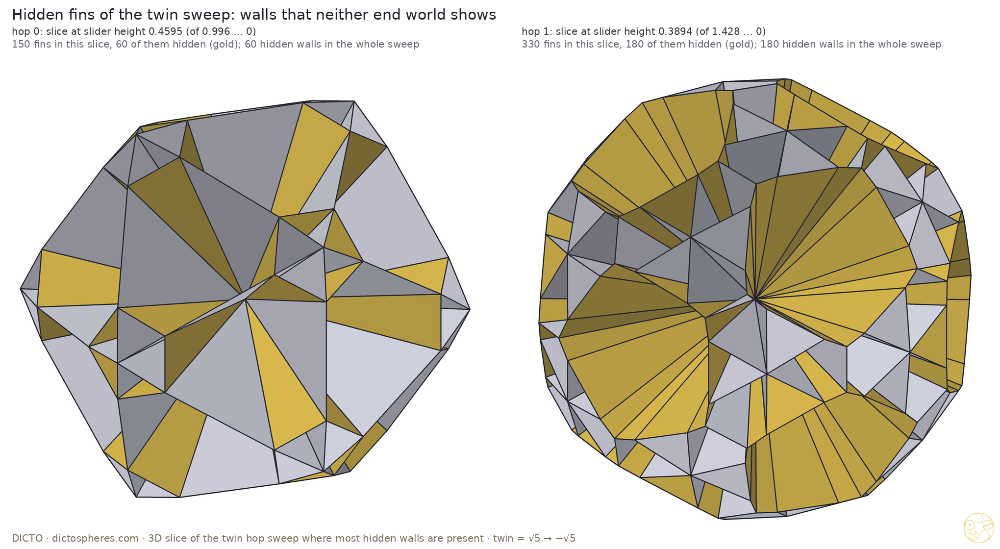
Figure 13.5. Hidden fins of the twin sweep, the walls that neither end world shows (gold). Step 0: the slice at height 0.4595 holds 150 fins, among them all 60 hidden walls of the sweep. Step 1: the slice at height 0.3894 holds 330 fins, among them all 180 hidden walls (study 2026-11-11-twin-vacuus, render_hidden_fins.py; the figure says "hop" for a step).
Claimed, known, open. Known and used: the cubic approximants and their cell sides (Elser and Henley 1985); the triacontahedral vertex and its frequency (Henley 1986; Baake and Grimm 2012); Galois conjugation of icosahedral solids and the Kepler–Poinsot stars; the pentakis dodecahedron and McCooey's 6-truncated pentakis dodecahedron. Claimed in #99: Theorem 3. From the studies, exact in ℚ(√5): the twin hulls at steps 0 to 10 and the regular solids at steps 2, 3 and 7; the Angeli's fin angles and the disc law at step 0; the kite echo; the four-step clockwork with its scales and quadratics for the starts tested; the OG as the touching cut; the identical twin hulls after one step. Computed (slices of the sweep): the hidden fins and hidden worlds. Observed, not proved: the disc law at steps 0 and 4 only (steps 0 to 10); the twin collapse factor of about 0.35 per step. Open: why the kite echo holds; the exact rate of the twins' collapse; whether the disc law holds at any step beyond 10; a polynomial for the limit of the OG's family; the clockwork's scale c as a function of the pyramid height (not monotone in the six heights tried); whether the twin hull of step 0 is a known solid; and, from #99, the alternation of body-centred and simple cubic rungs as a theorem and nests joined across seats.
Epilogue. What has been shown
The book set out to take the five solids apart, put them together, fill space with them and find where they live. Inside them it found Euclid's, Pacioli's and Kepler's inscriptions closing into one periodic cell (Chapter 1), exactly two golden cuts on every solid, the cube's alone needing √2 (Chapter 2), face pyramids that fill space only as the cube's or as the tetrahedron's with the octahedron's, and that rebuild their solids face to face (Chapter 3), the walls between those pyramids, whose angles are read from the polar solid and whose discs from the mirrors (Chapter 4), and five round bodies of smallest width one (Chapter 5). Filling space, the icosahedron came home in shells of AXE, CLEO and FUJI (Chapter 6) and in octahedra with Admiral Caps; with Hart's Dogstar beside the dodecahedron (Chapter 7) every mix of the five filled space (Chapter 8), then all mixes on one cubic grid (Chapter 9), and all five sat nested in every cell of the octet, for ever by thirds (Chapter 10). In four dimensions four of the five fill curved space alone and, of the four reflection groups, all five live together only among the corners of the Queens' family (Chapter 11), the answer to the question of the Opening; beyond four dimensions the golden line stops, and the classical subject closes with Schläfli's count (Chapter 12); a ladder of crystals carries the nest towards five-fold order, and on the hidden side of the OG the regular icosahedron and dodecahedron appear exactly (Chapter 13).
The five at a glance
fills flat space
its face pyramid
Vacuus discs
golden cuts (edge 1)
in four dimensions
on the OG's hidden side
D
with Dogstars (Hart; #42; volume exactly φ/2, its Vacuus 30 open fans on 15 mirror planes, no disc in the sense of #87); with connectors (#47); in one world (#106)
never with face pyramids alone; not with only Cleo-Icos and Antonius (study)
none (15 planes of 2 edges)
1/3; (7 − √5)/22
fills alone: 120-cell
steps 3 and 7
I
in shells (#22); with Admiral Caps in the octet (F21; #44); with connectors (#47)
Sources: Chapters 2–4, 6–9, 11 and 13. All five live together among the corners of every uniform polytope of the Queens' family, and of the four four-dimensional reflection groups only there (Chapter 11, proved), and all five nest in every cell of the octet (#99) and in the EKP cell (#8).
Open problems
(1) The smallest connector kit for all 31 mixes (#47; Chapter 8). (2) Conjecture 1 of #45: the face axes give the largest width of the round bodies (Chapter 5). (3) Conjecture 14 of #92 and a structure theorem for tilings by the tetrahedron's and octahedron's pyramids that are not face to face (Chapter 3). (4) Whether any golden pair other than the octahedron's fills space (Chapter 2). (5) Icosahedra with Cleo-Icos and Antonius in all of space, beyond the radius-3.4 witness; the gyrated octet at spacing 7.22 at the wider window (Chapter 6). (6) Whether the open fans on the central planes of the Dogstar, the rhombic dodecahedron and the rhombic triacontahedron, which pass the census rule of three edges and fail the closed-disc rule of #87, follow one law (Chapter 4). (7) The law of residents beyond the uniform polytopes of the four reflection groups: the duoprisms were not checked (Chapter 11). (8) On the hidden side: why the kite echo holds, the exact rate of the twins' collapse, the disc law beyond step 10, a polynomial for the limit of the OG's family, and whether the twin hull of step 0 is a known solid (Chapter 13).
This book has shown where the icosahedron lives. The Void books take the outsider further: Book Nine, The Golden Ladder, and Book Ten, Alicia in Wonderland: The Red & White Queens, beyond three dimensions, and Book Eleven, A Brief Geometry of Space, takes up why the five-fold order sits where it does, as an open question.
Coda. The Elements
In the Timaeus Plato builds the world from four elements and gives each a solid (53c–56c): to fire the tetrahedron, the sharpest and lightest; to air the octahedron; to water the icosahedron, the least mobile of the three made of triangles; to earth the cube, the most stable, standing on its squares. A fifth construction remained, and "the god used it for the whole" (55c): the dodecahedron, for the heavens. The Epinomis, from Plato's school, names a fifth body, aether, beside fire, water, air and earth (981c), and the tradition that followed gave the dodecahedron to it. Kepler drew the five with the emblems of their elements in the Harmonices Mundi (1619), the dodecahedron with the heavenly bodies.
DICTO's name is the five in his own order, D · I · C · T · O, and since his square of 22 October 2026 each letter has its element's colour. They are the colours of every table of the five in this book.
solid
element (Plato)
DICTO's colour
D
dodecahedron
the whole, aether
violet (138, 92, 196)
I
icosahedron
water
blue (58, 112, 205)
C
cube
earth
green (72, 142, 72)
T
tetrahedron
fire
red (205, 62, 40)
O
octahedron
air
yellow (232, 200, 82)
Plato's elements could change into one another because three of their solids share a face: the triangles of fire, air and water can be taken apart and put together again, while earth, built of squares, stays itself (Timaeus 56d–57c). The book has found the same grouping by other means. The tetrahedron and the octahedron, fire and air, fill space together, and their face pyramids rebuild them face to face (Chapter 3); the cube, earth, fills space alone; the icosahedron, water, is the outsider that fills space only with help, in shells, in the octahedron, in the octet, among the corners of the 600-cell; and the dodecahedron, the whole, holds all the others: Euclid's cube on eight of its corners, the cube's tetrahedron, Pacioli's octahedron and icosahedron, in one cell, in every cell, and on the hidden side of DICTO's outsider.
The book began with Plato's five and an outsider among them, the icosahedron, water, which fills no space by itself, and it asked where all five could be at home together. In flat space all five are at home together with help: in shells, in octahedra with Admiral Caps, beside Dogstars, with a small kit of connectors. One dimension up, all five live together, and of the four four-dimensional reflection groups in one family only: on the corners of the Queens, where the icosahedron is carved out of the White Queen beside the tetrahedron. And the outsider DICTO added, the OG, which is none of the five, leads back to two of them: on the hidden side of its family the twins pass exactly through the regular icosahedron and dodecahedron. Water and the heavens, the two solids that would not fill the room, are found again in the two places this book could not reach by tiling: on the corners of a four-dimensional solid, and behind the golden numbers.
Appendix. Sources by chapter
For every paper drawn on, as published with it: its prior-art and status sections, the sources checked, data and code, and its numbered references (the numbers in square brackets inside the chapters).
#8 The Euclid–Kepler–Pacioli Cell (DICTO DOI: 10.5281/zenodo.23284106), used from Chapter 1
6. Relation to known work, and status
Classical: Euclid's roof construction of the dodecahedron on a cube; the pyritohedrally placed icosahedron in a cube; the stella octangula, the octahedron and the golden-section points on its edges; Pacioli's three golden rectangles; Kepler's great stellated dodecahedron. Periodic crystals with icosahedral or dodecahedral motifs are well known and are of the same symmetry kind (no five-fold crystal axis): α-AlMnSi (Pm-3, the 1/1 cubic approximant, Mackay icosahedra), skutterudites (Im-3, icosahedral cages on 24g (0, y, z)) and type-I clathrates (Pm-3n). Closest of all are the Tsai-type 1/1 approximants: in AuGeYb (Deguchi et al. 2015) and ZnAuYb (Ishimasa 2019) the cluster's third shell is an icosahedron of Yb or Tb atoms on 24g at (0, 0.187, 0.305) and (0, 0.188, 0.301), nearly the EKP cell's 12j point (0, 0.309, 0.191) with y and z exchanged, which is the same icosahedron in the other choice of axes. It is about 2% smaller and slightly irregular (ratios 0.613 and 0.626 against 1/φ = 0.618), in a body-centred cell with other shells around it; the roofs, the fold onto the neighbours and the network are not part of those structures. The only packing study of great stellated dodecahedra found (de Graaf, van Roij & Dijkstra 2011) gives a two-orientation dimer lattice with interlocking spikes and no icosahedra, which differs from (b). Construction-kit and mathematical-art sources (Hart; Bridges archive) show single nested objects, not this periodic cell.
Not found (web-level search, 2026-10-06; reference-library search, 2026-10-15): the fold itself (roof vertices reflected through the cube faces giving the regular icosahedron, each landing on a neighbouring cell's icosahedron vertex), the φ² : φ : 1 cell as a 13-node Pm-3 structure, and the EKP network (b). Checked 2026-10-15: the full text of Koca et al. (2016), the closest paper found. It builds pyritohedral pseudo-icosahedra and their dual pyritohedra whose vertices are points of the simple cubic lattice (a rational parameter, with Fibonacci ratios approaching the regular icosahedron); the regular icosahedron itself, the fold, the 13-node cell and the network do not appear. Not yet checked: structure databases (Bilbao, ICSD) for a 1b + 12j set with these parameters. The cell and the network therefore remain candidates, and this record makes no claim of priority.
7. Reproducibility
Included with this record: data/ekp-cell.json (the 13 node coordinates, every solid as face lists, the Wyckoff parameters and the network rule), data/checks.txt (the 48 tests on this cell, all passing, from scripts/verify-roof-fold.mjs in krp-core v0.16.0, rerun 2026-10-15; the same script now also runs 28 tests on later findings, which pass too) and renders/ (the figures, drawn from the same data). The structure can be built and explored interactively in Kaleidohedra (https://kaleidohedra.dictospheres.com, 3D+ → EKP), part of our open-source apps (github.com/DICTOR-Master/kaleidohedra, DICTO DOI: 10.5281/zenodo.23173809).
Naming
Named by us on 2026-10-06. Euclid for the roofs on the cube (Elements XIII); Kepler for the great stellated dodecahedron, the stella octangula and his nested solids; Pacioli for the three golden rectangles the neighbouring roofs form. Short name: EKP.
References
Euclid, Elements, Book XIII, Prop. 17.
L. Pacioli, De divina proportione, Venice, 1509.
J. Kepler, Harmonices Mundi, Linz, 1619.
U. Betke and M. Henk, Densest lattice packings of 3-polytopes, Comput. Geom. 16 (2000) 157–186.
S. Torquato and Y. Jiao, Dense packings of the Platonic and Archimedean solids, Nature 460 (2009) 876–879.
J. de Graaf, R. van Roij and M. Dijkstra, Dense regular packings of irregular nonconvex particles, Phys. Rev. Lett. 107 (2011) 155501.
M. Koca et al., Quaternionic representations of the pyritohedral group, related polyhedra and lattices, Sultan Qaboos University Journal for Science (2016); arXiv:1506.04600.
K. Deguchi, M. Nakayama, S. Matsukawa, K. Imura et al., Crystal structure of superconducting 1/1 cubic Au-Ge-Yb approximant with Tsai-type cluster, J. Phys. Soc. Jpn. (2015); arXiv:1501.01722.
T. Ishimasa, Icosahedral quasicrystal, 1/1 and 2/1 approximants in Zn-based ternary alloys containing Au and Yb/Tb (2019); arXiv:1910.13078.
International Tables for Crystallography, Vol. A, space groups 47, 65, 200, 202.
#99 Plato's Five in the Octet (DICTO DOI: 10.5281/zenodo.24012439), used from Chapter 1
5. What is known and what is new
Known, and DICTO's own earlier work: the Euclid–Kepler–Pacioli cell (#8) already nests all five Platonic solids in one periodic cell, a simple cubic lattice built on the chain dodecahedron ⊃ cube ⊃ stella octangula ⊃ octahedron ⊃ icosahedron, whose dodecahedra cross the cell walls; the present paper uses a different chain in a different lattice, the octet. Known: Pacioli's icosahedron in the octahedron; the cube on a dodecahedron (Euclid XIII.17) and the classical inscriptions of §2; the octet; the rational approximants and their cell sides (Elser and Henley 1985; the side rule as quoted by Ishimasa 2019); the triacontahedral vertex and its frequency τ⁻⁹ (Henley 1986; Baake and Grimm 2012). New within the sources checked: that the nest's cube is the octahedron's dual cube, and the octet as a lattice carrying all five solids in every one of its cells, octahedra and tetrahedra alike (Theorem 1); the nest for ever by thirds and the golden loop (Theorem 2); the gap pieces of I − D (Sheriff and Lone-star); the nested supercells and the Dodeca-13 at 1/3; the exact count (a) and the seat characterisation and spacing (b, c) of Theorem 3; nests on the ladder and the measured climb. Sources checked: the reference library's full text (251 PDFs, keyword sweep; 25 read in context, including Baake–Grimm 2012, Baake 1999, Dietl–Eschenburg 2016, Hann–Socolar–Steinhardt 2016, Frettlöh 2011, Kramer 2011, Senechal 2004, Moody 2000, Kleman 2013, Ishimasa 2019, Deguchi et al. 2015, Fujita et al. 2013, Pacioli 1509, Kepler 1596 and 1619, Heath's Euclid); web: Wikipedia, Regular icosahedron, Divina proportione, Compound of dodecahedron and icosahedron, Dual polyhedron, Tetrahedral-octahedral honeycomb; the Physical Review Letters abstract of Elser and Henley 1985. Not seen in full: Elser–Henley 1985, Henley 1986, Goldman–Kelton 1993, Elser–Sloane 1987, Katz–Duneau 1986, Kramer–Neri 1984.
References
Euclid, Elements, book XIII (Heath, 1908). — L. Pacioli, De divina proportione (1509). — J. Kepler, Mysterium cosmographicum (1596); Harmonices mundi (1619). — H. S. M. Coxeter, Regular Polytopes, 3rd ed., Dover (1973). — P. Kramer, R. Neri, On periodic and non-periodic space fillings of Em obtained by projection, Acta Crystallographica A40 (1984) 580–587. — V. Elser, C. L. Henley, Crystal and quasicrystal structures in Al-Mn-Si alloys, Physical Review Letters 55 (1985) 2883–2886. — C. L. Henley, Sphere packings and local environments in Penrose tilings, Physical Review B 34 (1986) 797–816. — V. Elser, N. J. A. Sloane, A highly symmetric four-dimensional quasicrystal, Journal of Physics A 20 (1987) 6161–6168. — A. I. Goldman, K. F. Kelton, Quasicrystals and crystalline approximants, Reviews of Modern Physics 65 (1993) 213–230. — G. C. Shephard, Combinatorial properties of associated zonotopes, Canadian Journal of Mathematics 26 (1974) 302–321. — M. Baake, U. Grimm, Mathematical diffraction of aperiodic structures, Chemical Society Reviews 41 (2012) 6821–6843. — T. Ishimasa, Zn–Au–Yb quasicrystal and approximants (2019). — DICTO: The Euclid–Kepler–Pacioli Cell (#8), DICTO DOI 10.5281/zenodo.23284106; Every Mix of the Platonic Solids Fills Space (#47); Reading the Voids (#96); DICTO Dodeca-13; The Golden Ladder (book); UNITY and the Lotus seed (Icosa-13 study).
#88 Every Platonic Solid Has Exactly Two Golden Cuts (DICTO DOI: 10.5281/zenodo.23896439), used from Chapter 2
9. What is known and what is new
Known: truncation at any depth is classical, and Kepler [9] described the Archimedean truncations. The two golden truncated octahedra as shapes are Koca et al.'s non-regular truncated octahedra x = τ and 1/τ [4] (the semi-uniform truncated octahedron [5]), as #48 [6] already noted; that T(x) and T(1/x) fill space together is #48's Theorem 4. The series of sections of the regular four-dimensional solids are Stott's [8]. Truncated icosahedra with two edge lengths, whose hexagons are truncated triangles, are familiar from fullerene chemistry, where the C₆₀ molecule has two bond lengths (not in golden ratio). Non-uniform truncations of the Platonic and Archimedean solids have been studied (Zefiro [11]). Lalvani's patent [12] speaks of a "φ-truncated icosahedron" in a building system without defining its depth or faces, so we cannot say whether it is one of the ten.
New within these checks: the rule that every original face be golden and its exactly two solutions for each Platonic solid, with the eight Golden Cut solids other than the octahedral pair; the census of Theorem 1; the observation that the golden pairs are sections of the 24-cell and the 120-cell at the same fractions 1/φ² and 1/φ (Theorem 3), and that White Knight, the TI Star core and Icosaxes are further 120-cell sections with golden-field ratios; and the cutting depths of Section 7. Where an earlier source turns out to describe a member, that member stays in DICTO's family, found independently, with the earlier source cited.
Sources checked (2–3 November 2026). Reference library (ask-library, meaning search, top hits per query): one query under DICTO's earlier informal name for the shape; "truncated triangle face semiregular hexagon alternating sides"; "hexagonal faces with alternating edge lengths golden ratio polyhedron"; "polyhedra with ditrigonal or 3-fold symmetric hexagonal faces"; "golden hexagon icosahedral polyhedron faces"; "truncated tetrahedron non-regular hexagon faces golden"; "truncation of Platonic solid at golden ratio depth"; "truncated icosahedron hexagons with edge lengths in golden ratio"; "golden truncated tetrahedron non-regular hexagons"; "truncated cube octagons alternating edge lengths golden ratio"; "truncated dodecahedron edges trisected decagons"; "non-Archimedean truncation depth of polyhedra family parameter"; "polyhedra with two edge lengths in golden ratio icosahedral"; "truncated octahedron golden ratio space filling pair". Hits read for relevance: Kepler 1619 (pp. 72, 88, 89, 271–273); Pacioli 1509 (pp. 107, 115); Goldberg 1937; Al-Siyabi, Koca and Koca 2020; Johnson 1966; Senechal 2004; Betke–Henk 2000; Torquato–Jiao 2009; Fedorov 1885 ch. 13; Boole Stott 1900. Also: DICTO #48 and its references; Koca et al. 2015 (read in full: eq. 49 is the family T(x) of non-regular truncated octahedra; no golden truncations of the other Platonic solids) and Al-Siyabi, Koca and Koca 2020 (read in full: the uniform Archimedean solids as orbits of D6; no golden truncations); Polytope Wiki; DICTO #59, #63, #65. Web: Wikipedia "Truncated octahedron", "Truncated cube", "Ditrigonal polyhedron", "Truncated triangular trapezohedron"; MathWorld "Truncation"; Zefiro 2011 (Visual Mathematics); US patent 4,723,382 (Google Patents text).
References
[1] DICTO, "The FUJI Family", paper #20, DICTO DOI: 10.5281/zenodo.23357896 (2026).
[2] DICTO, "DICTO Solids: exact geometry", dataset, version 7, DICTO DOI: 10.5281/zenodo.23850845 (concept 10.5281/zenodo.23606967) (2026).
[3] DICTO, "Aristotle's Pyramid", paper #44, DICTO DOI: 10.5281/zenodo.23529497 (2026).
[4] N. O. Koca, M. Koca, A. Al-Mukhaini, A. Al-Qanobi, "Quaternionic representations of the pyritohedral group, related polyhedra and lattices", arXiv:1506.04600 (2015), eq. 49; published as "Symmetry of the pyritohedron and lattices", SQU Journal for Science 21(2) (2016) 139–149, doi:10.24200/squjs.vol21iss2pp139-149.
[5] Polytope Wiki, "Truncated octahedron" (semi-uniform truncated octahedron), https://polytope.miraheze.org (viewed 3 November 2026).
[6] DICTO, "The Golden Split: Icosahedra, Unborns and AXE Become Two Convex Space-Fillers", paper #48, DICTO DOI: 10.5281/zenodo.23596362 (2026).
[7] DICTO, "The Red Queen 120-cell: Aristotle's five pyramids as the cores of the regular four-dimensional solids", paper #65, DICTO DOI: 10.5281/zenodo.23716140 (2026).
[8] A. Boole Stott, "On certain series of sections of the regular four-dimensional hypersolids", Verhandelingen der Koninklijke Akademie van Wetenschappen te Amsterdam, Eerste Sectie, 7, no. 3 (1900).
[9] J. Kepler, Harmonices Mundi, Linz (1619), Book II.
[10] DICTO, "The Icosaxes Hexa: Bloom, Bud and Seed", paper #59, DICTO DOI: 10.5281/zenodo.23677485 (2026).
[11] L. Zefiro, "Vertex- and edge-truncation of the Platonic and Archimedean solids leading to vertex-transitive polyhedra", Visual Mathematics 13(2) (2011), https://www.mi.sanu.ac.rs/vismath/zefirosept2011/_truncation_Archimedean_polyhedra.htm.
[12] H. Lalvani, "Building structures based on polygonal members and icosahedral", US patent 4,723,382 (filed 1986, granted 1988).
#90 Golden on the Octahedron, Silver on the Cube: Six Dimensions and the Golden Cut Cubes (DICTO DOI: 10.5281/zenodo.23931136), used from Chapter 2
9. Prior art and what is new
The icosahedral cut-and-project from Z6, with the rhombic triacontahedron as window, is due to Kramer and Neri, Duneau and Katz, and Elser [3–5]; surveys by Baake and Moody are in the reference library [10, 11]. The projection of E8 to H4 through the icosians is due to Elser and Sloane and to Moody and Patera [6, 7]. Koca and co-workers built many icosahedral polyhedra by projecting D6 [12] and studied the pyritohedral group and its polyhedra [13]. Cube-symmetric Fibonacci products, the square and cubic Fibonacci tilings, are due to Lifshitz [8]. The compound of two icosahedra is classical [9]. That number fields constrain quasicrystals (Q(√5) icosahedral, Q(√2) octagonal) is standard.
New within these checks. The field obstruction for golden cuts (Main Theorem); the Galois pairing of the two Golden Cut Cubes (Theorem 1); the six-dimensional lifts with and without golden inflation (Theorem 2); the cube × octahedron sections with the cut-equals-shadow selection of Icosaxes and of the silver truncated cube (Theorem 4). The golden cuts, Icosaxes and Unborn Axes are DICTO's [1]. Where an earlier source describes one of these solids, it stays in DICTO's family, found independently, with the source credited.
Sources checked (3 November 2026). Reference library (bridges/ and cited/; the Baake and Moody surveys, Al-Siyabi–Koca–Koca 2020, Koca et al. 2015) and a light web search (icosahedral cut-and-project, icosians and E8, square and cubic Fibonacci tilings, compound of two icosahedra, golden truncation of the cube). Not found: the field obstruction for golden cuts, the Galois pairing of the Golden Cut Cubes, or the cube × octahedron sections with cut-equals-shadow. The search is not exhaustive.
References
[1] DICTO, "Every Platonic Solid Has Exactly Two Golden Cuts: the DICTO-Kepler Golden Truncations and the DICTO-GTT-Solids", paper #88, DICTO DOI: 10.5281/zenodo.23896439 (2026).
[2] DICTO, "All Five Golden Pairs Are Slices of Four-Dimensional Solids", paper #89, DICTO DOI: 10.5281/zenodo.23917931 (2026).
[3] P. Kramer, R. Neri, "On periodic and non-periodic space fillings of Em obtained by projection", Acta Crystallographica A 40 (1984) 580–587.
[4] M. Duneau, A. Katz, "Quasiperiodic patterns", Physical Review Letters 54 (1985) 2688–2691.
[5] V. Elser, "Comment on 'Quasicrystals: a new class of ordered structures'", Physical Review Letters 54 (1985) 1730.
[6] V. Elser, N. J. A. Sloane, "A highly symmetric four-dimensional quasicrystal", Journal of Physics A 20 (1987) 6161–6168.
[7] R. V. Moody, J. Patera, "Quasicrystals and icosians", Journal of Physics A 26 (1993) 2829–2853.
[8] R. Lifshitz, "The square Fibonacci tiling", Journal of Alloys and Compounds 342 (2002) 186–190.
[9] J. Skilling, "Uniform compounds of uniform polyhedra", Mathematical Proceedings of the Cambridge Philosophical Society 79 (1976) 447–457.
[10] M. Baake, "A guide to mathematical quasicrystals" (1999), arXiv:math-ph/9901014.
[11] R. V. Moody, "Model sets: a survey" (2000), arXiv:math/0002020.
[12] A. Al-Siyabi, N. O. Koca, M. Koca, "Icosahedral polyhedra from D6 lattice and Danzer's ABCK tiling", Symmetry 12 (2020) 1983, arXiv:2003.13449.
[13] N. O. Koca, M. Koca, A. Al-Mukhaini, A. Al-Qanobi, "Quaternionic representations of the pyritohedral group, related polyhedra and lattices", arXiv:1506.04600 (2015).
[14] DICTO, "The Golden Split: Icosahedra, Unborns and AXE Become Two Convex Space-Fillers", paper #48, DICTO DOI: 10.5281/zenodo.23596362 (2026). View in app: https://kaleidohedra.dictospheres.com/?open=octet:goldenSplit
[15] DICTO, "The Web of Bonds: How the DICTONIC Bonds Hand Over", paper #52, DICTO DOI: 10.5281/zenodo.23629252 (2026).
[16] DICTO, "The Global Web of Bonds: How Bonds Hand Over Across Crystal Networks", paper #53, DICTO DOI: 10.5281/zenodo.23631140 (2026). View in app: https://kaleidohedra.dictospheres.com/?open=globalWeb
[17] DICTO, "The Delian Bond: Samson, Delilah and the Octet Between Kepler's Rhombic Dodecahedron and the Cube", paper #51, DICTO DOI: 10.5281/zenodo.23606828 (2026).
[18] DICTO, "From the Octet to Every Stacking: the Web of Bonds", paper #58, DICTO DOI: 10.5281/zenodo.23665944 (2026).
[19] DICTO, "Core Cycles: when the cores of DICTO's star chains alternate", paper #81, DICTO DOI: 10.5281/zenodo.23846772 (2026).
[20] DICTO, "One Turn Is a Gnomon: the Golden Cycle Step by Step, and the Polar of the Keyed Pair", paper #54, DICTO DOI: 10.5281/zenodo.23633365 (2026).
#44 Aristotle's Pyramid (DICTO DOI: 10.5281/zenodo.23529497), used from Chapter 3
8. Prior art, and the status of each result
Known, credited: the history of Aristotle's claim, the near miss, Bradwardine's remark on the icosahedron's twenty tetrahedra and Lagarias and Zong's note that they are not regular, Paul of Middelburg's argument from Euclid's Book XIII, Maurolico's tiling and the 60° rhombohedron of two tetrahedra and an octahedron (Lagarias and Zong [1]); Dehn's angle argument and the geodetic-angle theorems (Conway, Radin and Sadun [4]); the tiling of the cube's face pyramids (six make a cube); the dodecahedron–Dogstar tiling (Hart [6]); the icosahedron in the octahedron at the golden section (Pacioli; the Jitterbug); the Cleo-Icos itself, Mackay's unit tetrahedron and a pyramid of Hypsicles (as credited in [3]).
DICTO's earlier work, cited: the Cleo-Icos and Antonius filling and the counting argument for the Cleo-Icos alone (#20 [3]); the exact Sunstar Lattice (#42 [7]); the icosahedral octet (F21 [8]).
Proved here in general: the main theorem, with Lemmas 1 and 2, and Corollaries 1–3 (Corollary 3 with the filling of [3]). The principle behind it is classical: a polyhedron that tiles space has Dehn invariant zero (Debrunner [9]; Lagarias and Moews [10]); Lemma 1 with the counting map is a self-contained proof of the special case needed here, and what is new is the classification of the face-pyramid sets.
Proved for the cases built (exact checks): the angles of Table 1, the octet cell and its 8 + 8 pyramids, the slabs that let cube pyramids join the octet, the golden rhombohedron's split and Antonius's angles.
Observed numerically: only the PSLQ search of angle_relations.py, which finds no integer relation among π, α, θD, θI; it is evidence only, Lemma 2 being the proof.
In the sources checked (the full text of the 81 library sources with a text layer listed in the appendix, searched on 21 October 2026; the library's 175 link-only entries were not searched) we did not find a classification of the tilings by the face pyramids of the Platonic solids.
Data and reproducibility
In studies/2026-10-21-aristotle-pyramids: pyramid_checks.py (exact arithmetic in ℚ(√5) with Python fractions; angles handled through cos² and the sign of cos; log pyramid-checks.log, 47 PASS, no FAIL): the solids' dihedral angles; every base and side angle of the five pyramids; the facts used in Lemma 2; the test over all 31 sets; the octet cell and its 8 + 8 pyramids; the slabs of the octet patch; the golden rhombohedron, Cleo-Icos, Antonius and their angles. angle_relations.py (angle-relations.log): the angles to 80 digits and a PSLQ search finding no integer relation among π, α, θD, θI. Figures: aristotle_figs.py (float copies of the exact solids into the viewer of studies/2026-10-19-five-fold-octet), jewel-shots.mjs (Playwright, 2× pixel ratio) and aristotle_compose.py. The 2,187-piece patch of Cleo-Icos and Antonius is that of [3].
References
J. C. Lagarias, C. Zong, Mysteries in packing regular tetrahedra, Notices Amer. Math. Soc. 59 (2012) 1540–1549, doi:10.1090/noti918 (quoting Aristotle, On the Heavens, tr. W. K. C. Guthrie, Loeb Classical Library 338, 1939, 306b).
DICTO, AXE, CLEO and FUJI, #19, DICTO DOI: 10.5281/zenodo.23351291.
DICTO, The FUJI Family, #20, DICTO DOI: 10.5281/zenodo.23357896 (§5.6 the Cleo-Icos, §5.7 Cleo-Icos and Antonius fill space).
J. H. Conway, C. Radin, L. Sadun, On angles whose squared trigonometric functions are rational, Discrete Comput. Geom. 22 (1999) 321–332; arXiv:math-ph/9812019 (Theorems 1–3).
Euclid, The Thirteen Books of the Elements, tr. T. L. Heath, vol. III (Books X–XIII), Cambridge (1908), Book XIII, Proposition 17.
G. W. Hart, Tetrahedral stellations of the dodecahedron (1996), https://www.georgehart.com/virtual-polyhedra/stellations-dodecahedron-tetrahedral.html (stellation 8).
DICTO, The DICTO Sunstar, #42, DICTO DOI: 10.5281/zenodo.23497702.
DICTO, Kaleidohedra by DICTO, release v2026.10.11-octet, finding F21 "The icosahedral octet", DICTO DOI: 10.5281/zenodo.23284390.
H. E. Debrunner, Über Zerlegungsgleichheit von Pflasterpolyedern mit Würfeln, Arch. Math. 35 (1980) 583–587, doi:10.1007/BF01235384 (link only; not read).
J. C. Lagarias, D. Moews, Polytopes that fill ℝn and scissors congruence, Discrete Comput. Geom. 13 (1995) 573–583, doi:10.1007/BF02574064; acknowledgment of priority, 14 (1995) 359–360, doi:10.1007/BF02570711 (link only; not read).
Appendix. The reference library searched
The library's manifests list 269 entries, of which 94 have a local file; these give the 81 distinct sources with a text layer listed below and 13 page images. The full text of the 81 sources was searched on 21 October 2026 for: Aristotle, De Caelo, On the Heavens, pyramid, fill space, space-filling, tile space, Dehn, dihedral angle, central pyramid, face pyramid, Maurolico, octet, tetrahedral-octahedral, golden rhombohedron, Cleo and Antonius. The relevant hits are Lagarias and Zong [1] (the history above), Conway, Radin and Sadun [4], the Dehn invariants of icosahedral tiles in Ogievetsky and Papadopolos, the tetrahedral-octahedral honeycomb (Wikipedia), and golden rhombohedra in Senechal, Dietl and Eschenburg and Kabai's demonstrations (all in the list below); none treats the face pyramids of the Platonic solids as tiles. The 13 page images without a text layer (the patents of Fuller, Snelson, Pearce, Baer, Hogan, Bergman and Lalvani, and Fedorov 1885) and the 175 link-only entries were not searched.
Author(s)
Year
Title
Luca Pacioli, Leonardo da Vinci (ill.)
1509
Divina proportione
Albrecht Dürer
1525
Underweysung der Messung mit dem Zirckel und Richtscheyt
The Thirteen Books of Euclid's Elements, Vol. III (Books X-XIII)
M. Goldberg
1937
A class of multi-symmetric polyhedra
Haresh Lalvani
1990
Transformational part-count in layered octahedral-tetrahedral truss configurations (NASA TM-102635)
P. W. Messer
1995
Stellations of the rhombic triacontahedron and beyond
M. Baake, F. Gähler
1998
Symmetry structure of the Elser-Sloane quasicrystal
T. C. Hales
1998
An overview of the Kepler conjecture
M. Baake
1999
A guide to mathematical quasicrystals
O. Ogievetsky, Z. Papadopolos
1999
On Quasiperiodic Space Tilings, Inflation and Dehn Invariants
U. Betke, M. Henk
1999
Densest lattice packings of 3-polytopes
Z. Papadopolos, O. Ogievetsky
1999
On Inflation Rules for Mosseri-Sadoc Tilings
J. H. Conway, C. Radin, L. Sadun
1999
On angles whose squared trigonometric functions are rational
R. V. Moody
2000
Model sets: a survey
I. Hafner, T. Zitko
2002
Rhombic polyhedra: from dissection of the cube to space filling with prolate rhombohedra and rhombic dodecahedra of the second kind
M. Senechal
2004
Donald and the golden rhombohedra
Wikipedia contributors (2007 mirror)
2007
Kyushindo (2007 version)
S. Kabai
2007-2015
Wolfram Demonstrations: 54-Faced Space-Filling Polyhedron (2007), Golden Octet Truss (2007), A Rhombic Dodecahedron Made of Rhombic Triacontahedra (2008), Relating a Rhombic Triacontahedron and a Rhombic Dodecahedron (2008), Cluster of 14 Rhombic Triacontahedra (2015)
K. Bezdek, Z. Lángi, M. Naszódi, P. Papez
2007
Ball-polyhedra
M. Koca, M. Al-Ajmi, N. O. Koca
2009
Grand antiprism and quaternions
M. Koca, M. Al-Ajmi, N. O. Koca
2009
Quaternionic representation of snub 24-cell and its dual polytope derived from E8 root system
S. Torquato, Y. Jiao
2009
Dense packings of polyhedra: Platonic and Archimedean solids
B. Grünbaum
2010
The Bilinski dodecahedron, and assorted parallelohedra, zonohedra, monohedra, isozonohedra and otherhedra
P. Kramer
2010
Gateways towards quasicrystals
A. M. Cutler, E. Schulte
2011
Regular polyhedra of index two, I
D. Frettlöh
2011
Icosahedral tilings in R3: the ABCK tilings (draft chapter)
J. Koskinen
2011
Unusual tilings and transformations
J. de Graaf, R. van Roij, M. Dijkstra
2011
Dense regular packings of irregular non-convex particles
M. Koca, N. O. Koca, M. Al-Ajmi
2011
Branching of the W(H4) polytopes and their dual polytopes under the Coxeter groups W(A4) and W(H3) represented by quaternions
M. Koca, N. O. Koca, M. Al-Barwani
2011
Snub 24-cell derived from the Coxeter-Weyl group W(D4)
T. Etzion
2011
Product constructions for perfect Lee codes
A. Garber, A. Gavrilyuk, A. Magazinov
2012
The Voronoi conjecture for parallelohedra with simply connected delta-surface
J. C. Lagarias, C. Zong
2012
Mysteries in packing regular tetrahedra
M. Baake, U. Grimm
2012
Mathematical diffraction of aperiodic structures
M. Koca, N. O. Koca, R. Koc
2012
Affine Coxeter group Wa(A4), quaternions, and decagonal quasicrystals
P. F. Damasceno, M. Engel, S. C. Glotzer
2012
Crystalline assemblies and densest packings of a family of truncated tetrahedra and the role of directional entropic forces
R. Gabbrielli, Y. Jiao, S. Torquato
2012
Families of tessellations of space by elementary polyhedra via retessellations of face-centered-cubic and related tilings
S. Torquato, Y. Jiao
2012
Organizing principles for dense packings of nonspherical hard particles: not all shapes are created equal
M. Kléman
2013
Defects in quasicrystals, revisited: I-flips, approximants, phason defects
N. Fujita, H. Takano, A. Yamamoto, A.-P. Tsai
2013
Cluster packing geometry for Al-based F-type icosahedral alloys
P.-P. Dechant, J. Wardman, T. Keef, R. Twarock
2014
Viruses and fullerenes: symmetry as a common thread?
A. Campello, G. C. Jorge, J. E. Strapasson, S. I. R. Costa
2015
Perfect codes in the lp metric
K. Deguchi, M. Nakayama, S. Matsukawa, K. Imura et al.
2015
Crystal structure of superconducting 1/1 cubic Au-Ge-Yb approximant with Tsai-type cluster
M. Baake, D. Damanik, U. Grimm
2015
What is aperiodic order?
M. Firsching
2015
Computing maximal copies of polytopes contained in a polytope
N. O. Koca, M. Koca, A. Al-Mukhaini, A. Al-Qanobi
2015
Quaternionic representations of the pyritohedral group, related polyhedra and lattices
R. Twarock, M. Valiunas, E. Zappa
2015
Orbits of crystallographic embedding of non-crystallographic groups and applications to virology
A. T. Cadotte, J. Dshemuchadse, P. F. Damasceno, R. S. Newman, S. C. Glotzer
2016
Self-assembly of a space-tessellating structure in the binary system of hard tetrahedra and octahedra
C. Hann, J. E. S. Socolar, P. J. Steinhardt
2016
Local growth of icosahedral quasicrystalline tilings
R. M. K. Dietl, J.-H. Eschenburg
2016
The icosahedral quasiperiodic tiling and its self-similarity
L. Montejano, E. Roldán-Pensado
2017
Meissner polyhedra
A. Stergiou
2018
Bootstrapping hypercubic and hypertetrahedral theories in three dimensions
A. Garber
2019
Voronoi conjecture for five-dimensional parallelohedra
D. Poland, S. Rychkov, A. Vichi
2019
The conformal bootstrap: theory, numerical techniques, and applications
R. Twarock, A. Luque
2019
Structural puzzles in virology solved with an overarching icosahedral design principle
T. Ishimasa
2019
Icosahedral quasicrystal, 1/1 and 2/1 approximants in Zn-based ternary alloys containing Au and Yb/Tb
A. Al-Siyabi, N. O. Koca, M. Koca
2020
Icosahedral Polyhedra from D6 lattice and Danzer's ABCK tiling
M. Koca, R. Koc, N. O. Koca, A. Al-Siyabi
2020
Icosahedral tiling with dodecahedral structures
N. O. Koca, R. Koc, M. Koca, A. Al-Siyabi
2020
Dodecahedral Structures with Mosseri-Sadoc Tiles
V. R. Krishnamurthy, E. Akleman, S. G. Subramanian et al.
2020
Bi-axial woven tiles: interlocking space-filling shapes based on symmetries of bi-axial weaving patterns
V. R. Krishnamurthy, E. Akleman, S. G. Subramanian, M. Ebert, J. Cui, C. Fu, C. Starrett
2022
Geometrically interlocking space-filling tiling based on fabric weaves
B.-X. Lao, S. Rychkov
2023
3D Ising CFT and exact diagonalization on icosahedron: the power of conformal perturbation theory
D. Smith, J. S. Myers, C. S. Kaplan, C. Goodman-Strauss
2023
An aperiodic monotile
R. Hynd
2023
The perimeter and volume of a Reuleaux polyhedron
R. Akpanya et al.
2024
Topologically interlocking blocks inside the tetroctahedrille
I. J. Dejter, L. R. Fuentes, C. A. Araujo
2025
Perfect truncated-metric codes in lattice graphs and superlattice graphs
S. Rychkov
2025
Conformal bootstrap: from Polyakov to our times
M. Kovačević
2026
An isodiametric theorem and lattice diameter-perfect codes in A3
R. Al Raisi, N. O. Koca, M. Koca, R. Koc
2026
Modified Mosseri-Sadoc tiles from D6
Wikipedia contributors
2026
Kyūshindō
Wikipedia contributors
2026
Kenshiro Abbe
Wikipedia contributors
2026
Mitsusuke Harada
Wikipedia contributors
2026
n-flake (Sierpinski icosahedron)
Wikipedia contributors
2026
Fullerene
Wikipedia contributors
2026
Goldberg polyhedron
Wikipedia contributors
2026
Tetrahedral-octahedral honeycomb (incl. the gyrated form)
Wikipedia contributors
2026
Crystal twinning (incl. the spinel law)
#77 Face to Face: A New Law of Aristotle's Pyramids (DICTO DOI: 10.5281/zenodo.23779962), used from Chapter 3
5. What is new and what is known
Known, credited: the face pyramids and their angles; Maurolico's octet and the tetrahedron–octahedron tilings (Lagarias and Zong 2012); the independence of π, α, θD and θI through the Splitting Theorem of Conway, Radin and Sadun (1999), as used in #44; the Mosseri–Sadoc tiles (Mosseri and Sadoc; Papadopolos and Ogievetsky 1999); the pentagonal pyramid t1 + t2 + t1 (Koca, Koc, Koca and Al-Siyabi 2020) and hence the J13 of Theorem 2; the convex deltahedra (Freudenthal and van der Waerden 1947; Johnson 1966).
New, proved here: Theorem 1, the classification of face-to-face tilings by face pyramids; it reduces them to tilings by whole Platonic solids. As far as the sources checked show, this classification has not been stated before; its proof is elementary once #44's Lemma 2 is in hand.
Searched here: Theorem 2, the six-piece level of the search. Its result is a screening, complete to two pieces and restricted beyond (Section 4); it found nothing new.
Not decided: which tetrahedron–octahedron tilings exist beyond the octet and its stackings; gluings of seven or more of DICTO's pieces, and gluings that cover equilateral faces before the others.
6. In the app
Kaleidohedra, DICTO → 3D+ → Aristotle's Pyramid (kaleidohedra.dictospheres.com/?open=aristotle) shows the five pyramids drawn apart from their solids, the cube's pyramids and the octet cut up, which are the two kinds of tiling of Theorem 1, and the golden fix with Antonius of Corollary 1.
#92 Aristotle's Pyramid in Layers (DICTO DOI: 10.5281/zenodo.23931608), used from Chapter 3
8. Prior art, and the status of each result
Known, credited. The octet tiling (Maurolico 1529; Coxeter's alternated cubic honeycomb [14]; Fuller's octet truss [13]) and the classical correspondence between close-packed sphere stackings and layer sequences (Kepler's stacked spheres [15]; Barlow [1]; Conway and Sloane [16]; every Barlow stacking is a densest packing of equal spheres by Hales's proof of the Kepler conjecture [17]); the gyrated (twisted) tetrahedral-octahedral honeycomb and its triangular orthobicupola vertex figure (Grünbaum's list of uniform tilings [4]; the Wikipedia article [5]). Gabbrielli, Jiao and Torquato [2] state that the Barlow tilings are the only face-to-face tilings by regular tetrahedra and octahedra (citing only Barlow [1]), that nonperiodic ones vastly outnumber the periodic, and that tilings with planes of faces allow arbitrary sliding; they and Conway, Jiao and Torquato [3] give tilings that are not face to face, by tetrahedra and octahedra of different sizes. The cut of a cube into its inscribed tetrahedron and four corners is classical; in this series the cube is the end t = 1 of #51's Delian bond [11] and the λ = 3/8 member of #86 [12]. The face pyramids, the counting map and the equal numbers are from #44 [6]. The reduction from pyramids to whole solids with two tetrahedra and two octahedra round every edge is #77's Theorem 1 [10]. The c/h words and the octet layers stacked on every word are from #40 and #57 [8, 9].
Proved here. Main theorem (a) and (b) with Lemmas 3–5, and (c) with Propositions 6–8 and Corollary 9: for (a) we did not find a proof in the sources checked and give a self-contained one; Propositions 6–8 and Corollary 9 in their pyramid form are new in the sources checked. Lemmas 1 and 2 and §2 re-prove #77's Theorem for T and O. Version 3: Theorem 12 (computer-assisted: an exhaustive search with a float overlap test whose smallest overlap, 0.2016, is far above rounding) and Corollary 13 are new in the sources checked. Proposition 11 is a computation on the periodic stackings listed. That J27 and octahedra fill space is credited to MathWorld [22]. Conjecture 14 is a conjecture only.
Checked exactly. The pyramids' lengths, faces, dihedral angles and volumes; the nine edge combinations allowed by the angles; the four stacking patches and their pyramid cuts; the cube's two cuts (tiling_checks.py, 46 PASS, 0 FAIL). Integer and combinatorial: the centres of Proposition 11 (j27_tiling.py, scipy milp; the solutions checked again tetrahedron by tetrahedron and octahedron by octahedron). Computer-assisted, with a margin: Theorem 12 (reversed_general.py, reversed_search.py; numpy separating-axis test, tolerances 10−7 to 10−11, smallest overlap 0.2016). Found by search, then identified exactly: the two vertex stars (vertex_stars.py, floating point with tolerance 10−9; the stars found are identified by their neighbour dot products, all rationals with denominator 6).
Sources searched. The full text of the 246 PDF files of DICTO's reference library (4 November 2026) for Barlow, tetrahedra and octahedra, tetrahedral-octahedral, octet truss, Conway–Torquato and gyrated. Relevant hits: Gabbrielli, Jiao and Torquato [2], the Wikipedia article [5], Lagarias and Zong [7]; also Torquato and Jiao on dense packings, Cadotte et al. on binary tetrahedron–octahedron systems, Akpanya et al. on interlocking blocks of the tetroctahedrille, and Ganesh and Nasr on randomly stacked solids, none of which classifies the tilings. A web search found no published proof of the face-to-face classification. For Version 3 (7 November 2026), the full text of the 259 PDF files of the library was searched for orthobicupola, anticuboctahedr, gyrated tetrahedral, Johnson solid and gyrobifastigium. The hits on the J27 were the Wikipedia articles Tetrahedral-octahedral honeycomb [5] and Convex uniform honeycomb, which name it only as the vertex figure of the gyrated honeycomb. A web search for “triangular orthobicupola octahedra space-filling honeycomb” found MathWorld's entry [22] and the Wikipedia article “Triangular orthobicupola”, which says only that its dual, the trapezo-rhombic dodecahedron, is a plesiohedron (both pages read on 7 November 2026).
Data and reproducibility
In studies/2026-11-04-pyramid-tilings: tiling_checks.py (exact: sympy for Part A, integer and rational coordinates (a/2, b√3/6, c√6/3) for the stackings, fractions for the cube; log data/tiling-checks.log, patch summary data/barlow-patches.json); vertex_stars.py (data/vertex-stars.log, data/vertex-stars.json); figs.py (matplotlib, float copies of the same constructions). Run with Python 3, sympy and numpy. Section 5: studies/2026-11-04-cuboctahedron-pyramids, co_pyramid_checks.py (exact integers and fractions; log data/co-pyramid-checks.log) and j27_tiling.py (Proposition 11; the whole-octahedron condition and the boxes ABABAB and ABCACB are run as recorded in the study README). Section 6: studies/2026-11-04-reversed-neighbour, reversed_search.py and reversed_general.py T|C6 (numpy, scipy), results in the study README. Run on 7 November 2026 to check: T gives 89 nodes, 90 rejections and smallest overlap 0.20160; C6 gives 7 nodes, 8 rejections and smallest overlap 0.44444.
References
W. Barlow, Probable nature of the internal symmetry of crystals, Nature 29 (1883) 205 (the second instalment read in part, in the library scan).
R. Gabbrielli, Y. Jiao, S. Torquato, Families of tessellations of space by elementary polyhedra via retessellations of face-centered-cubic and related tilings, Phys. Rev. E 86 (2012) 041141, doi:10.1103/PhysRevE.86.041141.
J. H. Conway, Y. Jiao, S. Torquato, New family of tilings of three-dimensional Euclidean space by tetrahedra and octahedra, Proc. Natl. Acad. Sci. USA 108 (2011) 11009 (cited from [2]; not read).
B. Grünbaum, Uniform tilings of 3-space, Geombinatorics 4 (1994) 49–56 (read; it lists uniform tilings only, face to face, and notes uncountably many non-uniform ones from free slab orientations).
Wikipedia, Tetrahedral-octahedral honeycomb (copy in the library, 2026), including the gyrated tetrahedral-octahedral honeycomb.
DICTO, "Aristotle's Pyramid", paper #44, DICTO DOI: 10.5281/zenodo.23529497.
J. C. Lagarias, C. Zong, Mysteries in packing regular tetrahedra, Notices Amer. Math. Soc. 59 (2012) 1540–1549, doi:10.1090/noti918.
DICTO, "The DICTO OG Family on Every Stacking", paper #40, DICTO DOI: 10.5281/zenodo.23490114.
DICTO, "The Rule of Halves: the Holes of Every Close-Packed Stacking", paper #57, DICTO DOI: 10.5281/zenodo.23647898.
DICTO, "Face to Face: A New Law of Aristotle's Pyramids", paper #77, DICTO DOI: 10.5281/zenodo.23779962.
DICTO, "The Delian Bond: Samson, Delilah and the Octet Between Kepler's Rhombic Dodecahedron and the Cube", paper #51, DICTO DOI: 10.5281/zenodo.23606828.
DICTO, "The HexOct Family", paper #86, DICTO DOI: 10.5281/zenodo.23896076.
R. B. Fuller, Synergetics: Explorations in the Geometry of Thinking, Macmillan, New York (1975), the octet truss.
H. S. M. Coxeter, Regular Polytopes, 3rd ed., Dover, New York (1973).
J. Kepler, Strena seu de nive sexangula, Frankfurt (1611).
J. H. Conway, N. J. A. Sloane, Sphere Packings, Lattices and Groups, 3rd ed., Springer (1999).
T. C. Hales, A proof of the Kepler conjecture, Annals of Mathematics 162 (2005) 1065–1185.
H. Jagodzinski, Eindimensionale Fehlordnung in Kristallen und ihr Einfluss auf die Röntgeninterferenzen I, Acta Crystallographica 2 (1949) 201–207.
A. R. Verma, P. Krishna, Polymorphism and Polytypism in Crystals, Wiley, New York (1966).
B. Grünbaum, G. C. Shephard, Tilings and Patterns, W. H. Freeman, New York (1987).
DICTO, “One Double Pyramid, Two Splits”, paper #93 (Version 2 for Theorem E), DICTO DOI: 10.5281/zenodo.23933666.
E. W. Weisstein, Triangular Orthobicupola, MathWorld (Wolfram Research), https://mathworld.wolfram.com/TriangularOrthobicupola.html (read 7 November 2026).
#87 DICTO Vacuus Solids (DICTO DOI: 10.5281/zenodo.23896016), used from Chapter 4
7. What is known and what is new
Leonardo's vacuus bodies. In Pacioli's De divina proportione (1509) [6] Leonardo da Vinci drew each body twice, solidus and vacuus. The vacuus form is an open frame along the edges of the faces, a hollowed edge skeleton, with no centre and nothing running to it. George Hart rebuilt one in wood [7]. DICTO's name takes up Leonardo's word for a different hollowing: the solid emptied down to the walls of its centre pyramids.
Face fan. In polytope theory the face fan of a polytope with O inside is the set of cones from O over its faces, and it is the normal fan of the polar [2]. Its two-dimensional cones are the cones over the edges, and the Vacuus is these cones cut off at the surface. As a mathematical object the Vacuus is therefore classical, and so are the facts behind the polar law: polar cones and the supplementary angles and sides of polar spherical polygons [3]. The dissection of a solid into face pyramids from an inner point is classical too (it gives V = ⅓ Σ area × height).
Excavated polyhedra (Wenninger [8], the excavated dodecahedron, model 28) are closed solids with pyramidal pits cut into the faces, not fans of centre walls.
Centre pyramids in paper. Hans Walser (2020) [9] folds the cube's six centre pyramids, each from a 1:√2 rectangle, and joins them into a cube; the pieces are closed pyramids with their bases. Constantino and de Souza (1998) [10] made a paper model of the sp³ carbon atom from the four centre pyramids of a tetrahedron. A. Harry Wheeler's dissected models (Smithsonian) include the rhombic dodecahedron as a cube with six pyramids. All are dissections into closed pieces. Modular origami (the Sonobe unit; Tomoko Fuse, 1990 [11]; Riskin 2007; Hartl and Kwickert 2012) builds the outer surface of a polyhedron, and Sonobe "pyramid" models put outward pyramids on the faces; nothing reaches the centre.
New, within the sources checked: the centre-to-edge fins and the centre struts taken as a family of built solids, in DICTO's two forms; the polar law stated for fins and wedges, with its check; the census over DICTO Solids v7 and the classical solids, with its sub-families; the open centre pyramids nested so that every fin is a double wall, the two-half-tab rule, and the exact folding check.
Sources checked (2 November 2026). Census, reference library (top five hits and page hits per query), six queries: "Leonardo da Vinci vacuus open solids Pacioli De divina proportione"; "central dissection of a polyhedron into pyramids from the centre over the faces"; "cone over the edge skeleton of a polytope, triangles from centre to edges"; "face fan of a polytope, polyhedral fan, normal fan"; "excavated polyhedra Wenninger"; "planes through the centre and each edge of a polyhedron, central projection onto the sphere, spherical tiling". Hits: Pacioli 1509 (pp. 9, 40, 76); Kepler 1619 (pp. 51, 55, 64, 271); Apple Peel Unfolding of Archimedean and Catalan Solids; An Etruscan Dodecahedron; Ordine privo di periodicità; Hexagons and the golden ratio; Polar Zonohedra Edge-Unfold to Nets; On Folding a Polygon to a Polyhedron; Hynd 2023 (Reuleaux polyhedron); An almost trivial observation about the icosahedron; Extremal properties for dissections of convex 3-polytopes; Goldberg 1937; Grünbaum 2010 (Bilinski dodecahedron); Internal and external duality in abstract polytopes; The canonical form, scissors congruence and adjoint degrees of polytopes; On Delaunay's classification theorem; A new method for generalizing non-self-intersecting flexible polyhedra; Bianchi–Doná–Speziale 2011; Erdahl–Rybnikov 2001; Betke–Henk 2000; Integral Planes and Unit-Norm Polytopes; The orthogonal connectedness of polyhedral surfaces; Perfect and almost perfect homogeneous polytopes; Alexeev 2002; Garber–Gavrilyuk–Magazinov 2012; Wenninger, Polyhedron Models; Johnson 1966; Wikipedia "Goldberg polyhedron" and "Tetrahedral-octahedral honeycomb"; Two-orbit convex polytopes and tilings; Platonic solids, Archimedean solids and semi-equivelar maps on the sphere; Random hyperbolic polyhedra in horoballs; Tropical balls, geodesics and honeycomb; Characterization and Construction of a Family of Highly Symmetric Spherical Polyhedra; Cutler–Schulte 2011; Bezdek et al. 2007 (ball-polyhedra); Koca et al. 2020; Fedorov 1885, ch. 13. None describes the centre-to-edge fins as a solid. Census, web, four searches: Leonardo's vacuus solids (Wikipedia "Divina proportione"; Leonardo-online, MPIWG; Matemáticas Visuales, Leonardo's octahedron, dodecahedron and septuaginta pages; CityU Hong Kong "da Vinci session 1"; Nexus Network Journal, Monza models; Redalyc 607973000008); triangles from the centre to each edge (arXiv:1909.02874, 2303.09702, 2307.06017, 2209.08919; US patents 8,599,195, 11,697,058 and 4,608,653; the Bentley MicroStation polyhedron tool; a Domerama geodesic glossary); face fan and pyramidal decomposition (arXiv:2511.04322; Macaulay2 Polyhedra/faceFan; OSCAR polyhedral fans); Wenninger and excavated polyhedra (Wikipedia "Excavated dodecahedron", "List of Wenninger polyhedron models", "Magnus Wenninger"; EPFL graphsearch; Science Museum Group polyhedra-model drawings; Imaginary "Polyhedron Models"). Origami, reference library, eight queries: "modular origami units polyhedra Tomoko Fuse Sonobe unit"; "paper models of polyhedra nets glue tabs Wenninger"; "pyramid units star units origami polyhedral cones"; "computational origami Mitani design of folded paper"; "Lang TreeMaker origami design circle packing"; "excavated polyhedra non-convex solids paper model construction"; "dissection of a polyhedron into pyramids from the centre over the faces model"; "developable cone folded from a flat sector fan of triangles". Hits: Riskin 2007 (Sonobé modules); Hartl and Kwickert 2012 (Cubus simus, Dodecaedron simum by paper folding); Wenninger 1971; O'Rourke 2010; Benbernou, Demaine, Demaine and Ovadya 2009; Gu and Chen 2020; Nawratil 2021; Royo Prieto and Tramuns 2014; Weber and Wu 2018; Kabai 2010; page hits Pacioli 1509 (pp. 9, 46, 101, 107, 115, 116, 132), Kepler 1619 (pp. 87, 271), Dürer 1525 (pp. 12, 17, 57, 62, 125, 142), Goldberg 1937 (p. 1), Grünbaum 2010 (pp. 19–26), Akpanya et al. 2024. The library holds no Fuse, Mitani or Lang text; those were checked on the web. Origami, web, eight searches: modular origami pyramid units and Fuse's Unit Origami (Wikipedia "Modular origami"; Tuttle, The Complete Book of Origami Polyhedra; Gilad's origami database); paper polyhedra dissected into centre pyramids (H. Walser, "Cube pyramids" 2020 and "Star"; Smithsonian Wheeler models; Wolfram Demonstrations "Dissection of three polyhedra into two"); Mitani's ORI-REVO (mitani.cs.tsukuba.ac.jp); Wenninger models and excavated polyhedra (Wikipedia; software3d.com Stella models); open pyramids glued back to back at the centre (Walser; Mitchell, Abstract Fox; Bridges 2023 p. 601; Tamatebako); Lang's TreeMaker (MIT 6.849 lectures 4–5; Origami Design Secrets); Sonobe units and pyramids on faces (Wikipedia "Sonobe"; arXiv:0706.2433; Make "Math Monday"; Bridges 2011 paper 92); hollow polyhedron models from open pyramids with apex at the centre (G. Hart, NNJ fig. 10; Constantino and de Souza 1998; US 1,292,188; US 2002/0172928). "New" means new only within these checks.
References
[1] DICTO, "Aristotle's Pyramid", paper #44, DICTO DOI: 10.5281/zenodo.23529498 (2026).
[2] G. M. Ziegler, Lectures on Polytopes, Graduate Texts in Mathematics 152, Springer (1995), Lecture 7 (fans, face fan and normal fan).
[3] I. Todhunter and J. G. Leathem, Spherical Trigonometry, Macmillan (1901), polar triangles; the same proof applies to convex spherical polygons.
[4] DICTO, "DICTO Solids: exact geometry", dataset, version 7, DICTO DOI: 10.5281/zenodo.23850845 (concept 10.5281/zenodo.23606967) (2026).
[5] DICTO, "Shadows of the Fourth Dimension", paper #62, DICTO DOI: 10.5281/zenodo.23687223 (2026).
[6] L. Pacioli, De divina proportione, Venice (1509), with drawings by Leonardo da Vinci.
[7] G. W. Hart, "In the Palm of Leonardo's Hand: Modeling Polyhedra", Nexus Network Journal 4(2) (Spring 2002), georgehart.com/nexus/Didactics-Hart.html.
[8] M. J. Wenninger, Polyhedron Models, Cambridge University Press (1971).
[9] H. Walser, "Cube pyramids", Miniaturen (web page, 4 November 2020), walser-h-m.ch/hans/Miniaturen/C/Cube_pyramids/Cube_pyramids.htm.
[10] M. G. Constantino and A. X. de Souza, "Modelos para o carbono sp³: quatro pirâmides no tetraedro", Química Nova 21(5) (1998) 662–665, doi:10.1590/S0100-40421998000500022.
[11] T. Fuse, Unit Origami: Multidimensional Transformations, Japan Publications (1990).
[12] DICTO, "David and Goliath: Jessen's Icosahedron and the Tetrahedron in the A15 Weight Walk", paper #55, DICTO DOI: 10.5281/zenodo.23632359 (2026).
[13] DICTO, Star Cores (Cycles of Growth, Part II), DICTO DOI: 10.5281/zenodo.23867733 (2026).
#107 The Vacuus of the Queens (DICTO DOI: 10.5281/zenodo.24126800), used from Chapter 4
6. Sources and sources checked
DICTO: #63, #65, #76 (the Queens and their stages); #87 (the Vacuus); #104 Scutoid Tissues in Four Dimensions (the exchanges at the bitruncated 600-cell); #105 DICTO 1:2 Truncated Octahedron: The 4D Vacuus of the Permutohedron (Figure 4). H. S. M. Coxeter, Regular Polytopes, 3rd ed., Dover (1973); B. Champagne, M. Kjiri, J. Patera and R. T. Sharp, Description of reflection-generated polytopes using decorated Coxeter diagrams, Can. J. Phys. 73 (1995) 566–584; J. E. Humphreys, Reflection Groups and Coxeter Groups, Cambridge University Press (1990); N. Whitehead, Classifying regular polyhedra and polytopes using Wythoff's construction, arXiv:2001.09364. Checked for a prior statement of Theorem 1: DICTO's reference library (its cited, bridges and expansion lists; entries on Wythoff's construction and root systems: Moody and Patera 1993 only), and a web search for faces of Wythoff polytopes lying in reflection hyperplanes (results: Whitehead 2020 and general pages on uniform polytopes and Wythoff symbols; Champagne et al. 1995 named there, not read in full). Nothing found; the proof is short and may be known.
#45 The Reuleaux Platonic Solids (DICTO DOI: 10.5281/zenodo.23529499), used from Chapter 5
7. Prior art, and the status of each result
Known, credited: the Reuleaux tetrahedron and its volume (Harbourne, as quoted by Hynd [3]); ball polyhedra in general (Bezdek, Lángi, Naszódi and Papez [1]); Reuleaux polyhedra as defined by Montejano and Roldán-Pensado following Sallee and by Hynd [2, 3, 4], Meissner's solids and the Meissner polyhedra built from Reuleaux polyhedra (Montejano and Roldán-Pensado [2]); Pál's theorem (as cited in [2]); Hynd's perimeter and volume formulas for Reuleaux polyhedra, with a family of Reuleaux pyramids on regular n-gons for odd n [3]. The construction B(X) itself is the standard one of [1, 2, 3].
Proved in general (new here): the main theorem for these bodies and Corollaries 1–3; the bodies on the cube, octahedron, dodecahedron and icosahedron and their names are DICTO's.
Proved for the cases built (exact checks): the diametric pairs, the corners on one other sphere, the corner heights, (r/R)² and the closed forms.
Observed numerically: Conjecture 1 (the largest widths); the faces meeting along arcs exactly along the solid's edges, and so the face patterns and fewest colours; the volumes.
The three library papers on these bodies [1, 2, 3] were searched in full for cube, octahedron, dodecahedron, icosahedron, Platonic and regular: the only regular solid they use is the regular tetrahedron or simplex (for the Reuleaux and Meissner tetrahedra, Hynd's pyramids and a lemma of [1]). Sallee's paper [4] is in the library as a link only and was not read. In the sources checked (the full text of the 81 library sources with a text layer listed in the appendix, searched on 21 October 2026; the library's 175 link-only entries, Sallee's among them, were not searched) we did not find the bodies on the other four Platonic solids or their widths.
Data and reproducibility
In studies/2026-10-21-reuleaux-platonic: reuleaux_checks.py (log reuleaux-checks.log, 45 PASS, no FAIL), in two parts. Part A is exact (ℚ(√5) with Python fractions): the diameters, diametric pairs and the corners lying on one other sphere; the corner heights along a face axis; (r/R)² of each solid; the closed forms of the main theorem; and the tetrahedron's edge-midpoint axis. Part B is numerical (float64): the face-axis widths against widths.log, the volumes by radial Gauss–Legendre quadrature (N = 1000 and 2000 agree to within 6 × 10−7), the Reuleaux tetrahedron's volume against Harbourne's formula, and the arcs (7200 points on each circle, margin 10−9) with the fewest colours by backtracking. widths.py (widths.log): the width search. reuleaux_platonic.py and reuleaux_compose.py: the meshes (manifold3d), the colouring and Figure 1.
References
K. Bezdek, Z. Lángi, M. Naszódi, P. Papez, Ball-polyhedra, Discrete Comput. Geom. 38 (2007) 201–230, doi:10.1007/s00454-007-1334-7; arXiv:1110.4329.
L. Montejano, E. Roldán-Pensado, Meissner polyhedra (2017), arXiv:1608.06354.
R. Hynd, The perimeter and volume of a Reuleaux polyhedron (2023), arXiv:2310.08709.
G. T. Sallee, Reuleaux polytopes, Mathematika 17 (1970) 315–323, doi:10.1112/S0025579300002977 (link only; not read).
Appendix B. The reference library searched
The library's manifests list 269 entries, of which 94 have a local file; these give the 81 distinct sources with a text layer listed below and 13 page images. The full text of the 81 sources was searched on 21 October 2026 for: Reuleaux, Meissner, ball polyhedron, ball-polyhedra, constant width, intersection of balls, and, in the three papers that matched, cube, octahedron, dodecahedron, icosahedron, Platonic and regular. Only [1, 2, 3] matched the first terms. The 13 page images without a text layer (the patents of Fuller, Snelson, Pearce, Baer, Hogan, Bergman and Lalvani, and Fedorov 1885) and the 175 link-only entries were not searched.
Author(s)
Year
Title
Luca Pacioli, Leonardo da Vinci (ill.)
1509
Divina proportione
Albrecht Dürer
1525
Underweysung der Messung mit dem Zirckel und Richtscheyt
The Thirteen Books of Euclid's Elements, Vol. III (Books X-XIII)
M. Goldberg
1937
A class of multi-symmetric polyhedra
Haresh Lalvani
1990
Transformational part-count in layered octahedral-tetrahedral truss configurations (NASA TM-102635)
P. W. Messer
1995
Stellations of the rhombic triacontahedron and beyond
M. Baake, F. Gähler
1998
Symmetry structure of the Elser-Sloane quasicrystal
T. C. Hales
1998
An overview of the Kepler conjecture
M. Baake
1999
A guide to mathematical quasicrystals
O. Ogievetsky, Z. Papadopolos
1999
On Quasiperiodic Space Tilings, Inflation and Dehn Invariants
U. Betke, M. Henk
1999
Densest lattice packings of 3-polytopes
Z. Papadopolos, O. Ogievetsky
1999
On Inflation Rules for Mosseri-Sadoc Tilings
J. H. Conway, C. Radin, L. Sadun
1999
On angles whose squared trigonometric functions are rational
R. V. Moody
2000
Model sets: a survey
I. Hafner, T. Zitko
2002
Rhombic polyhedra: from dissection of the cube to space filling with prolate rhombohedra and rhombic dodecahedra of the second kind
M. Senechal
2004
Donald and the golden rhombohedra
Wikipedia contributors (2007 mirror)
2007
Kyushindo (2007 version)
S. Kabai
2007-2015
Wolfram Demonstrations: 54-Faced Space-Filling Polyhedron (2007), Golden Octet Truss (2007), A Rhombic Dodecahedron Made of Rhombic Triacontahedra (2008), Relating a Rhombic Triacontahedron and a Rhombic Dodecahedron (2008), Cluster of 14 Rhombic Triacontahedra (2015)
K. Bezdek, Z. Lángi, M. Naszódi, P. Papez
2007
Ball-polyhedra
M. Koca, M. Al-Ajmi, N. O. Koca
2009
Grand antiprism and quaternions
M. Koca, M. Al-Ajmi, N. O. Koca
2009
Quaternionic representation of snub 24-cell and its dual polytope derived from E8 root system
S. Torquato, Y. Jiao
2009
Dense packings of polyhedra: Platonic and Archimedean solids
B. Grünbaum
2010
The Bilinski dodecahedron, and assorted parallelohedra, zonohedra, monohedra, isozonohedra and otherhedra
P. Kramer
2010
Gateways towards quasicrystals
A. M. Cutler, E. Schulte
2011
Regular polyhedra of index two, I
D. Frettlöh
2011
Icosahedral tilings in R3: the ABCK tilings (draft chapter)
J. Koskinen
2011
Unusual tilings and transformations
J. de Graaf, R. van Roij, M. Dijkstra
2011
Dense regular packings of irregular non-convex particles
M. Koca, N. O. Koca, M. Al-Ajmi
2011
Branching of the W(H4) polytopes and their dual polytopes under the Coxeter groups W(A4) and W(H3) represented by quaternions
M. Koca, N. O. Koca, M. Al-Barwani
2011
Snub 24-cell derived from the Coxeter-Weyl group W(D4)
T. Etzion
2011
Product constructions for perfect Lee codes
A. Garber, A. Gavrilyuk, A. Magazinov
2012
The Voronoi conjecture for parallelohedra with simply connected delta-surface
J. C. Lagarias, C. Zong
2012
Mysteries in packing regular tetrahedra
M. Baake, U. Grimm
2012
Mathematical diffraction of aperiodic structures
M. Koca, N. O. Koca, R. Koc
2012
Affine Coxeter group Wa(A4), quaternions, and decagonal quasicrystals
P. F. Damasceno, M. Engel, S. C. Glotzer
2012
Crystalline assemblies and densest packings of a family of truncated tetrahedra and the role of directional entropic forces
R. Gabbrielli, Y. Jiao, S. Torquato
2012
Families of tessellations of space by elementary polyhedra via retessellations of face-centered-cubic and related tilings
S. Torquato, Y. Jiao
2012
Organizing principles for dense packings of nonspherical hard particles: not all shapes are created equal
M. Kléman
2013
Defects in quasicrystals, revisited: I-flips, approximants, phason defects
N. Fujita, H. Takano, A. Yamamoto, A.-P. Tsai
2013
Cluster packing geometry for Al-based F-type icosahedral alloys
P.-P. Dechant, J. Wardman, T. Keef, R. Twarock
2014
Viruses and fullerenes: symmetry as a common thread?
A. Campello, G. C. Jorge, J. E. Strapasson, S. I. R. Costa
2015
Perfect codes in the lp metric
K. Deguchi, M. Nakayama, S. Matsukawa, K. Imura et al.
2015
Crystal structure of superconducting 1/1 cubic Au-Ge-Yb approximant with Tsai-type cluster
M. Baake, D. Damanik, U. Grimm
2015
What is aperiodic order?
M. Firsching
2015
Computing maximal copies of polytopes contained in a polytope
N. O. Koca, M. Koca, A. Al-Mukhaini, A. Al-Qanobi
2015
Quaternionic representations of the pyritohedral group, related polyhedra and lattices
R. Twarock, M. Valiunas, E. Zappa
2015
Orbits of crystallographic embedding of non-crystallographic groups and applications to virology
A. T. Cadotte, J. Dshemuchadse, P. F. Damasceno, R. S. Newman, S. C. Glotzer
2016
Self-assembly of a space-tessellating structure in the binary system of hard tetrahedra and octahedra
C. Hann, J. E. S. Socolar, P. J. Steinhardt
2016
Local growth of icosahedral quasicrystalline tilings
R. M. K. Dietl, J.-H. Eschenburg
2016
The icosahedral quasiperiodic tiling and its self-similarity
L. Montejano, E. Roldán-Pensado
2017
Meissner polyhedra
A. Stergiou
2018
Bootstrapping hypercubic and hypertetrahedral theories in three dimensions
A. Garber
2019
Voronoi conjecture for five-dimensional parallelohedra
D. Poland, S. Rychkov, A. Vichi
2019
The conformal bootstrap: theory, numerical techniques, and applications
R. Twarock, A. Luque
2019
Structural puzzles in virology solved with an overarching icosahedral design principle
T. Ishimasa
2019
Icosahedral quasicrystal, 1/1 and 2/1 approximants in Zn-based ternary alloys containing Au and Yb/Tb
A. Al-Siyabi, N. O. Koca, M. Koca
2020
Icosahedral Polyhedra from D6 lattice and Danzer's ABCK tiling
M. Koca, R. Koc, N. O. Koca, A. Al-Siyabi
2020
Icosahedral tiling with dodecahedral structures
N. O. Koca, R. Koc, M. Koca, A. Al-Siyabi
2020
Dodecahedral Structures with Mosseri-Sadoc Tiles
V. R. Krishnamurthy, E. Akleman, S. G. Subramanian et al.
2020
Bi-axial woven tiles: interlocking space-filling shapes based on symmetries of bi-axial weaving patterns
V. R. Krishnamurthy, E. Akleman, S. G. Subramanian, M. Ebert, J. Cui, C. Fu, C. Starrett
2022
Geometrically interlocking space-filling tiling based on fabric weaves
B.-X. Lao, S. Rychkov
2023
3D Ising CFT and exact diagonalization on icosahedron: the power of conformal perturbation theory
D. Smith, J. S. Myers, C. S. Kaplan, C. Goodman-Strauss
2023
An aperiodic monotile
R. Hynd
2023
The perimeter and volume of a Reuleaux polyhedron
R. Akpanya et al.
2024
Topologically interlocking blocks inside the tetroctahedrille
I. J. Dejter, L. R. Fuentes, C. A. Araujo
2025
Perfect truncated-metric codes in lattice graphs and superlattice graphs
S. Rychkov
2025
Conformal bootstrap: from Polyakov to our times
M. Kovačević
2026
An isodiametric theorem and lattice diameter-perfect codes in A3
R. Al Raisi, N. O. Koca, M. Koca, R. Koc
2026
Modified Mosseri-Sadoc tiles from D6
Wikipedia contributors
2026
Kyūshindō
Wikipedia contributors
2026
Kenshiro Abbe
Wikipedia contributors
2026
Mitsusuke Harada
Wikipedia contributors
2026
n-flake (Sierpinski icosahedron)
Wikipedia contributors
2026
Fullerene
Wikipedia contributors
2026
Goldberg polyhedron
Wikipedia contributors
2026
Tetrahedral-octahedral honeycomb (incl. the gyrated form)
Wikipedia contributors
2026
Crystal twinning (incl. the spinel law)
#19 AXE, CLEO and FUJI (DICTO DOI: 10.5281/zenodo.23351291), used from Chapter 6
7. Build it
The nets (nets/axe-cleo-fuji-nets.pdf) print on A4 at 45 mm per unit, giving a Lotus seed with edges of about 118 mm. They contain one dodecahedron, 12 J11, 30 AXE and 20 FUJI, with CLEO for the 113-piece build and the star solids. Each net is checked: every face is congruent to the solid's, every edge is either a fold or a numbered glue pair, and nothing overlaps.
To build: glue a J11 on each face of the dodecahedron. Then fill the 30 grooves between neighbouring J11 with AXE, and the 20 hexagonal dents at the dodecahedron's corners with FUJI. The finished solid is a regular icosahedron.
Credits
The Lotus seed, the 63-piece build, UNITY, the Chain of Karma, the Stella-Corona and the names AXE, CLEO, FUJI, Hasu, Triskelion, Triskelion Hex, Inner Eye, DESHI and King of Pentacles are DICTO's. AXE and CLEO are the Mosseri–Sadoc tiles t6 and t4 [Mosseri & Sadoc 1982; Kramer 1982; Koca et al. 2020]. The DESHI arrangement is R. W. Gray's [Gray 2002]. Study data, scripts and checks: studies/2026-10-10-icosa-13 and studies/2026-10-14-axe-cleo-fuji at https://github.com/DICTOR-Master/kaleidohedra.
F. C. Frank, Supercooling of liquids, Proc. R. Soc. A 215 (1952) 43–46, doi:10.1098/rspa.1952.0194.
R. Mosseri, J. F. Sadoc, in The Structure of Non-Crystalline Materials (1982) 137–150.
J. F. Sadoc, R. Mosseri, Geometrical Frustration, Cambridge Univ. Press (1999), doi:10.1017/CBO9780511599934.
P. Kramer, Non-periodic central space filling with icosahedral symmetry using copies of seven elementary cells, Acta Cryst. A38 (1982) 257–264.
N. O. Koca, R. Koc, M. Koca, A. Al-Siyabi, Dodecahedral structures with Mosseri–Sadoc tiles (2020), arXiv:2009.07048.
R. W. Gray, More icosahedron scaling and packing (web, 2002).
H. S. M. Coxeter, P. Du Val, H. T. Flather, J. F. Petrie, The Fifty-Nine Icosahedra (1938; reprint 1982), doi:10.1007/978-1-4613-8216-4.
M. J. Wenninger, Polyhedron Models, Cambridge Univ. Press (1971), doi:10.1017/CBO9780511569746.
M. Dehn, Über den Rauminhalt, Math. Ann. 55 (1901) 465–478.
J. Kepler, Harmonices mundi (1619).
DICTO · dictospheres.com
#22 The Chain of Karma (DICTO DOI: 10.5281/zenodo.23310541), used from Chapter 6
10. Relation to known work, and status
Nesting of the icosahedron and dodecahedron. Golden nestings of the two go back to Pacioli and Kepler. Gray (2002) describes
icosahedra at every φ-power, each containing a central icosahedron at φ⁻³ and twelve at φ⁻² (the arrangement of the Lotus seed's
icosahedra), and dodecahedra that "scale pack" with them; the gaps are not filled. The Sierpinski icosahedron keeps the twelve corner
icosahedra at 1/φ² and leaves the gaps empty. Al Raisi, Koca, Koca and Koc (2026) grow the dodecahedron by τⁿ with whole dodecahedra
inside, using modified Mosseri–Sadoc tiles, and note that icosahedra cannot be treated this way with those tiles.
Tiles. AXE and CLEO are the Mosseri–Sadoc tetrahedra t6 and t4 at scale 1/φ (Mosseri and Sadoc 1982; Kramer 1982); the six
tetrahedra admit no stone inflation (Papadopolos and Ogievetsky 1999; Ogievetsky and Papadopolos 1999), and Koca et al. (2020) state that they do not inflate the
icosahedron past edge τ.
Nested icosahedral shells in matter. Concentric icosahedral shells are central to the structure of real materials and
viruses, as point arrays: Mackay's icosahedral sphere packing (1962) and Frank's icosahedral order in liquids (1952); the Tsai-type
cluster of icosahedral quasicrystals and their approximants, concentric dodecahedron, icosahedron and icosidodecahedron shells inside
a rhombic triacontahedral envelope (Takakura et al. 2007; Deguchi et al. 2015; Ishimasa 2019); and icosahedral viruses (Caspar and
Klug 1962), whose capsids and genomes follow nested icosahedral point arrays at fixed radial ratios, obtained from affine extensions of
the icosahedral group or by projection from a six-dimensional lattice (Keef and Twarock 2009; Twarock, Valiunas and Zappa 2015),
the same framework applying to nested fullerene cages (Dechant et al. 2014). The Chain of Karma differs in kind: its shells are solid
and filled exactly, with whole regular icosahedra among the pieces, and the icosahedron and dodecahedron alternate as shells of each
other without end.
Status. In the sources above and those in the study folder we found no description of this solid, exact, alternating filling.
The search is not exhaustive; the claim of novelty is limited to it.
Remarks
The following are our own readings of the work, given as remarks; they are not mathematical claims.
On the two shells: "It is like yin and yang: neither one nor the other." Each solid holds the other at its centre, and each is
the other's shell.
On the 600-cell: "It does strike me as remarkably similar to a 4D polytope."
On section 9: "The pattern that doesn't repeat is exactly the pattern that is repeating." We relate the Chain to Kyushindo,
the philosophy of Kenshiro Abbe, with its three principles 万物流転 banbutsu ruten (all things in constant flux), 律動
ritsudō (rhythmic motion) and 調和 chōwa (harmony): change, rhythm and harmony, each contained in the others. In section
9's terms they correspond to non-periodicity, scaling and exact fit.
References
R. Mosseri and J.-F. Sadoc, in: P. H. Gaskell, J. M. Parker, E. A. Davis (eds.), The Structure of Non-Crystalline Materials 1982 (Taylor & Francis, London, 1983) p. 137. P. Kramer, Non-periodic central space filling with icosahedral symmetry using copies of seven elementary cells, Acta Cryst. A38 (1982) 257–264.
Z. Papadopolos and O. Ogievetsky, On inflation rules for Mosseri–Sadoc tilings (1999), arXiv:math-ph/9911005; O. Ogievetsky and Z. Papadopolos, On quasiperiodic space tilings, inflation and Dehn invariants (1999), arXiv:math-ph/9910006.
N. O. Koca, R. Koc, M. Koca and A. Al-Siyabi, Dodecahedral structures with Mosseri–Sadoc tiles (2020), arXiv:2009.07048.
R. W. Gray, icosahedron and dodecahedron scaling pages (2002), rwgrayprojects.com.
R. Al Raisi, N. O. Koca, M. Koca, R. Koc, Modified Mosseri–Sadoc tiles from D6 (2026), arXiv:2604.03988.
H. W. Kroto, J. R. Heath, S. C. O'Brien, R. F. Curl, R. E. Smalley, C60: Buckminsterfullerene, Nature 318 (1985) 162–163.
M. Goldberg, A class of multi-symmetric polyhedra, Tohoku Math. J. 43 (1937) 104–108.
D. Ugarte, Curling and closure of graphitic networks under electron-beam irradiation, Nature 359 (1992) 707–709.
A. L. Mackay, A dense non-crystallographic packing of equal spheres, Acta Cryst. 15 (1962) 916–918.
F. C. Frank, Supercooling of liquids, Proc. R. Soc. Lond. A 215 (1952) 43–46.
H. Takakura, C. P. Gómez, A. Yamamoto, M. de Boissieu, A. P. Tsai, Atomic structure of the binary icosahedral Yb–Cd quasicrystal, Nature Materials 6 (2007) 58–63.
K. Deguchi et al., Crystal structure of superconducting 1/1 cubic Au–Ge–Yb approximant with Tsai-type cluster (2015), arXiv:1501.01722.
T. Ishimasa, Icosahedral quasicrystal, 1/1 and 2/1 approximants in Zn-based ternary alloys containing Au and Yb/Tb (2019), arXiv:1910.13078.
D. L. D. Caspar, A. Klug, Physical principles in the construction of regular viruses, Cold Spring Harb. Symp. Quant. Biol. 27 (1962) 1–24.
T. Keef, R. Twarock, Affine extensions of the icosahedral group with applications to the three-dimensional organisation of simple viruses, J. Math. Biol. 59 (2009) 287–313.
R. Twarock, M. Valiunas, E. Zappa, Orbits of crystallographic embedding of non-crystallographic groups and applications to virology, Acta Cryst. A 71 (2015) 569–582.
P.-P. Dechant, J. Wardman, T. Keef, R. Twarock, Viruses and fullerenes: symmetry as a common thread?, Acta Cryst. A 70 (2014) 162–167.
#106 One World for the Platonic Solids (DICTO DOI: 10.5281/zenodo.24126400), used from Chapter 9
References
J. H. Conway and S. Torquato, Packing, tiling, and covering with tetrahedra, Proc. Natl. Acad. Sci. USA 103 (2006) 10612–10617, doi:10.1073/pnas.0601389103. ·
J. H. Conway, Y. Jiao and S. Torquato, New family of tilings of three-dimensional Euclidean space by tetrahedra and octahedra, Proc. Natl. Acad. Sci. USA 108 (2011) 11009–11012, doi:10.1073/pnas.1105594108. ·
H. S. M. Coxeter, Regular Polytopes, 3rd ed., Dover (1973). ·
Euclid, Elements, Book XIII (Proposition 17: the cube inside the dodecahedron). ·
M. Goldberg, Several new space-filling polyhedra, Geometriae Dedicata 5 (1976), doi:10.1007/BF00150781. ·
G. W. Hart, the Dogstar (stellation 8 of the dodecahedron), in his pages on stellations of the dodecahedron. ·
J. Kepler, Mysterium cosmographicum (1596). ·
J. C. Lagarias and C. Zong, Mysteries in packing regular tetrahedra, Notices Amer. Math. Soc. 59 (2012), no. 11, from p. 1392, doi:10.1090/noti918. ·
L. Pacioli, De divina proportione (1509). ·
M. Senechal, Which tetrahedra fill space?, Math. Mag. 54 (1981) 227–243, doi:10.1080/0025570X.1981.11976933. ·
S. Torquato and Y. Jiao, Dense packings of the Platonic and Archimedean solids, Nature 460 (2009) 876–879, doi:10.1038/nature08239. ·
DICTO: #20, #21, #22, #42, #44, #47 (Every Mix of the Platonic Solids Fills Space, DICTO DOI 10.5281/zenodo.23551326).
Each DOI checked against its publisher's record (Crossref, 11 November 2026).
Sources checked
Reference library: Euclid, Elements XIII (XIII.17, the cube in the dodecahedron); Pacioli, De divina proportione (the golden rectangles); Kepler, Mysterium cosmographicum (1596, nested solids); G. W. Hart on the Dogstar (stellation 8 of the dodecahedron, alternating with dodecahedra); DICTO #20, #21, #22, #42, #44, #47. Web: Torquato and co-workers on tilings by pairs of regular polyhedra (only cubes of different sizes, or tetrahedra with octahedra); Dense packings of Platonic and Archimedean solids (arXiv 0909.0940); no space-filling of all five Platonic solids together was found.
DICTO: ideas, names, constructions and direction. Computation, verification and drafting with Claude (Anthropic).
#108 The Atlas of the Chains (DICTO DOI: 10.5281/zenodo.24126802), used from Chapter 11
Sources
DICTO: #63, #65, #76 (the Queens and their stages); #87 (the Vacuus); #104 Scutoid Tissues in Four Dimensions (Theorems 1 and 4); #105 DICTO 1:2 Truncated Octahedron: The 4D Vacuus of the Permutohedron; #107 The Vacuus of the Queens (DICTO DOI 10.5281/zenodo.24126800). H. S. M. Coxeter, Regular Polytopes, 3rd ed., Dover (1973); J. E. Humphreys, Reflection Groups and Coxeter Groups, Cambridge University Press (1990); P. McMullen, The maximum numbers of faces of a convex polytope, Mathematika 17 (1970) 179–184; J. H. Conway and M. J. T. Guy, Four-dimensional Archimedean polytopes (1965).
Sources checked for prior statements. Theorem 1: web searches for sweeps of simple polytopes counted by facet type, bistellar flips on coloured or balanced complexes, and uniform polytopes. Nearest: C. W. Lee, Sweeping the cd-index and the toric h-vector, Electron. J. Combin. 18 (2011) P66, doi:10.37236/553 (hi as corners of outdegree i in a sweep); F. Bosio and L. Meersseman's flips of simple polytopes, as described in Buchstaber invariant of simple polytopes, arXiv:0908.3407; I. Izmestiev, S. Klee and I. Novik's cross-flips of balanced complexes. None counts exchanges by facet type. Theorem 3: the cycle rank 720 − 120 + 1 of the 600-cell graph follows from its counts (MathWorld, 600-Cell Graph; Wikipedia, 600-cell); its reading as the number of balanced exchanges is not found. Observation 5: Wikipedia, 600-cell (the 25 inscribed 24-cells and 75 inscribed 16-cells; the concentric shells of icosahedra and dodecahedra about a corner); no complete count of inscribed Platonic solids found.
The classical and outside sources named in the hand-written parts of this book (the Opening, the chapter openings and bridges, Chapters 11 and 12, the Coda). The sources of each paper drawn on are in the Appendix under that paper.
Plato, Timaeus, 53c–57c; Epinomis 981c.
Aristotle, On the Heavens III.8, 306b.
Euclid, Elements, Book XIII, Propositions 13–18 (T. L. Heath, 1908).
L. Pacioli, De divina proportione, Venice (1509), with figures by Leonardo da Vinci.
J. Kepler, Mysterium cosmographicum, Tübingen (1596); Harmonices Mundi, Linz (1619).
L. Schläfli, Theorie der vielfachen Kontinuität (written 1852, published 1901).
T. Gosset, On the regular and semi-regular figures in space of n dimensions, Messenger of Mathematics 29 (1900) 43–48.
H. S. M. Coxeter, The complete enumeration of finite groups of the form Ri2 = (RiRj)kij = 1, J. London Math. Soc. 10 (1935) 21–25; Regular Polytopes, 3rd ed., Dover (1973).
J. H. Conway and M. J. T. Guy, Four-dimensional Archimedean polytopes, Proc. Colloquium on Convexity, Copenhagen (1965).
P. Kramer and R. Neri, On periodic and non-periodic space fillings of Em obtained by projection, Acta Cryst. A40 (1984) 580–587.
M. Duneau and A. Katz, Quasiperiodic patterns, Phys. Rev. Lett. 54 (1985) 2688–2691.
V. Elser, Indexing problems in quasicrystal diffraction, Phys. Rev. B 32 (1985) 4892–4898.
V. Elser and C. L. Henley, Crystal and quasicrystal structures in Al-Mn-Si alloys, Phys. Rev. Lett. 55 (1985) 2883–2886.
V. Elser and N. J. A. Sloane, A highly symmetric four-dimensional quasicrystal, J. Phys. A 20 (1987) 6161–6168.
J. H. Conway and N. J. A. Sloane, Sphere Packings, Lattices and Groups, 3rd ed., Springer (1999).
J. H. Conway and S. Torquato, Packing, tiling, and covering with tetrahedra, PNAS 103 (2006) 10612–10617; J. H. Conway, Y. Jiao and S. Torquato, New family of tilings of three-dimensional Euclidean space by tetrahedra and octahedra, PNAS 108 (2011) 11009–11012.
U. Betke and M. Henk, Densest lattice packings of 3-polytopes, Comput. Geom. 16 (2000) 157–186; S. Torquato and Y. Jiao, Dense packings of the Platonic and Archimedean solids, Nature 460 (2009) 876–879.
K. Critchlow, Order in Space: A Design Source Book, Thames and Hudson, London (1969).
Miyamoto Musashi, The Book of Five Rings (Gorin no sho, 五輪書, about 1645), the model of the five rings of The Five Orders of Space.
G. W. Hart, the Dogstar (stellation 8 of the dodecahedron), in his pages on the stellations of the dodecahedron (1996).
D. McCooey, Visual Polyhedra: 6-Truncated Pentakis Dodecahedron (canonical), dmccooey.com/polyhedra.
R. W. Gray, the thirteen-icosahedron arrangement (2002), as cited in #19 and #22.
J. C. Lagarias and C. Zong, Mysteries in packing regular tetrahedra, Notices Amer. Math. Soc. 59 (2012), no. 11, from p. 1392, doi:10.1090/noti918.
Index
Chapters in which each term appears.
120-cell
2, 4, 10, 11, 12
24-cell
2, 4, 11, 12
600-cell
2, 4, 10, 11, 12, Coda
Admiral Cap
1, 3, 4, 6, 7, 8, 9, Coda
Angeli
4, 13
Angelus
13
Antonius
3, 6
approximant
13
Aristotle
2, 3, 4
AXE
3, 6, 9
Chain of Karma
6, 9
CLEO
3, 6, 9
Cleo-Icos
3, 4, 6
Dehn
3, 6
Dodeca-13
4, 10
Dogstar
3, 4, 6, 7, 8, 9, Coda
EKP
1, 10
Euclid
1, 3, 7, 8, 9, 10, 11, 12, Coda
FUJI
6
Galois twin
2, 13
golden cut
2
Golden Cut
2, 12
golden ratio
1, 2, 6, 10, 12, 13
great stellated dodecahedron
1, 6, 7
Hart
3, 4, 7, 9
Icosaxes
2, 4
Jewel
4, 10
Kepler
1, 2, 4, 6, 10, 13, Coda
Lone-star
1, 10
Lotus seed
6
Mirror Law
4
octet
1, 3, 6, 8, 9, 10, 13, Coda
OG
13, Coda
Pacioli
1, 3, 4, 6, 8, 9, 10, Coda
pentakis dodecahedron
13
Plato
1, 10, 13, Coda
quasicrystal
2, 6, 12, 13
Reuleaux
5
roof
1, 3, 7, 8, 9, 10
Sheriff
1, 10
snub 24-cell
11
stella octangula
1, 10
Sunstar
3, 4, 7
Unborn Axes
2, 4
UNITY
6, 10
Vacuus
4, 7, 11, 13
About the author
DICTO is an artist in Osaka, Japan. His background is architectural sculpture, stonecarving and Buddhist statuary. He trained as an architectural stonecarver at the City and Guilds of London Art School (1998–2001), worked at St James's Palace, and recarved the Roman lettering of the Civil Service Rifles War Memorial at Somerset House, London, for its rededication in 2002. Since 2009 he has worked in Japan in the sculpture and restoration of Buddhist statues, among them a statue at Takaosan Jingo-ji, Kyoto, traditionally attributed to Kōbō Daishi Kūkai.
He builds geometric sculpture from recycled PET bottles with two modular systems of his own, B1NR and DICTOspheres, joined without glue. He holds six Japanese design registrations; five rest on spherical projections of the Platonic solids, the five forms behind his name: Dodecahedron, Icosahedron, Cube, Tetrahedron, Octahedron. His sculptures have been shown in Kyoto at the Kyoto Municipal Museum of Art (Interdependent Origination III, 2025), the Insho Domoto Museum of Fine Arts, the Kyoto Botanical Garden, the Kansho Exhibition and the Kyoto Takasegawa Art Festival.
The geometry behind the sculptures led to the papers gathered in DICTO: Collected Geometric Works (DICTO DOI: 10.5281/zenodo.23345699) and to books, among them HexOct: The Hexagonality Law, The Golden Cycle and Star Cores (Cycles of Growth, Parts I and II), The Golden Ladder, Alicia in Wonderland: The Red & White Queens and Quanta of Space: A Manifesto (all 2026). Every paper and book is published openly with its own DICTO DOI at Zenodo. More at https://dictospheres.com.
The Five Orders of Space
One work by DICTO in eleven books and twelve volumes, in five rings
The work is built after two models, credited as models. From Miyamoto Musashi’s Go Rin no Sho, The Book of Five Rings (五輪書, about 1645), it takes its five rings, Earth, Water, Fire, Wind and the Void. In paraphrase, not quoted from any translation: for Musashi, Earth lays out the way, Water is form and technique, Fire is the encounter, Wind is the knowledge of other schools, and the Void is what lies beyond. From Euclid’s Elements (about 300 BC) it takes its build: the Definitions are the DICTOnary (Book One, II: The DICTOnary of Atoms), the Postulates are Quanta of Space I (Book One, I: the manifesto), and the Propositions, with their proofs, are Books Two to Eleven. Each ring is one of the five Platonic solids, in its element’s colour.
The rings
ring
element
solid
colour
books
Earth
地
earth
Cube
green
Book One. Quanta of Space I and II (The DICTOnary of Atoms) Book Two. Space-Fillers and Lattice Moves
Water
水
water
Icosahedron
blue
Book Three. DICTONIC Bonds Book Four. The Golden Cycle Book Five. Star Cores
Fire
火
fire
Tetrahedron
red
Book Six. HexOct: The Hexagonality Law Book Seven. The Permutohedron Paradigm
Wind
風
air
Octahedron
yellow
Book Eight. The Platonic Solids
Void
空
aether
Dodecahedron
violet
Book Nine. The Golden Ladder Book Ten. Alicia in Wonderland: The Red & White Queens Book Eleven. A Brief Geometry of Space
Opening
About 1645 the swordsman Miyamoto Musashi set down his way in five books: Earth, Water, Fire, Wind and the Void. Nineteen centuries before him Euclid had set down geometry as definitions, postulates and propositions, and ended by building the five regular solids and proving that there are no more. This work borrows from both. Its five rings are the five solids of DICTO’s name, each in its element’s colour: the cube for Earth, the icosahedron for Water, the tetrahedron for Fire, the octahedron for Wind, the dodecahedron for the Void. Earth lays out the pieces of space. Water follows them as they flow into one another. Fire is the meeting: two neighbours change places, and a cell of living skin is carried into four dimensions. Wind goes back to the old schools and their five solids. The Void goes beyond them, and comes home. One question runs through all five: what stays in place when the parts of space change places?
For a newcomer
One book from each ring, then the rest, with the DICTOnary at hand throughout:
Book One, Quanta of Space I, the essay (Earth)
Book Two, Space-Fillers and Lattice Moves (Earth)
Book Six, HexOct: The Hexagonality Law (Fire)
Book Seven, The Permutohedron Paradigm (Fire)
Book Eight, The Platonic Solids (Wind)
Book Eleven, A Brief Geometry of Space (Void)
A reader who knows the five solids may start at Book Eight. The Water books and Books Nine and Ten are taken when the main road points to them. The full order is the numbering.
Models: Miyamoto Musashi, Go Rin no Sho (The Book of Five Rings, 五輪書, about 1645); Euclid, Elements (about 300 BC), Book XIII for the five solids. Element colours as in DICTO’s square.